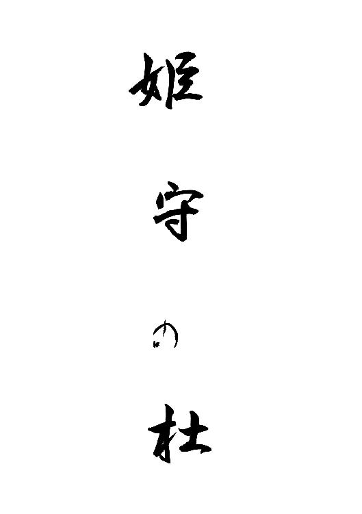
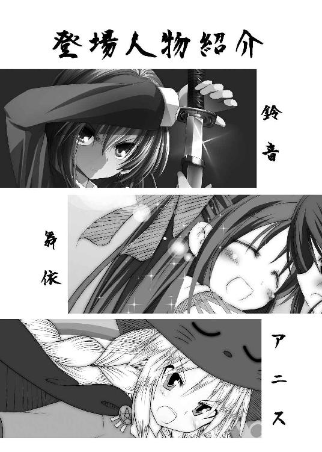
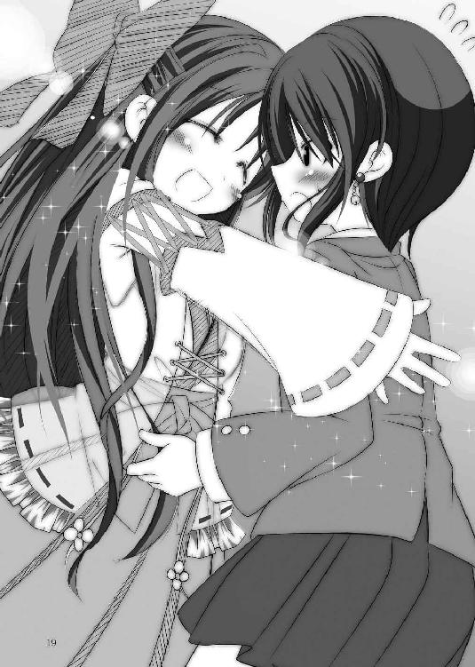
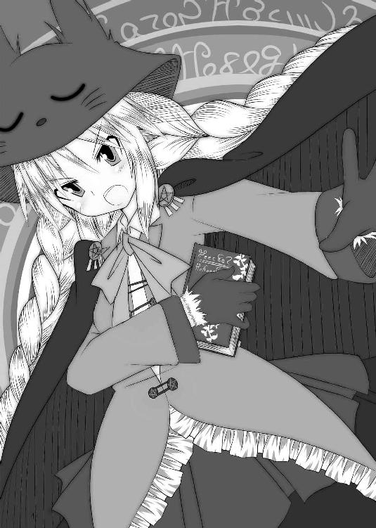
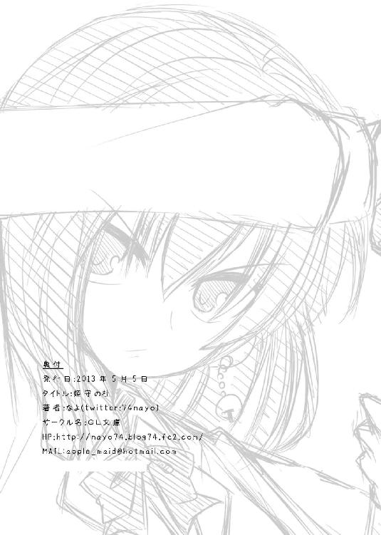
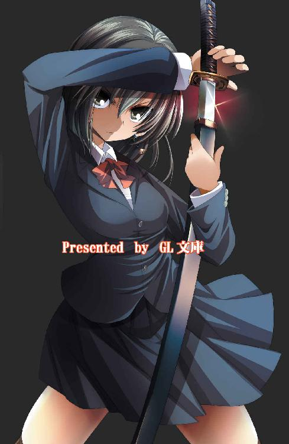

| 姫守の杜 (GL文庫) | |
| なよ | |
| (2014) | |


夢を見る――。
昔の――まだほんの子供だった頃の夢――。
けれど、懐かしいという感情は湧いてこない。
私はそのことをよく覚えていないから。
そもそも、本当にあったのか、それともただ記憶をかき混ぜて作り出された虚像なのか、判別がつかないでいる。
しかも、目が覚めると泡沫のように消えてしまう。そんな曖昧な夢。
見るのは決まって冬の季節だ。今では風物詩のようになってしまっているけれど、それを心待ちにしたことはない。
また、あの夢――。
夢の内容は忘れてしまうのに、幾度となく繰り返し見ていることだけは覚えている。
おぼろげに記憶の片隅に残るのは、恐怖――。ただそれだけだった。
＊＊＊
目の前が真っ赤に染まっていた。
それが自分の額から流れているとも気がつかず、幼い私が目の前の光景に震えている。
体はぐったりと横たわり、かろうじて動かせる顔を『それ』に向けていた。睨みつける気力も湧かず、この身の無力さに涙が頬を伝わっていた。
目の前には『それ』が立ちはだかり、私と同い年ぐらいの幼い少女が二人――私と同じように震えている。
私が守ると誓ったのに、約束をしたのに、何もできずに、死の淵に立たされていた。
――ごめんね、ごめんね。
もう、私には何もすることができない。
朦朧とする意識の中、私は二人に謝り続けていた。
できれば逃がすことくらいはしてあげたかった。でも、時間を稼ぐことすらできないほどに、『それ』は強かった。
『それ』がゆらりと体を震わせて迫ってくる。私たちを喰らうために。
「鈴音っ！」
私の名を呼ぶ声が聞こえた。
この声は誰？ とても懐かしくて、力強くて、安心できる声。
ああ、これでもう大丈夫。――が来てくれたから。
優しく抱き起こされて、私たち三人は大きな木の下に避難させられた。
「ここで待っていなさい」
優しい笑顔を向けられて気が抜けた私は、そこで意識を手放してしまった。
どれくらい経ったのか、次に目を覚ましても私たちはまだ同じ場所に留まっていた。
激しい戦いの音が聞こえる。
体は相変わらず動かない。
目だけ音のする方へ向けると、今や『それ』と対峙する大人の数は十数名を超えていた。
それだけいても、『それ』を仕留めることができずにいるのだ。
皆の表情に焦りの色が浮かんでいた。
「仕方ない、こうなっては――」
しゃがれた声。年老いた誰かの発した声とともに、それまで戦っていた者たちが皆『それ』と距離を置き始める。
ただ一人を除いて――。
その人は私たちのことを助けてくれた人だった。
――嫌だ。
この続きを私は知っている。何度も何度も繰り返し見た光景。
誰か止めて。そうじゃないと――が死んでしまう。私たちのせいで――。
どうにもならない。この身は動かない。ましてやこれは夢の中。私にできることなど何もないのだ。
「鈴音、強くなりなさい」
その人が振り返り、優しく言った。
この悪夢から早く覚めろ。そうすればまた何もかも忘れることができる。
全身を濡らすほどの汗をかきながら、それでも「何か嫌な夢を見た」で済ませることができるのに。
私の願いは届かない。
その人が私たちに背を向けた。
何事かを口ずさむと、体が光り輝き始めた。周りの大人たちはその人と『それ』を取り囲み、不思議な術を使って結界のようなものを張る。
次の瞬間、その人の体を何かが突き破った。攻撃されたのだ。目の前の『それ』に。
透明な水の刃のようなものが背中から飛び出し、すぐに液体となって血と交わりながら地面にこぼれ落ちる。
それでも誰も動かない。その人も何かを口ずさむのを止めようとしない。
その人がもう一度こちらを振り向いた。
口元が私の名を呼ぶように動いた。それが最後の別れであるかのように。
「いやぁああああああああ！」
私は叫んだ。
その人の全身から光が溢れだす。周囲すべてを照らす強い光。人の持つ生命の力すべてをこの一瞬に燃やし尽くしたのだ。
光にのみ込まれて、意識が再び薄れていく。
それ以降のことは何もわからない。
ただ、大切な何かを失ってしまったことだけは理解していた。
目覚ましの音が遠くで聞こえた。
反射的に鈴音は腕を伸ばして、目覚ましを止めるためのボタンを探し始める。意識は次第に覚醒を始め、目覚ましを止めると同時に、鈴音は目を開けた。
「寒っ」
素早く腕を布団の中に引き戻して、鈴音は猫のように体を丸める。
二度寝をしようとは思わないけれど、すぐに布団から出るには覚悟を決める時間が必要だった。
一階ではすでに母親の霧花が朝食を作っているはず、そして今日は終業式。明日からは高校生活初めての冬休みだ。部活はあるものの、多少は遅くまで寝ていられる。
楽しいことを思い浮かべながら、「よしっ」と気合を入れて布団から飛び出した。
すると、途端に全身に冷や水を浴びたかのような、猛烈な寒気が襲ってきた。
「うう、めちゃめちゃ寒い」
鈴音は自分の体を抱きしめてぶるぶると震えだした。
気温が低いだけではない。パジャマが寝汗で濡れているせいで余計に冷えているのだと気がつくのに、それほど時間はかからなかった。
そういえば、また例の夢を見た気がする。
内容は目が覚めるとすぐに忘れてしまうのに、嫌な夢だったということだけは覚えている。
この季節になると一度は見てしまう。全身に嫌な汗をかくような悪夢を。
しかし、どんな夢だったのか必死に思い出そうとしても、頭の中に霧がかかったようにぼやけて何も思い出せなくなってしまう。
まあ、嫌な夢なら覚えていないほうがいい。
鈴音は細かいことをあまり気にしない性格であったから、すぐにそのことを考えるのをやめた。
それよりも体を温めることが先だ。
鈴音は小走りに一階へ駆け下りると、扉のところからキッチンで朝食を作っていた霧花に声をかけた。
「霧花さん、給湯器のスイッチ入れて！」
鈴音は母親のことを「霧花さん」と呼んでいる。霧花が自分でそう呼ばせているのだ。
自分を若く保つためだとか、個人を尊重するためだとか、そんな理由を聞いたことがあった気がする。
そのかいあってか、霧花は鈴音から見ても若々しく、それこそ外を一緒に歩けば姉妹だと勘違いされることも多かった。十六の鈴音と姉妹に見られるたびに、霧花は嬉しそうに頬を染めていた。
年はいくつだったか。あまり聞かれたくなさそうだから、鈴音は聞かないことにしていた。何より若く見える母親のことを鈴音は好きだったから。
「鈴音、まずは朝の挨拶でしょう？」
霧花が小さくため息をつきながら、腰に両手を当てて振り返る。
少しだけ怒ってます、と主張するように、頬がわずかに膨らんでいる。そんな子供っぽい仕草が似合ってしまうなんて、本当にいくつなんだろうと、つい聞いてみたい衝動に駆られてしまう。
「はーい、おはようございます。って、もー寒いんだから早くシャワー使わせて！」
鈴音はそれだけ言うと、扉を閉めて早々に浴室へと駆け込む。
「まったく、年頃の乙女なんだから、もう少しおしとやかにならないものかしら」
キッチンからは、そんな少しだけ母親らしい言葉が聞こえていた。
シャワーを浴びると、嫌な夢のことはお湯と一緒に流れて行ってしまう。
しかし、いつまでも悪夢を見るのは気持ちのいいものではない。そのうちなんとかしないとなぁと思いつつも、熱いお湯の気持ちよさには勝てず、悪夢のことを忘れてうっとりと目を細めた。
体の芯まで、とはいかないものの、十分に体を温めてシャワーを止める。するとすぐにまたひんやりとした空気が鈴音の肌を包み込む。
「うー、やっぱり脱衣場にもファンヒーターあたり欲しいなぁ。でも電気代が高くなると霧花さん怒るだろうしなぁ。そもそも買ってくれそうにないからなぁ」
何度か交渉をしてみたものの、ほんの数分しかいない場所にヒーターは不要と、ばっさりと切り捨てられたことを思い出す。
仕方なく急いで下着とパジャマを身につけ、肩にかかる程度のところで切った髪をタオルで乾かしながらキッチンへと向かう。
「はー、やっぱり暖房のきいた部屋は最高だよね」
キッチンではすでに朝食の準備が終わり、部屋も程よく暖まっていた。
「誰が暖めていると思っているのかしら？」
「感謝しています」
暖かい緑茶を差し出してくれる霧花にお礼をいいながら、鈴音は自分の席へと座る。
テーブルの上には鈴音と霧花、二人分の食事が置かれていた。
鈴音の家の朝食はいつも和食だ。
ご飯にみそ汁にお漬物、卵焼きあたりが定番で、それにハムやソーセージ、焼き魚などが日替わりで出てくる。
そろそろ自分も簡単な料理くらい作れるようになりたいと思ってはいるものの、なかなか実行に移せずにいた。せっかく冬休みに入るんだし、ここらで本格的に料理を教えてもらうのもありかもしれない。そんなことを考えながら、鈴音は朝食に手をつけ始める。
「鈴音は明日からお休みよね？ 部活の予定はどうなっているの？」
「んー、年内は二十九日までで、年明けは五日からだったかな」
鈴音は壁のカレンダーを見ながら予定を思い出す。
「お弁当はいるの？」
「うん、お願い」
鈴音は都内の自宅からほど近い女子高に通っていた。通学時間二十分以内という条件で選んだ高校だったが、鈴音の学力にもあっていて、それなりに楽しい学校生活を送れている。
部活は合気道部に入っていた。それは、鈴音の見る悪夢と無関係ではない。何か悪いことから漠然と自らの身を守らなければならないと感じ取っていたのだろう。自然と武道系の部活を選んでいた。剣道部や空手部も候補にあったが、そこはやはり年頃の少女である。二つの部活のキツさなどを聞いて、できればもう少し楽なのをということで、弓道部と合気道部が候補にあがり、道具を使わず出費も少なそうという理由で合気道部に入部したのだ。もっとも、袴がそこそこの値段をするということを知ったのは、入部してからのことだったが。
まだまだ思い通りに技を出したりはできないものの、少しずつ強くなっているという実感はあった。おかげで精神的にもだいぶ余裕が出てきて、悪夢に対しても子供の頃ほど怖がらなくなっていた。このまま続けていれば、なにかしら良い方向へ向かうのではないかという期待もあって、部活動は熱心に取り組んでいる。
「部活もいいけれど、成績の方はどうなっているのかしらねぇ。楽しみにしてもいいのかしら？」
「う......」
鈴音は卵焼きを掴もうとしていた箸をピタリと止めた。
「わ、悪くはないはず......多分......」
鈴音は一学期の成績を思い出す。
一学期は確かにあまりよろしくなかった。さすがに棒一直線の電柱評価はなかったものの、あひるさんがうろちょろとしていた記憶がある。一学期は部活動に精を出しすぎて、授業についていくのがやっとという毎日が続いていた。しかし、二学期に入ってからは色々と要領がわかってきたので、期末テストはそれなりの手ごたえと結果が出ていた。英語はちょっと苦手だけど、他は一学期と同等、もしくはそれよりも良い評価になっているはずだ。
「それじゃあ楽しみに待っていることにするわ」
霧花がからかうように言いながら、デザートのリンゴウサギを差し出した。
「うー、あまり期待していないでしょう」
「そんなことないわよ。鈴音がちゃんと勉強をしていたことも知っているし、テストの結果も見せてもらっているものね」
「じゃあさ、成績が上がってたら、お小遣いアップっていうのはどうでしょうか」
ここぞとばかりに鈴音が切り出す。
「お小遣いは学年が上がったらと決めているでしょう？」
難無く返して、霧花も朝食を取るべく鈴音の正面の席に座った。
「ならどっか連れていって欲しいなぁ」
「そうねぇ。スカイツリーでも見に行きましょうか？」
「えー、それは友達と今度行くからいいよ」
朝食をあらかた食べた鈴音は、リンゴウサギを一口頬張って続ける。
「そうだ、京都とかどうかな」
「京都？」
霧花が怪訝そうな表情で聞き返す。
「霧花さんの実家があるんでしょう？ それに、私もあの子に......えーと、名前忘れちゃったけど、幼馴染の女の子がいたと思うんだけど、久しぶりに会いたいな。っていうか、私も昔はそこに住んでたんだっけ？ あれ？ どうだっけ。まあいいや。とにかくどこか旅行に行きたいなぁ」
「......」
霧花は一瞬顔を強張らせたが、すぐにいつもの優しい表情に戻った。
「あちらは色々と忙しいから、今から急にっていうわけにはいかないわねぇ。でもそうね、そろそろ一度戻る時期かもしれないわね。来年あたりに考えておきましょう。今年は箱根に温泉に入りに行くのはどうかしら。年明けの三日くらいなら予約できるところもあると思うけど」
「温泉っ？ いいねぇ。年明け早々優雅じゃない」
鈴音はリンゴを二つほど平らげて、「ごちそうさまでした」と手を合わせた。
「それじゃ楽しみにしてるね」
「ええ」
鈴音は食器を流しに持って行って、足取りも軽く二階の自室へと舞い戻る。
「京都へ行けないのは残念だけど、温泉もいいよね～。言ってみて良かった」
軽く鼻歌を歌いながら、髪をブラッシングして鈴音は制服に着替え始めた。
ほとんど黒に近い濃い紫色のブレザーに、女子高生らしくスカートは短め。胸元には赤色のリボンタイが可憐に飾られている。
毛先を少し梳いた艶のある黒髪は肩のところで揃えられ、左耳を出すようにしてヘアピンで留められていた。その左耳には赤く輝く小さな宝石のようなものが埋め込まれ、さらには鈴のイヤリングも取り付けられている。
「うん、よし」
着替え終わった鈴音は、最後に前髪をちょいちょいと直す。その時にほんのわずかに額の傷痕が見え隠れする。鈴音はもう気にしていないが、それがいつ出来たものかさっぱり覚えていない。普段は前髪で隠れているし、目立たないくらい薄い傷痕だから、よほど注意深く見ないと他人は気がつかないことも多い。
いつも通りの髪型にセットし終わり、鏡に向かって微笑む。
さっぱりとした髪型を好む鈴音は、可愛いというよりは、凛々しいという表現がよく似合う。顔立ちもはっきりしており、さらには明るい性格も相まって、密かに同級生のみならず上級生にも人気があることを本人は知らない。
時計を見て登校時間になったのを確認してから鞄を手に取り玄関へと向かう。今日は終業式だけだから、鞄の中身はほとんど空だ。
「それじゃ行ってきます」
「いってらっしゃい。車には気をつけるのよ」
「はーい」
キッチンから声だけで見送りをしてくれる霧花に返事をして、鈴音は玄関の扉を開けた。
都内といえども、最近の冬は凍えるような寒さになることも珍しくない。鈴音は空を見上げて白い息を吐いた。
「寒いぃ」
スカートから覗く太ももが、寒さのあまり鳥肌を立てていた。クラスで一部の子がやっているような、ジャージを下に履いての登校を本気で考える瞬間だ。
しかし、清く正しい女子高生としては見た目も大事にしたい。
そのはざまで揺れながら、鈴音はほとんど無意識にポストを開けた。出かけるときや帰ってきたときの癖で、朝は何も届いていないとわかっていつつも、ついやってしまうのだ。
しかし、今日ばかりは違った。
「うわっ」
突然、鈴音はポストから手を離して一歩後ずさった。
「何あれ......」
もう一度ポストを恐る恐る開けて、中に入っているものを取り出して鈴音は眉をしかめた。
それは手紙だった。ただし、裏一面を真っ黒に塗りつぶされた薄気味の悪い手紙――。
「うわー。誰のイタズラ？」
人差し指と中指だけで手紙を掴んで、表に返す。
するとそこには、先ほど霧花に行きたいとお願いしていた京都の住所が書いてあった。
差出人は個人ではなく、火護神社となっている。その神社の名前には覚えがあった。
「火護神社って、あの子がいたところだよね」
顔も名前も思い出せない少女のことが頭をよぎる。
「でも何これ。あっちの風習か何か？」
不気味なことには変わりなかったが、出所がわかって安心した鈴音は、手紙を持って玄関へと戻る。
「霧花さーん、変な手紙が来てたんだけどー」
玄関から大声を出すと、霧花がタオルで手を拭きながら出てきた。朝食の片付けをしている最中だったようだ。
「何かしら？」
「これ、裏一面真っ黒になっていて不気味なんだけど、何か意味があったりするのかな」
「裏一面真っ黒ですって？」
突然、霧花は怖い顔をして鈴音から手紙を奪うようにして受け取った。そしてすぐに喉から絞り出すようにして鈴音に告げる。
「鈴音、今日学校が終わったら京都へ帰りますよ」
「ええ？」
先ほどは急に帰るのは無理と言っていたのに、この変わりよう。よほど大事な手紙なのか、霧花は厳しい表情のままだ。
「今日って、私、明日からの部活は......」
「お休みしなさい。私からも先生には電話で連絡しておいてあげるから」
「いつくらいまで休めばいいのかな」
「......そうね、年内はずっと京都にいることになるでしょうね。もしかしたら......」
霧花はきつく唇を噛んで、その先は言わなかった。
「えー？ そんな大ごとなの？ 冬休みのうちにレギュラーを目指せるくらいになりたかったのに。っていうか、その手紙ってどんな意味なの？」
鈴音が聞くと、霧花は少し悲しそうな顔をして答えてくれた。
「とても、悪いことの報せよ。鈴音にも大きく関係のある、大事な......大事な報せ......」
その表情を見てしまったら、行きたくないとは言えなくなってしまった。
終業式が終わった後、合気道部の部長や部員に年内は部活に出られないことを告げると、それはもうひんしゅくを買ったものだ。
「お家の事情なら仕方ないけれど、鈴音さんがいないのは寂しいわね。せっかく手取り足取り色々なことを教えてあげられる機会だったのに」
「鈴音がいないんじゃ練習に張り合いがないよ」
「年明けからはちゃんと出てこられるんだよね？ ああ、あと練習をサボる代償として、お土産をいっぱい買ってくること」
等々。ひんしゅくというよりは、むしろ愛されているからこその言葉が多かったような気もするが、これも鈴音の人徳のなせる技だろう。
それらの部員に対して、鈴音は丁寧に言葉を返して自宅へと向かった。
自宅ではすでに霧花が荷物をまとめて、いつでも出かけられる準備を整えていた。
「もう出発するの？」
「早いうちに出ないと、あちらに着くのが真夜中になってしまうわよ」
霧花は車で行くつもりなので、東京都内から京都へは五〇〇㎞を超える行程となってしまう。渋滞がないとしても、途中で何度か休憩をはさむ必要があり、そうなると七時間程度はかかってしまうことになるだろう。そうなると、順調にいったとしても、到着するのは夜の八時か九時か。
「私もすぐ荷物をまとめてくるね」
「着替えは二、三日分でいいわよ。それ以上滞在することになるようなら、あちらで買いましょう」
「ほんと？ やったね」
「ああ、下着だけはたくさん持って行きなさい」
「はーい」
車を運転したことがなく、単純な計算しかできない鈴音でも、一刻も早く出発したほうがいいということは理解できるので、返事をしながら急いで二階へと駆け上がった。
自室へ入るとすぐに制服を脱ぎ、押し入れの中から旅行で使う大きめのバッグを取り出す。その中へ下着や着替えを詰め込んでいく。あまり時間がないからお気に入りのものを数点。バスタオルなんかはあちらの家で借りられることを期待して除外する。歯ブラシやドライヤーは使い慣れた物のほうがよさそうなので、後で入れることにして――。
「これも持って行こうかな」
鈴音は先ほど脱いだ制服を手に取る。
どうせなら幼馴染のあの子に見せてあげたい。ついでに制服の交換をしてみせるのも面白いかも。そんなことを考えて、鈴音は制服を綺麗に畳んでバッグの中へ入れることにした。
あまり荷物を増やさないほうが楽だというのはわかっているものの、冬服はやはりかさばってしまう。知らず知らずのうちに膨れ上がったバッグを担いで、鈴音は一階へと降りてきた。
「準備は済んだ？ ちゃんと冬休みの宿題も持ったのかしら？」
「う......、そ、それは、今回は無しということで......」
あまり良くないことが待っているとは聞いたけど、鈴音は詳しい事情は何も知らない。だから、どうしても旅行気分になってしまう。
「まあ、いいわ。もし無事に帰って来ることができたら、その時にやればいいわ」
霧花は大して咎めもしなかった。
――無事に帰ってこられない可能性もあるってこと？
鈴音はごくりと唾を呑んだ。一体京都で何があるのだろう。
悪いこと――と聞いて、鈴音は誰かが亡くなったのかと思っていたが、どうやらそうではないのかもしれない。
何か、あたりまえだと思っていた日常とはかけ離れたことが起きるような、そんな予感がしていた。
車の中で、鈴音は妙に緊張していた。
それは出かける前に霧花から聞いた言葉のせいでもあったし、何より霧花がいつもとは違い、ぴりぴりとした空気をまとっていたからだった。
その空気にあてられて、鈴音も居心地の悪さを隠すことができない。
重い空気は苦手だ。
鈴音は喉の調子を確かめるようにして、「んっ」と喉を小さく鳴らして口を開いた。
「霧花さん、京都で何があるのか教えて欲しいんだけど、私にも関係のあることなんだよね？」
「............」
霧花からの反応はしばらくなかった。鈴音は急かすような真似はせずに、霧花が口を開くのを待つ。
「鈴音は......」
霧花が口を開いたのは、一分程してからのことだった。
「鈴音は昔のことを覚えている？」
「昔のことって？」
「京都で暮らしていた時のこと」
「......少しだけなら」
「そう......」
鈴音は昔のことをあまり覚えていない。京都で暮らしていたのは小学校へあがる前のことだから、十年以上前のことである。その頃のことはおぼろげで、霞がかったように不鮮明だ。幼馴染の女の子と遊んでいたのは覚えているが、それ以外のこととなると、ほとんど思い出せない。どうやって暮らしていたのか、いつ東京へ引っ越したのか、全く記憶に残っていなかった。
もっとも、鈴音はそのことをあまり気にしたことがない。子供の頃のことなんて覚えていないのが普通だとずっと思っていたから。友人たちともそんな小さな時のことなんて話す機会もないし、聞かれもしたことがなかった。せいぜい小学校に入ってからのことくらいのものだ。
「昔のことが関係あるの？」
「そうね、関係あるわ。京都へ戻れば思い出すこともいくつかあるでしょうね」
鈴音は必死に記憶を呼び起こそうとしてみる。しかし、やはり鮮明に思い出すことはできない。そんなにも重要なことなら忘れるはずがないのに......。
「鈴音、何があっても心を強く保ちなさい」
「どういうこと？」
「もしかしたら、つらいことを思い出さなければならないかもしれないわ。でも、大丈夫。きっとすべてうまくいくわ。年が明けたら一緒に温泉に行きましょうね」
「霧花さん、私の質問に答えてないよ」
「ごめんなさい。まだ言うわけにはいかないの。鈴音が何も知らないまますべて終わるのが一番いいのよ」
霧花が鈴音の頭を撫でる。すると、すぐに鈴音の意識に睡魔が襲ってきた。
「少しお休みなさい。目が覚めたときには、今のこともまた霧に包まれるわ」
「霧花......さん......」
鈴音の意識が薄れる。
何か不思議な力が働いたのはわかった。霧花の言葉が頭の中でぐるぐる回る。しかし、そのことを考える前に、鈴音は助手席で寝息を立て始めてしまった。
目が覚めたとき、辺りはすでに暗闇に包まれていた。
「んー」
鈴音は助手席で大きく伸びをする。
「霧花さん、ここどこらへん？」
目元を拭いながら鈴音は窓の外へ視線を向ける。深い闇の中、車は街灯のない山道を走っているようだった。いつの間にか高速道路を下りていたようだ。
「もうじき到着するわよ」
「え？ もう着いちゃうんだ。私ずっと寝たままだった？ ごめんなさい」
「どうして謝るの？」
霧花は小さく笑う。
「だって運転って大変じゃない？ せめて話し相手でも、と思っていたのに」
鈴音は自分がいつ寝てしまったのか思い出そうとする。しかし、どうしても思い出せなかった。
「いいのよ、ラジオをかけながら運転していたから退屈しなかったわ」
「うー」
唇を尖らせて、鈴音は車に備え付けられた時計に目を向ける。時刻は夜の八時になっていた。行程は順調だったようだ。続いてカーナビの画面を見ると、車のアイコンは道なき道を走っていた。私の進むところが道になるとでもいいたげに、何も映らない画面の中を爆走し続ける。
「このナビって古かったっけ？」
「ちゃんと地図データは更新しているわよ」
車は確か二年ほど間に買った新車のはずだ。更新もしていると言ったし、地図が古いわけもない。それに、よく目を凝らせば、今走っている道はかなりボロボロだ。所々舗装がはがれ、雑草が生えているように見える。車のライトだけでそう分かってしまうのだから相当なものだ。そんな最近になって作られた道ではないのに地図に表示されないということがあるのだろうか。
「ここはもう火護の私有地だから映らないだけよ。関係者以外立ち入り禁止の場所だから、データも作りようがないでしょうね」
「ああ、そうなんだ」
鈴音は納得しかけたが、すぐに目を見開く。
「私有地って、どこからどこまでっ？」
ナビの画面はすでに道らしい道も、家屋も何も映していない。しかし、今話している間だけでもそれなりの距離を移動しているはずだ。
「この辺り一帯は全てね」
「一帯？ 嘘でしょ？」
「嘘じゃないわよ」
「えー、京都にそんな場所あったんだ。古い街並みのところばかりじゃないの？」
「あら、それは問題発言ね」
霧花が咎めるような口調になる。
「鈴音は、京都府の形をちゃんとわかっているのかしら。市街地なんてほんの一部だけ。そこを外れたら山ばかりよ？ ちゃんと地理の勉強をしていたのかしら？」
「そ、そうだったっけ？」
鈴音の頬を冷や汗がたらりと流れ落ちる。霧花の言うとおり、京都府の形がイメージ出来なかったのだ。大阪と奈良の近くにあるのはわかっているけど、全貌がまったくわからない。上のほうはどこまでが京都か想像もつかなかった。
「ちゃんと後で確認しておきなさい」
「はーい」
返事をして、鈴音は再び窓の外に視線を向ける。
そういえば、何か霧花に聞き忘れていたような気がした。車に乗ってすぐに......。
そこで思い出した。
京都へ来た理由――何があるのか聞こうとしていたんだ。
「霧花さ......」
「もうじき着くわよ」
口を開くと同時に、霧花が目で正面を見るように促してくる。鈴音がつられてそちらを見ると、巨大な木製の門が見えてきた。今走ってきた道と同じく、かなり古びている。相当古くからあるもののようだ。門の両脇には盛大に篝火が焚かれていた。
「今時あれで明かりをとっていたりするの？」
「言っておくけど、ちゃんと電気も来ているわよ。あれはそれなりに意味があってやっているの」
「へえ」
門の前まで来ると、霧花は一度車から降りて呼び鈴を鳴らして何事か告げていた。車へ戻ってくるとすぐに門は開かれた。どうやら自動らしい。
――結局ここに来た理由を聞きそびれてしまったけど、もう着いちゃったからなあ。
鈴音はここまで来たのならどうせすぐにわかるだろうと、霧花に聞くのを諦めることにした。
いったい何があるのだろう。
胸がざわめく。
――私はこの場所を知っているはず。それなのに、初めて見るものばかりな気がする。
不思議な感覚に包まれながら、鈴音は心を鎮めるように、小さく息を吐いた。
「す、鈴音ちゃん？ 鈴音ちゃんなのっ？」
車から降りるなり、可愛らしい声が聞こえた。
「ん？」
声のしたほうを振り向けば、可憐な巫女装束に身を包んだ少女が一人。口元に両手をあてて、わなわなと震えていた。
白衣と緋袴の上に千早と呼ばれる半透明の羽織を着て、手には不思議な模様の描かれた衵扇を手にしていた。千早には水、雷、炎の模様が薄く入り、三十九枚の薄板を彩糸で綴じた衵扇には、草花と人物のようなものが描かれ、金銀の切り箔が散らされていた。
鈴音の知っている巫女の格好とは少し違う。より本格的な――祭事でも執り行うかのような恰好だと鈴音は思った。
闇に溶け込んでしまいそうなほど濃く長い黒髪が風でふわりと広がった後、さらさらと音が聞こえそうな優雅さで元通りに落ち着く。
少し目尻の下がった、鈴音から見ても相当に可愛い少女だった。
「鈴音ちゃんだよね？」
「う、うん」
少女が小走りで近寄って来る。
この子の名前を知っている。忘れるはずがない。幼いころから一緒に遊んでいたではないか。
チクリと、鈴音の額の傷が小さな痛みを発した。
「ま、舞依ちゃん......？」
自信なく呼んだ名前だったが、途端に少女の顔がぱっと明るく輝いた。
「嬉しい、覚えていてくれたの？」
どうやら合っていたようだ。
名前を思い出したことで、鈴音の記憶が一気に鮮明になる。
そう、この子は舞依ちゃん......火護舞依ちゃんだ。どうして今まで忘れていたのだろう。いつも一緒に居たのに。あんなにも仲が良かったのに。
「ごめん、少しだけ忘れていたけど、今思い出した」
「ううん、いいの。思い出してくれて嬉しいっ」
舞依が弾かれたように鈴音の胸に飛び込んできた。
「わっ......と」
難なく支えて鈴音は舞依の顔をじっと見つめる。
幼いころの彼女はどんな感じだったか。もっとやんちゃで活発な少女だった気がする。それに比べて今の彼女はとてもおしとやかな、女の子らしい女の子になっている。十年という歳月は、彼女を立派な淑女へと変えたようだ。
「どうかした？」
舞依がいぶかしげな声を上げる。
「いや、舞依ちゃん可愛くなったと思って」
「きゃー、もう何言うの、鈴音ちゃんたらっ」
どんっと鈴音を片手で突き飛ばして、舞依はその場でうずくまる。左手で赤くなった頬をさすりながら、右手で地面に「の」の字を書いていた。
「鈴音ちゃんたら口がうまいんだから。そうやって何人の女の子を泣かせてきたの？」
「いや、そんなことしたことないし」
どうやら本質的な部分は変わっていないのかもしれない。自分が知っていたころの舞依の姿が重なって、鈴音は少しだけ安堵した。
「そういう鈴音ちゃんはカッコよくなったね」
舞依がちらちらっと鈴音を見上げて、赤ら顔のまま「ほう......」っと、ため息をついた。
「それって喜んでいいのかなぁ」
鈴音自身、可愛いと呼ばれるような容姿ではないというのはわかっているけど、一応年頃の乙女なので、嘘でもいいから可愛いと言われてみたいところだった。
「ごめんね鈴音ちゃん。でもね、だって想像していた鈴音ちゃんよりも凛々しくなっているんだもの。ずっとずっと鈴音ちゃんのことを考えていたんだよ。会えない間も鈴音ちゃんは元気でやっているのかな、どんな風に成長しているのかなって」
「そうなの？」
鈴音は少し申し訳ない気持ちになった。舞依のことを思い出したのは、今日あの手紙が来てからだったとはとても言えない。ましてや名前も、顔を見てようやく出てきたのだから。
「ああ、気にしないで」
鈴音の表情を見て、舞依は慌てて立ち上がって手を振る。
「わたしが勝手に鈴音ちゃんのことを忘れられなかったっていうだけだから。それよりも疲れてない？ 早く中で休んで。霧花さまもお婆さまたちがお待ちになっています」
「わかったわ」
それまで軽く苦笑いをしながら様子を見ていた霧花が、手を挙げて応える。
「私は挨拶をしてくるから、鈴音は舞依ちゃんに案内をしてもらいなさい。舞依ちゃん、お願いできるかしら？」
「もちろんです」
舞依は胸を叩いて頷いた。

「鈴音ちゃん行こう」
「うん」
荷物を手にして鈴音はあらためて辺りを見廻してみた。
周りに民家と呼べるような建物が何もない山の中。そこに武家屋敷然とした古めかしい建物がどんと建っているのだ。思わずタイムスリップしたかのような感覚に襲われてしまう。
暗くてよく見えないが、少し離れた所には神社らしきものも見える。少しとは言っても、一つ一つの建物が大きいので距離感が薄れるが、歩けば数分程度はかかってしまうだろう。
他にも開けた場所や、蔵のようなものがいくつかありそうだったが、詳しい様子はさすがにわからない。
「舞依ちゃん、あれが火護神社だっけ？」
「うん、そうだよ」
「舞依ちゃんはそこの巫女なんだ」
「あー、そうと言えばそうなるのかなぁ」
舞依は少し考えて気まずそうに答えた。
「？」
正式な巫女じゃなくてお手伝いをしているだけなのだろうか。
「火護神社はちょっと変わった神社だから。普通の巫女はいないの」
「普通じゃない巫女がいるの？」
「う、うーん」
舞依はさらに難しそうに表情を歪める。そして鈴音のことを見つめて頭を下げた。
「ごめんなさい、どう説明していいかわからないの」
「そんな謝ることじゃないよ」
鈴音は慌てて舞依の肩を掴んで頭をあげさせた。
あまり聞いてはいけなかったことなのかもしれない。そもそも、自分だって昔はここで暮らしていたはずなのだから、それくらい知っていても当然なのに。
「私が覚えていないのがいけないんだよ」
「ううん、鈴音ちゃんは何も悪くないよ」
鈴音の手を、舞依は申し訳なさそうに目を伏せながら握った。
「鈴音ちゃんが覚えていないのは仕方のないことだから」
「え？」
なぜそんなことを舞依が言えるのか。
「鈴音ちゃんはわたしが守るから」
それまでとは全く違う、ひどく真剣な表情で舞依は鈴音を見つめた。
「舞依ちゃん、それどういうこと？」
突然「守るから」なんて言われても、何がなんだかわからない。
鈴音は初めて自分の記憶が朧げであることを不安に思った。霧花といい舞依といい、自分の知らないことを知っているようだ。
「......ごめんなさい。今はどう言っていいかわからなくて......」
舞依の声はとても悲しげだった。そんな声を聞いてしまったら、それ以上の追及ができなくなってしまう。
自分に関係のある、悪いことの報せ。それが何なのかまだわからない。けれど、あまり楽観的に考えることはできないのかもしれない。
鈴音は唇を噛んだ。
「わかった、今は何も聞かない」
「ごめんなさい。鈴音ちゃんがここへ来たということは、全てを話さなくてはいけないことだというのはわかっているの。でも、話す勇気がなくて......」
「いいよ」
舞依の頭を鈴音は優しく撫でた。
「舞依ちゃんが私のことを想ってくれているのはわかったから。話せるようになったらその時はお願いね」
「うん、ごめんね」
「それよりも、早く中に入ろ？ もう外にいるの寒くて」
「ひゃあ、ごめんなさい」
舞依は慌てて鈴音の手を引いて屋敷の方へと案内を始める。
その時、ふと鈴音は誰かの視線を感じたような気がして足を止めた。
「どうかした？」
「なんか誰かに見られているような気がして」
鈴音はその場で振りかえる。しかし、薄暗い闇の森が広がっているだけだった。
「......狸か猫でもいるのかもしれないね。鈴音ちゃんが美味しそうに見えたのかも」
「えー、狸も猫も人を襲ったりしないでしょう」
「わからないよ、人を化かす狸や猫又がいるかもしれないんだから。それこそ魔女だっているかもしれないよ？」
「えー、そんなのいるかなぁ」
「いるよ、だってここは火護の地だから」
少し沈んだ表情で舞依は告げる。
「舞依ちゃん？」
鈴音の記憶にない表情を、舞依は時折見せる。それが成長したからなのか、他の理由があるのか、まだ鈴音にはわからない。ただ、そんな表情を見ていると、胸がざわめいて仕方ない。
「さ、早く家の中に入りましょう。ぐずぐずしていると、本当に悪い魔女に鈴音ちゃんが襲われてしまうかもしれないわ」
今度こそ舞依は少し強引に鈴音の手を引いて、家の中へと入っていった。
＊＊＊
「鈴音ちゃんの部屋はここで～す」
舞依に案内された場所は、屋敷の中でも奥の外れの方にある場所だった。
「ちなみに隣はわたしの部屋なんだよ」
「そうなんだ」
「鈴音ちゃんが来ると聞いて、急いで用意したんだから」
そう言って障子を開けて中を見せてくれる。
部屋は昔ながらの畳部屋で、八畳ほどの広さがあった。
家具らしいものは何もなく、石油ストーブが用意されているくらいで実に殺風景だ。
「二人で寝るには広いくらいかもね」
「あ、霧花さまは多分別のお部屋になるんじゃないかなぁと」
「そうなの？」
「お婆さまたちにつかまっているだろうし、多分母屋の方に泊ることになると思う」
「そっか、それだとちょっと寂しいかなぁ。......そうだ」
鈴音はパンと手を叩いた。
「どうせなら舞依ちゃんの部屋で一緒に寝るのはダメかな？」
昔ながらの日本家屋は、夜になると昼間とは違う顔を見せることが多い。人の世界から妖の世界へ。そんなイメージを鈴音は持ってしまう。こんな山奥にあるところならなおさらだ。夜でも明るい都会で育った身としては、ここで一人で眠るのは少し遠慮したいところだった。
「えっ、えっ、えーっ？ そんな、私は嬉しいけど鈴音ちゃんいいの？ 一人でゆっくり休みたいんじゃありませんか？」
「そんなことないよ。せっかく舞依ちゃんと再会できたんだし、色々とおしゃべりもしたいし、舞依ちゃんが迷惑じゃなければ一緒の部屋がいいな」
「は、はい。ふつつか者ですがよろしくお願いします」
舞依はその場で深々とお辞儀をした。
「それはちょっと違うような気もするけど、まあいいや。よろしくね」
「はいっ。それじゃあ早速お布団を移動させなきゃ」
「あ、ところで――」
鈴音は急に真顔になり、部屋の中へ入ろうとしていた舞依の肩に手を置いて振り向かせる。
「お手洗いってどこ？」
家を出てから一度も休憩をしていなかった鈴音は、色々と限界だった。
＊＊＊
明りは部屋の中を煌々と照らしているというのに、ひどく陰鬱とした暗い印象を抱かされる。
滋岳霧花は顔を伏せて、ほんのわずかに眉をしかめた。
久方ぶりの帰郷。
以前からこれほどまでに湿り気を帯びたような――言ってしまえば、カビ臭い場所だっただろうか。
確かに以前と何も変わっていない。部屋も、物も、そして......人も。
そのような感想を持ってしまうのは、都会での生活に慣れてしまったからかもしれない。
顔をあげて、十年前と何も変わらぬ姿のまま、そこに居続ける火護の重鎮たちに視線を向ける。
十畳ほどの細長い部屋の中、一番奥の一つ段の上がったところに、年齢など当の昔に判別できないほどしわがれた老婆が座り、下段の両脇に還暦を十は超えたであろう老人たちが八名ほど、皆一様に厳しい表情で座っていた。
霧花は入口に一番近い場所で一人、老人たちの視線を一身に受けていた。
「あちらでの生活は、どうであったかのぉ」
一人だけ段上に座っている老婆が、しわがれた声で霧花に問いかける。火護神社の最高権力者である、火護やえであった。
「はい、おかげさまで心身ともに健やかに時を過ごすことができております」
霧花は深々と頭を下げる。
「そうかい、そうかい。鈴音も普通の子として生活できたであろう？」
「はい、それはもう。とてもよい子に育ち、楽しげに高校生活を送っております。部活動にも励んでおりまして、来年こそはレギュラーの座をと意気込んでおります。私も日々成長していく鈴音に刺激を受けまして、このまま静かに暮らして行ければと考えていたところです」
「そうかい、そうかい」
やえは霧花の報告に満足したのか、顔面をしわくちゃにしながら何度も何度も頷いていた。
「よかったのぉ、ほんによかった。せめて少しの間だけでも人らしい生活を送らせてやりたいと思っておったに。これで心置きなく役目を果たすことができようて」
「......それは」
霧花は下唇を噛んだ。
わかりきっていたことだ。この火護の最高権力者が情に流されることなどありはしない。ただひたすらに火護に課せられた使命を果たすことしか考えていないのだ。
霧花が何を言ったところで意見を変えることなどありはしない。
それでも霧花は抵抗を試みる。鈴音と過ごした十年は、霧花の心を変えるにはじゅうぶんな時間だった。
「私も鈴音に課せられた役目は理解しております。しかし、それはあくまでも最終手段のはず。アレを倒すことさえできれば、鈴音は犠牲にならずに済むのですよね？」
「それは無論」
火護やえが重々しく頷く。
「われらとて、同胞の犠牲は少ないにこしたことはない。しかし、備えはしておかねばならぬ。こうして各地より戦雄や姫守を集めてはみたが、邪魎となったきゃつを滅する見通しは立たぬ。しかし、鈴音の力ならば少なくとも再び封印することはできよう。これは鈴音にしかできぬこと。この日の国を守るためには仕方のないことじゃて」
「うむ、仕方のないことよ」
「こうして普通の娘として十年生活させてやったのだ。鈴音も納得しよう」
「これも宿命。大災厄を起こさぬためには時に犠牲を払う必要もあろうて。仕方のないことと思って諦めてもらうしかあるまい」
やえに続いて下段に座っていた老人たちが次々に勝手なことを言い始める。
霧花は心の中で舌打ちをした。
なにが「仕方のないことだ」
その言葉を免罪符のように使わないでほしい。
霧花は喉まで出かかった言葉をかろうじて飲み込んだ。
「霧花にはこの十年、鈴音をよう育ててくれたと感謝しておる。これが最後の任になるであろう」
やえの次の言葉が容易に想像できて、霧花はうつむいた。
「鈴音にかけた術を解き、役目のことを伝えておくのじゃ」
「はい」とも「いいえ」とも言わず、霧花は無言で頭を下げて部屋を出た。
十年前であったなら、何の疑問も抱かずそれを実行したに違いない。
しかし、今は鈴音にひとかたならぬ愛情を抱いてしまっているし、火護のやり方に色々と疑問が出てきてしまった。この国を大災厄から守ることは重大な任であることはわかっている。
ただ、誰かを――鈴音を犠牲にしてまでやらなければいけないことなのか霧花には答えを出せないでいた。
＊＊＊
「なんか沢山人がいたね」
夕食を終えて舞依の部屋へと戻ってきた鈴音は素直な感想を述べた。
火護家の夜は幾分早い。山の中ということもあり周りに明かりが少なく、日が落ちればすぐに闇があたりを支配する。
鈴音たちが到着したときには、火護の人たちは夕食を終えていたようだ。鈴音と霧花の夕食を用意してくれているということで、てっきり二人だけで食べるものだと思っていたのだが、舞依に案内された大広間には、二十名ほどの人たちが集まっていた。といっても夕食を食べているというわけではなく、その後のお楽しみとでもいうのか、大人たちによる酒宴が繰り広げられている最中であったのだが。
その酒宴の中に霧花は混ざり、普段鈴音があまり見たことのないお酒を飲む姿を披露していた。鈴音は舞依に袖を引かれてお酒の香りがかすかに漂う末席に座り、舞依に世話をされながら夕食を取り始めた。
あまりなじみのない京料理風の、野菜を中心とした薄味の夕食を食べながら大人たちの様子を観察する。
親族なのか、はたまた火護の関係者というだけなのかわからないが、これだけの人数がいることに鈴音は驚いていた。
たしかにこれだけの広大な敷地と屋敷であれば、大人数が寝泊まりすることは可能だろう。しかし、遠くから聞こえる大人たちの会話は、毎日顔を合わせている者たちがするようなものではなく、久しぶりに会った者たちがするような話が多かった。現在の様子を尋ねたり、情報を交換するような会話が鈴音の耳に入ってくる。
そういった会話を聞いて、鈴音はすぐに一つの考えに思い至った。
これは、今日の出がけに言われた、自分に関する悪い報せに関係する人たちなのだと。そのためにこの人たちは集まってきているのだろう。
鈴音はあまり食が進まず、半分ほど食べたところで舞依と一緒に部屋へと戻ることにした。
部屋へ戻るとそれまで無意識に緊張していたのか、急に体の力が抜けて楽になる。そして舞依と向かい合うように座って、思ったままのことが口に出始めたのだ。
「普段はわたしたちの家族と、お手伝いをしてくれる人が数人いるくらいで、あそこまで人が集まることは滅多にありませんね」
「やっぱりそうなんだ」
鈴音は小さく頷いた。
「あの人たちって、私に関することで集まっていたんだよね？」
「......どうしてそう思うのですか？」
舞依の表情がわずかに強張る。
「だって、このタイミングで遠くから来ていた人もいたみたいだし、何より視線がね」
「視線？」
「うん。ほんの一瞬だけなんだけど、みんなが私に視線を向けていたから。初めは気が付いていなかったんだけど、それが十人以上となるとね」
鈴音は苦笑する。
「嫌でも気がついちゃうっていうか。ああ、見られてる。また、今度はあっちの人がってわかるようになって、――なじみのない顔だからっていうのも考えたんだけど、それにしては物珍しさじゃなくて、観察するような視線ばかりだったから、やっぱり私に関係することで集まってきてるのかなって」
「そう......なんだ」
舞依が顔を伏せる。
「一体ここで何が起きるんだろう。私には全然想像もつかないし、実感もないんだけど」
別段、鈴音の体に異変が起きているというわけでも、周りの状況が悪くなっているわけでもない。
目に見える形で何かがあるのなら対処もできるのに、それができないからもどかしい。
鈴音は小さくため息をついた。
「鈴音ちゃん」
舞依が鈴音の瞳を見つめる。
「悪いことなんて起きないほうがいいと思いませんか？」
「そりゃ、それにこしたことはないけど」
「みんなね、悪いことが起きないようにするために集まっているの。その為にみんなもわたしも準備をしてきた。だから、わたしたちを......ううん、わたしを信じてほしい。鈴音ちゃんにも知っておいてほしいこと、思い出してほしいことはあるけど、どういう順番で話せばいいのか決められなくて......。でも、ちゃんと鈴音ちゃんが納得してくれるようにするから」
ほんの少し前、舞依と再会したときにも同じことを言われた。
真剣な眼差しで自分のことを見つめる舞依のことは信用できる、鈴音はそう思っている。
「うん、わかってるよ。舞依ちゃんのことを信じているから」
「ありがとう、鈴音ちゃん」
遠慮がちに抱きついてくる舞依の体を、鈴音はやさしく抱きしめた。
今朝、家を出るまではいつもと変わらない日常が続くと思っていたのに、その日の夜に京都にいることになるとは予想していなかった。
人生何が起きるかわからないとはいうけれど、それが自分の身に降りかかるとは――。
今年の冬休みは部活に専念すると決めていたのに、その第一歩すら実行できずにいる。
年明けには何事もなかったかのように家に戻れるのだろうか。
鈴音は寝返りをうって、隣の布団に目を向ける。
そこには舞依が寝ているはずだったのだが、今は誰もいない。
数分――いや、もう十分以上は経っているであろう。舞依が起きて部屋の外へ出て行ったのは分かっている。
なかなか寝付けず、目を閉じたまま今日のことを頭の中で整理していると、舞依が布団から出る気配を感じたのだ。
お手洗いでも行くのだろうと思っていたのだが、それにしてはなかなか戻ってこない。
何か一人で抱え込もうとしているのではないだろうか。そんな不安がよぎる。
舞依は鈴音のことでずいぶんと思い詰めている節があった。
久しぶりに会った幼馴染にあまり無茶をされるのも気が引ける。自分にできることがあるのなら、一緒に手伝うこともできるのではないだろうか。
お手洗いに行くついでに、舞依のことを探してみよう。
鈴音も布団から這い出る。
すると途端に夜の冷たい空気が鈴音を包み込んだ。
こんな寒いのに、舞依はどこへ行ったのだろう。
鈴音は障子扉を開けて廊下へ出ようとしたのだが――。
「うっ、何これ、開かない」
扉はつっかえ棒でもされているかのようにびくともしない。反対側を開けようとしても同じであった。
「えー、何これどうなってるの？」
昔ながらの障子扉に鍵が付いているわけもない。眠る前までは普通に開け閉めできていたのだ。それとも、やはり何かの鍵でもかけられるようになっていて、舞依が用心のためにかけていったのだろうか。
それだと緊急事態が起きた時に困ってしまう。今みたいにお手洗いに行きたいときはどうすればいいというのか。
鈴音は何か仕掛けがあるのかもと、扉を押したり引いたりしてみる。まさかそんなはずはないと思いつつ、上下にも動かそうとしてみるがやはり動かなかった。
「建てつけが悪いのかも」
古い家だと長い年月の間に建物が少しずつ傾いてしまうということもありえる。
少し力を入れて扉に手をかけると、今度は予想外に軽い力で開けることができてしまった。先ほどまでの苦労が嘘のようだ。
勢いがつきすぎて、スパーンと夜中に迷惑なほどの大きい音がしてしまったくらいだ。
「もう、なんなのよ」
開いた扉を確かめてみるが、鍵のようなものも、つっかえ棒も存在していなかった。
「火護の七不思議だわ」
あとで舞依に聞いておかないと。
とりあえずはお手洗いにも行けるようになったので、鈴音は寒さから身を守るようにして自分の体を抱きしめながら廊下を歩いて行った。
しんと静まり返った廊下を一人で歩いていると、それまで気にもしなかったような考えが頭の中に浮かんでくる。
冷え切った窓ガラスに片手を当てて、暗闇を眺めて小さくため息をついた。
「どうして私は昔のことを忘れてるんだろう」
今思い出そうとしても、舞依と遊んでいたことがおぼろげに浮かんでくるだけだ。
霧花も舞依も、鈴音の過去に何か重要なことでもあるかのような言い方をしていた。
そして、時折見る悪夢。夢の内容は覚えていないが、あれこそが過去にかかわりのあることなのかもしれない。
「夢の内容を思い出さないといけないのかな」
思い出したくないと心が拒絶しているのがわかる。あれは、自分にとってよほどつらいことに違いない。
それでも、いつかは向き合わないといけないと思っていた。それが今なのかもしれない。
気乗りはしないけど、舞依の様子を見ていたらそんなことは行っていられない気がする。
早く、このよくわからない状況を抜け出して家に戻りたい。
その為に、少しくらい嫌なことを思い出すことになっても我慢はできる。
鈴音は窓に触れていた手を握り締めた。
視界の中に小さな変化が起きたのはその時だった。
ぼうっと、木々の奥――闇の中で何かが赤く揺らめいたのだ。
「え？」
初めは何かの見間違いかと思った。
あんなところに明かりが灯るような建物はなかったはずだ。
それにどう見ても人工的な光ではない。
「人魂......とかじゃないよね？」
この真夜中に、それも一人きりでそんなものを見たら叫びだしてしまうかもしれない。鈴音は自分の体を抱きしめた。
しかし、こんな京都の山奥で古いお屋敷に神社とくれば、それくらい出ても不思議ではない。
「舞依ちゃんどこに行ったのよー」
こういう時にこそ一番近くにいて欲しいのに。これではお手洗いにも怖くていけない。
鈴音が怖がっている最中にも、それはゆらゆらとゆらめき気がつけば四つほどにまで増えていた。
そこにきてようやく鈴音はそれがオカルト的なものではなく、いたって普通の炎であることに気がついた。篝火のようなものが焚かれているのだ。門のところで見たのと同じやつなのだろう。
四つの炎が周囲を照らし出す。
篝火が焚かれたということは、そこに誰かがいるということになる。
鈴音は目を凝らして誰がいるのか確かめようとした。
しかし、いくら篝火があっても相当に離れた場所、しかも木々にさえぎられて詳しい様子を見ることができない。
それでも一瞬、鈴音の記憶と重なる何かが見え隠れした。
やはり人がいる。それも鈴音の見知った少女だ。一度そう見え始めたら、それはすぐに確信へと変わる。
ひらり、ひらりと、蝶の羽のように紅と白の色彩が踊る。
篝火に照らされた闇の中を、舞依が舞っていた。
「舞依ちゃん？」
見間違えなどではない。
出会った時と同じ巫女姿で、舞依が篝火に照らされながら舞っているのだ。
窓ガラスに額を付けながら、食い入るように舞依のいる場所を見つめる。
あんなところでこんな時間に何を？
当然のような疑問が湧いて出る。
巫女服を着ているということは、祭事に関係のあることなのだろうか。それの練習？ でもこんな真夜中に？
もとより答えなど出るはずもない。
何をやっているのか気になる。でも、近くへ行ってはいけないと、頭の中で警報が鳴っている。何かよくないものが、あそこにいると――。
額の傷が鈍く痛んだ。
なぜそんなことがわかるのか、鈴音にも理由は説明できない。ただ、なんとなくそう感じるのだ。
鈴音の見つめる先で、さらに変化が起こる。
舞依の周辺に灰色の煙のようなものが現れ始めたのだ。
その数は次第に増え、瞬く間に舞依の周囲を取り囲み、意志を持つ生き物のように舞依に襲いかかった。
助けないと！
反射的に鈴音は窓を開け、飛び出そうとした。
鈴音の中に、最初に感じた不安を打ち消すほどの強い感情が芽生える。
行って何ができるというわけでもない。ただ、そうしなければならないと鈴音の中の何かが騒ぎ立てたのだ。
たとえどんなことになろうとも、舞依を助けなければならいと――。
しかし――、窓は先ほどの障子扉と同じでびくともしなかった。
今度は鍵をちゃんと解除した。透明なガラスの向こうに何かが引っ掛かっているということもない。まるで不思議な力でも働いているかのように微動だにしないのだ。
「もう、なんなのよ。私は舞依ちゃんを助けないといけないのに」
鈴音は握りしめた右手でガラスを力強く叩いた。普通なら打撃音が少なからず鳴るはずである。それなのに、ガラスは音もせずに鈴音の力を受け止めていた。いや、力がまるで伝わっていないような妙な感触があった。
あきらかにおかしなことが起こっている。
こんなことをできる人たちを私は知っているはず。
「う......」
鈴音の額の傷が赤く浮かび上がった。
頭が痛い。
「はっ......はっ......」
知らずのうちに息が荒くなっていた。
――そう、私は知っている、あれが何なのか。そして舞依ちゃんが何をしているのか。
何か固い殻でも割れるようなイメージが湧いてくる。それとともに、少しずつ、少しずつヒビの入った殻の隙間から過去の記憶がじわりと染み出てくるのがわかる。
「はっ...はっ...はっ...」
吐く息の感覚が短くなる。全身が熱い。頭の中がぐるぐると猛烈な勢いで回転し始める。
視界が歪む。
もうダメだ......。
鈴音の意識が薄れる。
意識がなくなる間際に見たのは、舞依が華麗な舞で灰色の煙を霧散させていたところ。
そして――、
「危ないっ」
崩れる私の体を抱きとめてくれた、全身黒ずくめの少女だった。
――魔女？
それを確かめることもできずに、鈴音の意識は闇の中へと沈んでいった。
「舞依ちゃんっ！ ......はっ！」
目が覚めると、いつもとは違う天井が見えた。
無意識に伸ばした手を見つめる。虚空を握り締めた手の平にじっとりと汗をかいていた。
「あれ？」
一瞬、自分がなぜここにいるのかわからず混乱する。
「ああ、火護に来てたんだっけ」
カーテンの隙間から朝日が差し込んでいる。
舞依が隣で静かな寝息を立てていた。
何も変わったところのない、いたって普通の朝。
「......」
――違う。私はどうして布団で寝ているの？ 昨日、舞依ちゃんが真夜中に外で何かをしていたのを見ていて、その後倒れたはず。舞依ちゃんが運んでくれたの？ ......それも違う。意識を失う直前に、黒ずくめの少女を見たはずだ。
次第に鈴音の記憶が鮮明になってくる。
「あの子は誰？」
昨日の大広間にはいなかった子だ。
「私と同じように急に呼び出されて、私よりも後に来たのかな」
同年代に見えたから、舞依に聞けば何かわかるかも。
ちらりと舞依を見る。
「や、それよりも！」
鈴音は昨日の夜のことを完全に思い出していた。
舞依が灰色の煙を相手に何をしていたのか聞きださないと。あれを見てから、頭が割れるように痛くなって、何かを思い出し始めたのだ。
「舞依ちゃん、舞依ちゃん」
鈴音は気持ちよさそうに寝ている舞依の体を揺すった。
申し訳ないとは思いつつも、一刻も早く昨日のことを確かめたかった。
「うーん......」
舞依が寝返りを打って、薄く眼を開けた。
「ふあ」
小さな欠伸をしながら、鈴音のことを見つめてくる。
「あ～、鈴音ちゃんだ～、おはよう～」
少し寝ぼけているのか、間延びした声になっていた。鈴音の姿を確認するとまたすぐに目を閉じてしまう。昨日、華麗に舞っていた少女が本当に舞依だったのか自信がなくなってしまう。
「おはよう、舞依ちゃん。あのね、起きたばかりのところで申し訳ないんだけど、少し教えて欲しいことがあるの」
「なあに？」
舞依はまだ完全に覚醒していないらしく、目を閉じたまま上半身を起こすと、ゆらゆらと体を揺らしていた。
鈴音は舞依の両肩を掴んで、動きを止める。
「舞依ちゃん昨日の夜何してたの？」
「昨日？ 何もしてないよ～。夜中にお手洗いに行ったくらいで」
「嘘っ」
鈴音は舞依を掴んでいた指に力を込めた。
「舞依ちゃん、巫女服で外にいたよね？」
びくっと、舞依の体が跳ねた。完全に覚醒した瞳で、鈴音のことを凝視してくる。
やはりあれは舞依だったようだ。
「あれは、何をしていたの？ 灰色の煙みたいなのが舞依ちゃんに襲いかかっていたよね？」
「......どうして、知っているの？」
恐る恐るといった様子で舞依が尋ねる。
「どうしてって、この目で見たからだよ」
「部屋から出ることができたの？」
その口ぶりは、出られないのが当然であるかのようだった。鈴音の考えていた通り、何か仕掛けがされていたのかもしれない。
「扉は最初は全然開かなかったんだけどね。色々やってたら急に開くようになったの」
「色々って？」
「いやまぁ、横がだめなら押してみろ的なことしかやってなかったんだけど、最後にもう一度普通に開けようとしたらスっと開いたんだよね」
「ああ、そうなんだ......、ということはアニスちゃんの仕業かぁ」
舞依は小さく歯ぎしりをしながら呻くように呟いた。
「誰だって？」
「ううん、なんでもないの。術のことを――じゃなくて、変なこともあるもんだね」
「うん、そういう不思議な力のことも含めて聞きたいの」
鈴音はごまかすような舞依の言葉を聞き逃さなかった。
「えうえう」
舞依の目が泳ぐ。
「舞依ちゃん、私少し思い出したの。火護の人たちが不思議な力を使えること。そして舞依ちゃんがやっていたことを私は知っていることを。まだ具体的にどうって言えるほどじゃないんだけど、子供のころ確かにそれを私は見ていたし、知っていたはずだって」
「そう......なんだ」
舞依は悲しそうな瞳をしていた。
「......鈴音ちゃん」
舞依が何かを決意したかのように、真剣な声で鈴音の名を呼んだ。
「着替えて、少し散歩をしませんか？ 鈴音ちゃんが聞きたいというのであれば、わたしはそれに応えたいと思っています。昨日、わたしが何をしていたのか、そして火護の一族のことをできるだけ話します」
「うん、お願い」
朝もやの残る林の中を、鈴音と舞依は寄り添うようにして歩いていた。吐く息は白く、いつ雪が降ってもおかしくないほど気温は低い。昨日の夜はあれほど不気味に見えたのに、今は驚くほど清らかな空気に満ちている。
朝露に濡れた草木を踏みながら、二人は昨日の夜に舞依がいた場所を目指していた。
あまり光が差し込まず、山の上とあって想像以上に寒さが身にしみる。
鈴音は一度大きく息を吐き、体をぶるぶると震わせた。
「コートを羽織ってこなかったのは失敗だったかも」
「鈴音ちゃん、寒い？」
心配そうに舞依が声をかける。
「ちょっとね」
本当はかなり寒かったのだが、隣でもっと寒そうな格好をしながら平気そうにしている舞依を見たら、そうとは言えなくなってしまった。
紺色のジーンズに、厚手のパーカーを着ている鈴音に対して、舞依は昨日と同じ巫女装束なのだ。お世辞にも暖かそうには見えない。
「こうすれば少し暖かくなるかな」
遠慮がちに、舞依が鈴音の右腕に自分の腕を絡めてきた。体全体をくっつけて少しでも鈴音のことを暖めようとしているようだ。
「うん、だいぶ違うかな。舞依ちゃんはそんな格好で寒くないの？」
鈴音も舞依の腕を引き寄せて舞依のことを暖めようとする。
「もう慣れちゃったから。ああ、でも寒くないわけじゃないんだよ。ただ我慢できるっていうだけで」
平気と言って鈴音に離されないように、あわてて付け足す。
「そっか。舞依ちゃんはずっとここに住んでるんだもんね」
自分も昔は住んでいたはずなのに、その記憶はほとんどない。
昨日まではたいして気にもしていなかった。でも今は記憶を取り戻したいと切に願っている。いや、そうしなければならないのだ。
――その為に私はここに連れてこられたはずだから。
「舞依ちゃん、ここ......だよね」
林の中の、少し開けた場所で鈴音は足を止めた。
そこは、昨日の夜に舞依がいた場所のはずだ。その証拠に篝火の焚かれた跡がまだ残っている。
「うん、そうだよ」
舞依も、もう隠そうとはしない。
「ここで......わたしは邪霊を祓っていたの」
風が二人の間を吹き抜けた。これからの鈴音の未来を示すかのような、嵐にも似た強い風が。
「じゃ......れい......？」
その言葉には聞き覚えがあった。
「邪霊は人々の負の心が生み出した悪しき存在。恨み、妬み、嫉みなどの強い情念が形となったもの。思いが強ければ強いほど、邪霊の力は増して人々やこの世界に悪影響を与えるようになる。人や動物に取り憑き狂わせ――それだけじゃなく、自然そのものにも干渉し、放置しておけば大災厄へと繋がるそんな悪しき存在。わたしたちは、災厄が起こらないように邪霊をこの地に集めて定期的に祓っているの」
「ああ――」
――そうだ、確かに私はそのことを知っている。
鈴音はよろめいて、舞依にもたれかかった。
「ここ、火護を本家として、各地に分家や協力者が沢山います。その人たちが日々邪霊を祓って災厄が起こらないようにしているの。今この屋敷に集まってくれているのもそんな人たち」
鈴音の体を支えながら舞依は続ける。
「そして、わたしもその一人――。男性であれば戦雄、女性であれば姫守と呼ばれています。火護神社に普通の巫女はいません。いるのは邪霊と戦うことを選んだ姫守だけなの」
鈴音の頭の中で何かが弾けた。
姫守――邪霊――火護神社の役割、それらの記憶が蘇ってくる。
「そう......ここにいる人たちは邪霊と戦うことを使命にしているんだね......。舞依ちゃんも姫守になったんだ」
「うん。わたしはどうしても姫守にならないといけなかったから」
舞依の声には強い決意がみなぎっていた。
もたれかかっていた舞依から体を離して見つめ合う。
自分の知らない間に、舞依は過酷な使命を受け入れていた。
「私は......私はどうしてこの地を離れてしまったの？ 昔は舞依ちゃんと一緒に邪霊と戦うために修行のようなことをしていたはずなのに......」
舞依とともに過ごしていた日々のことは思い出した。でも、まだ記憶に霞がかかっている。何かとても大事なことが思い出せていない。とても大事な何かが......。
「それは、少しずつゆっくり思い出していけばいいと思うよ。一度にたくさんのことを思い出すと、混乱すると思うから」
舞依が優しく鈴音の頭を撫でた。
「そう......だね」
今しがた思い出したことだけでも、十分混乱している。
「そろそろ戻りましょうか。朝食の準備もできていると思いますから」
舞依が鈴音の手を取って歩き出す。しかし、鈴音は逆に舞依の手を引いて動きを止めた。
「舞依ちゃん、私に舞依ちゃんが戦っているところを見せて。そうすればもっと色々なことを思い出せるような気がするの」
「あまり無理はしないほうがいいと思うけど」
舞依が心配そうに振り返る。
「大丈夫。私、一刻も早く昔のことを思い出したいの。そうしないといけない気がするの。だって......だって私、舞依ちゃんのことを守るって約束していた気がするから」
――ああ、そうだ。夢の中でのことだ。あの悪夢の中で幼い私が舞依ちゃんのことを守ろうとしていた。でも――私は舞依ちゃんを守れていた？
「鈴音ちゃん、もうそこまで思い出してしまったの？」
「まだ......完全にじゃないけどね」
火護に来てから鈴音の記憶は混乱するばかりだ。一部だけ思い出せるのに、核心に触れるような記憶がぼやけたままだから、うまく情報が繋がらない。それがもどかしい。
「わたしね、鈴音ちゃんがわたしに関することを思い出してくれるのは凄くうれしい。でも、それと同じくらい鈴音ちゃんがすべての記憶を思い出すのが怖いの」
「怖い？ どうして？」
「だって、すべてを思い出したら鈴音ちゃんはわたしのことを嫌いになってしまうかもしれないから」
舞依は顔を伏せる。
「舞依ちゃんのことを嫌いになる？ そんなことあるはずないよ。私、舞依ちゃんのこと好きだよ。子供のころはずっと一緒にいたはずだし、今だって舞依ちゃんは私にすごく良くしてくれている。嫌いになる理由なんてないよ？」
「ううん」
舞依は首を横に振る。
「鈴音ちゃんが昔のことを思い出せないのは、わたしに責任があることなの。だからわたしは全てを打ち明けることができずにいる。全てを思い出した鈴音ちゃんはきっとわたしを恨む。鈴音ちゃんに全部思い出して欲しいと思う気持ちと同じくらいに、思い出して欲しくないという気持ちがあるの」
「恨む......？」
「ごめんなさい、ごめんなさい」
何度も謝りながら、舞依は駈け出してしまった。
「あっ」
鈴音は舞依の背中に向かって伸ばした手を胸の前で握り締めた。
「わかならいよ、舞依ちゃん。私は何があっても舞依ちゃんを嫌いになるなんてことはないよ？」
「おしゅらばですか？」
声の主は舞依ではない。突然茂みのほうがガサガサと音を立てたかと思うと、鈴音よりも五つか六つは年が下であろう少女が顔を出したのだ。
「わっ！」
鈴音が一歩後ずさる。人がいるとはまったく気が付いていなかった。
「あっ、ごめんなさい。驚かすつもりはなかったんです。舞依おねーさんの声が聞こえたから来てみたんですけど、なにやらお取り込み中だったみたいなので、気配を殺して聞き耳を立てさせてもらっちゃいました」
「え、えーと誰？ 舞依ちゃんの妹さん？」
「違いますです。美奈は鷲峯美奈でーす」
美奈と名乗る少女が片手をあげて飛び跳ねる。その動きに合わせるように、頭の上で三角の突起物が二つ、同じようにぴょこんと動いた。
「ね、猫耳？」
見間違いなどではない。確かに美奈の頭には猫耳がついていた。耳だけではない、目も上下にぱっちりと良く開き、瞳孔が縦長になっている。背中まで伸びた栗色の癖っ毛で隠れているが、よく見れば人の耳がわずかに見える。尻尾は一見するとなさそうに見えた。
巫女衣装とは違うものの、術師という言葉が当てはまりそうな和風の衣装に身を包んで、鈴音のことを軽く見上げるような姿勢をしているのでお尻が少し突き出てその形がよくわかるのだ。
天真爛漫な少女によく似合っているといえばそれまでだが、どう考えてもおかしい。
それはともかく――。
「やわらかーい」
「ひゃうんっ」
誘惑に負けて鈴音が手を伸ばして猫耳を触ると、美奈は肩を縮こまらせて身震いした。
「ダメですダメです、そんなソフトタッチしたら。ぞくぞくってきちゃったじゃないですか」
「ご、ごめん」
どうやら本物？ で、しかも感覚もあるらしかった。
「もー、初対面でいきなりそんな大胆なことをしてくるなんて、美奈に興味ありありです？」
「非常に興味あるかな」
鈴音の視線は猫耳から外れない。ことあるごとにぴくぴくと動いて鈴音の興味を引き立てるのだ。
「くぅ～、なにこれ、可愛い。どうなってるのか知らないけど、反則的だわ」
再び鈴音は美奈の猫耳に触れる。今度は猫を可愛がるように、優しく頭を撫でながら感触を確かめる。
美奈も嫌がるような素振りは見せず、気持ちよさそうに目を細めてその行為に身を委ねていた。
「ところでおねーさんは誰なのですか？ 先ほどの会話から察するに鈴音というお名前な気がするのですが」
「うん、そうだよ。私は滋岳鈴音。舞依ちゃんとは幼馴染で友達かな」
「そうなんですか？」
鈴音の言葉に美奈は首をかしげる。
「どうかした？」
「にゃー、鈴音おねーさんの名前はじーじから聞いておりましたが、情報の行き違い？ それともじーじもついに寄る年波には勝てなかったのでしょうか。名前が少し違うと思いまして」
「名前？ っていうか、私のこと知ってるの？」
どうやら美奈も鈴音に関することで集められた一人であるらしかった。
「はい。といっても名前しか聞いてなかったのですが。それでその名前が少し違ってですね。もしかして同い年くらいの鈴音という名前のおねーさんが、他にもいたりしますか？」
「それは......わからない......かな。ここにいる人たちの名前は全然知らないの。でも、同い年くらいの子は舞依ちゃんくらいしか見たことないから、他にはいないと思うんだけど」
「そうですか、それならじーじの勘違いの可能性大ですね。困ったものです」
うんうん、と美奈は一人で納得して頷いた。
「あの、美奈ちゃんに一つ聞きたいことがあるんだけどいいかな」
「なんですか？」
「この猫耳本物なんだよね？」
とてもデリケートな問題だったらどうしようかと迷いつつ、やはり聞かずにはいられない。
「はい、本物ですよ～」
美奈が猫耳に両手を添えて前後に動かすと、その動きに合わせるかのように猫耳もぴこぴこと前後に動く。
電気仕掛けで動くおもちゃというわけでもなさそうだ。
記憶の多少蘇った今ならある程度現実離れしたことでも受け入れられる。火護の一族は特殊な術を使える一族だ。邪霊と戦うにはそれなりの力がいる。普通の人とは違うのだ。とはいえ、猫耳少女は完全に想像の範囲を超えている。
「ええと......」
言葉が詰まる。鈴音の脳内には妖怪猫娘、という単語しか思い浮かんでこない。
「美奈のこと妖怪だと思ってます？」
鈴音が口ごもっていると、美奈が自分のほうから切り出してきた。
「う、うーん。そもそも妖怪っていうのがいるのかどうかわからないけど、もしかしたらそうなのかなって」
「それは半分くらい正解なのです」
「半分？」
「はい、美奈はもともと人間だったのですけど、飼い猫だったミケに取り憑かれているのです」
「ええ？ それって大変なんじゃないの？」
「大丈夫です」
美奈が曇りない笑顔で頷く。
「ミケは猫又なのですけど、美奈を助けるために取り憑いてくれているのです」
「そうなの？」
「はい。美奈は病気がちだったのですけど、ミケのおかげでこうして元気に走り回れるようになったのですよ」
「そっか、ミケはいい猫なんだね」
「はいです」
にわかには信じがたいことだが、美奈が嘘を言っているようには見えない。明るく振舞ってるが、彼女も人の常識を外れた世界で生きているのだ。鈴音は改めて火護という地が異質な場所であることを思い知った。
「ところで美奈ちゃんは一人で来たの？」
「いえいえ、じーじと一緒ですよ。じーじはもう屋敷の中に入っているはずです」
「そっか、お爺さんの付き添いで来たんだ」
「いえいえ」
再び美奈ちゃんは首を横に振る。
「美奈は鈴音おねーさんを守るために来たのです」
「私を守る？」
「はいです。鈴音おねーさんはこれから大変なことに巻き込まれるから、美奈たちが力を貸してあげないといけないと、じーじは言っていました」
「そう......なんだ。......そっか、私、大変な目に合うんだ」
驚きはない。もうすでにある程度の覚悟はできていた。ただ、こうして誰かの口から聞かされるとそれなりに実感が湧いてくる。
「あれ？ もしかして言ってはいけないことでしたか？ にゃー、どうしましょう。美奈やってしまったようです」
「気にしなくて大丈夫だよ。うすうすわかっていたことだから。それに、美奈ちゃんが私の味方になってくれるってわかったんだから、こんなに心強いことはないよ」
「うぅ、それはもう持てる力の全てを使って助けるようにとじーじから言われているのです」
「ごめんね、私のために」
鈴音は申し訳なさそうに美奈の頭を撫でた。
舞依ちゃんといい、美奈ちゃんといい、自分のために力を貸してくれる人がいる。そう思ったら自然と勇気が湧いてくる。
「美奈も姫守ですから、邪霊と戦うのは使命と心得ておりますです」
「美奈ちゃんも姫守なんだ」
「はいです。といってもまだまだ見習い扱いですけど」
照れくさそうに美奈が笑う。
「ううん、凄いよ。私なんて昨日まで普通に女子校通ってただけだもん」
「いえいえ、ほとんどの人はそのあたりまえの日常を送っているわけですから、何も気にする必要はありません。美奈たちが変わりすぎているというだけです。ところで、先ほどの美奈の失言なのですが、何が起こるか聞かないのですか？」
「それは舞依ちゃんが話してくれるのを待つことにする。ああ、そうだ舞依ちゃんを追いかけないと。舞依ちゃんが気に病むことなんてなにもないって教えてあげなきゃ。さ、美奈ちゃんも一緒に戻ろうか」
「はいです。美奈もじーじに一言いってやるです」
元気にうなずく美奈と一緒に、鈴音は屋敷へと戻って行った。
昨日夕飯を食べた広間へと行くと、もうすでに朝食を食べ終えた人が多いのか、それほど人の姿は見えなかった。広間にいるのは十名もいなかったが、その中に舞依の姿があって鈴音はほっと胸を撫で下ろした。
ただ、昨日と同じ場所ではなく、その真逆――完全に鈴音から遠ざかるために選んだような席に腰を下ろしていた。
「舞依ちゃんってばあんなところにいる」
見つからないように隠れるという選択肢をとらないのが舞依らしいと、鈴音は小さく微笑む。
一瞬舞依が鈴音のほうに視線を向ける。その視線を鈴音は正面から受け止める。慌てたのは舞依のほうだった。すぐに視線を外して大急ぎといった感じで朝食に手をつけ始めていた。
そんな舞依に、鈴音は臆することなく近づいていく。
舞依の斜め後ろに立つと、舞依の緊張した様子が手に取るように伝わってくる。箸を動かす手が止まり、背筋をピンと伸ばしたまま固まってしまう。正面から見たら、目が泳いでいるに違いない。
鈴音は獲物を目の前にして、しばし思案にふける。
――どうしようかな。驚かせようかな。それとも......。
「舞依ちゃん、私を置いて行くなんてひどいんじゃない？」
鈴音が選択をしたのは、舞依が逃げられないようにする、というものだった。ようは後ろから抱きついて拘束したのである。
「す、鈴音ちゃん」
人が少ないとはいえ、衆目の中には違いない。
突然の鈴音の行動に、その場に居合わせた人たちから注目が集まる。
それを気にせずに鈴音はさらに密着度をあげるようにして舞依に両腕を絡めていく。
「あわわわわ」
効果はてき面だったようで、舞依が両手をバタバタさせて逃げ出そうとするのをしっかり押さえこむことができていた。そんな舞依の耳元で鈴音は囁き続ける。
「舞依ちゃん、私は過去にどんなことがあっても舞依ちゃんを恨んだりするようなことはないよ？」
「それは鈴音ちゃんが思い出していないだけで......」
「そうだとしても、私の気持ちはきっと変わらない。もし、私が怒っちゃうようなことがあっても、すぐに仲直りすればいいんだよ。私たちはそれができる友達だと思わない？」
「それは......」
「大丈夫。私を信じなさいって」
鈴音は舞依の背中を軽く叩いた。
「あーあ、それよりも舞依ちゃんに置いて行かれちゃったことのほうがショックだったな。知り合いのいないこの場所で、唯一の拠り所が舞依ちゃんだったのに」
「ごめんなさい。わたしもあの時は余裕がなくて。鈴音ちゃんに仲よくしてもらえなくなるかもって考えたら、傍にいられなくて」
「いいよ、いいよ。今こうして傍にいるんだから」
「ありがとう、鈴音ちゃん」
舞依が鈴音と手を重ね合わせて、感触を確かめるように頬をすり寄せる。
「わたしは何があっても鈴音ちゃんを守るから」
「なんだか昔と逆転したみたい。昔は私が舞依ちゃんを守る立場だったような気がするんだけどなぁ」
「ふふ、そうだね。子供のころの鈴音ちゃんは勇敢で小さな騎士様みたいだったかな。わたしたちは何度も助けてもらってた」
「わたしたち？」
――他に誰かいただろうか。
鈴音は頭の奥底に眠る記憶を探ってみようとした。しかし、それらしい記憶を思い出すことはできなかった。
「覚えていませんか？」
「うん、ごめん。思い出せないみたい」
「鈴音ちゃん」
舞依が神妙な面持ちで鈴音と視線を合わせる。
「鈴音ちゃんに会わせたい人がいるの。その子もわたしと同じで鈴音ちゃんに会いたいのに、嫌われるかもしれないって怖がっている。きっと顔を見たら思い出してもらえると思うのだけど」
「女の子なの？」
「うん、幼いころにわたしと鈴音ちゃんと一緒に過ごしたことのある女の子。ほんの一カ月ほどのことだったけど、わたしたちは一生忘れられないことを経験して、後悔した」
舞依が視線を落とす。その顔は今にも泣きだしそうだった。
「鈴音ちゃん、お願い。その子にもわたしと同じように言葉をかけてあげて欲しいの。どんなことでもいい。きっと一言でも話すことができたら、その子も勇気を出してくれるはずだから」
「うん、いいよ」
鈴音はすぐに頷いた。舞依のそんな顔を見てしまったら断ることなんてできない。
「それでその子はどこにいるの？」
「それが......」
舞依は小さくため息をつく。
「鈴音ちゃんが来てからというもの、すっかり姿を隠しちゃったみたいで全然出てこないの。でも、どこかから見ているはずなんだけどね。鈴音ちゃん、何か気がつきませんでしたか？」
鈴音は顎に手を当てて思い返してみる。
「ああ、そういえば、ここに来た時に視線を感じた気がするんだけど......。それに、昨日の夜、会っていたかも。気を失う直前に全身黒ずくめの女の子を見た気がするから」
「気を失うって、鈴音ちゃん何かあったの！？」
詰め寄る舞依に、鈴音は慌てて手を振る。
「別に大したことじゃないよ。舞依ちゃんが邪霊と戦っているところを見ていたら色々思い出して、頭が混乱しちゃったっていうだけだから」
「そうなんだ。よかった」
舞依が胸に手を当てて安心したように息を吐き、話を続ける。
「鈴音ちゃんが見たっていう黒ずくめの女の子、それはきっとアニスちゃんですね」
「アニスちゃん......。それがその子の名前なんだ」
「はい。覚えていませんか？」
「覚えているような、いないような......ううん、微かにだけど覚えている。夢の中で子供の頃の舞依ちゃんと一緒に居た女の子。それがきっとアニスちゃんだ」
過去の記憶を思い出してから、夢の内容も随分と思い出せるようになっていた。今でははっきりとわかる。
――私は過去の記憶を夢として見ていたんだ。
夢と記憶が繋がっているのだから、どちらか一方を思い出せばもう片方のことも思い出せるのは当然だ。
ただ――一番重要と思われる部分がいまだに霞がかっている。
きっと、それが舞依の気にしているところなのだろうということに、鈴音は気がついた。
――早く思い出して、舞依ちゃんに気にすることないよ、って言えればいいんだけど。
「でも、なんだか不思議な格好だったなぁ。まるで――」
鈴音の言葉を先取るように舞依が告げる。
「アニスちゃんは魔女なんです」
「魔女？」
「はい。魔女といってもお伽噺の中に出てくるような悪戯をするような魔女ではありません。わたしたち火護の一族のように、魔を祓う仕事を生業としているんです」
「そうなんだ」
「それで、子供のころに同じ邪霊を祓う一族同士交流を深めようということで、一か月ほど火護へ来ていたんです。その時に鈴音ちゃんと出会いました」
「......」
――魔女......全身黒づくめの女の子......。
確かにアニスがいたことを鈴音は覚えている。けれど、顔や、出会ってから何をしていたのかがまったく記憶に残っていない。
「アニスちゃんと私は仲が良かったのかな」
「初めはアニスちゃんがわたしたちに対抗心を燃やしていて、ちょっと仲は悪かったですね」
舞依が苦笑する。
「でも、すぐに打ち解けて......まあ友達というよりはライバルとして認めてくれたみたいなので、それからは一緒にいることが多くなりました。今ではわたしの良き親友です」
「そうなんだ。それなら私もちゃんと会って思い出してあげたいな。私も友達になれるかな」
「それはもう、アニスちゃんもずっと鈴音ちゃんのことを気にしていましたから、絶対にお友達になれますよ。......それ以上の関係になられると困りますけど」
ふっと、小声になった舞依が顔をそらす。
「はい？」
「いえ、なんでもないです」
舞依がにっこりと微笑んでそれ以上の追求を遮断する。それからすぐに真面目な顔に戻った。
「もう、あまり時間がないから早く出てきて欲しいのだけど、困ったものですね」
「呼びかけたら出てきてくれたりするかな」
「無理でしょうね。そんな簡単に出てきてくれるようなら最初から隠れていないと思います。なによりアニスちゃんは鈴音ちゃんに会うのを怖がっていますから」
「怖がるって、私ってそんなに怖い顔してるかな」
「いえ、そういうわけじゃなくて、アニスちゃんもわたしと同じで鈴音ちゃんに対してとても深い負い目があるんです」
「舞依ちゃんもアニスちゃんも自分で背負いすぎだよ。私はそんな昔のことでネチネチ言ったりしないよ？」
「そういうものとは少し違うんですけどね」
舞依が困ったように苦笑いした。
「舞依おねーさーん、鈴音おねーさーん」
重い空気を振り払うような明るい声がしたかと思うと、美奈が軽快な足取りで鈴音たちの間に飛び込んできた。文字通りジャンプすると、鈴音と舞依の背中に両腕を回して抱きついてくる。
「あら、美奈ちゃん。来ていたのね」
「はい、来ていましたです」
「鈴音ちゃんとも、もう会っていたのね」
「はい、舞依おねーさんと鈴音おねーさんのお修羅場の後ご挨拶しました」
「ああ、あの時......」
舞依が恥ずかしそうに頬を染める。
「おねーさんたちは、ご飯は済みましたですか？」
「ごめんなさい、もう少しかかるわ。鈴音ちゃんはまだ手もつけていないし」
「そうですか」
「何か用事でもあった？」
舞依が聞くと、美奈は少し声をひそめる。
「舞依おねーさんのお勤めに、美奈もお手伝いするように言われました」
「そう......わかったわ」
お勤めというのは、邪霊退治のことだろうと鈴音は推測する。
それならば――。
「舞依ちゃん、私にも何か手伝わせて」
「鈴音ちゃん？」
火護の一族が何を生業としているのか、ようやく思い出せたのだ。もう蚊帳の外ではいられない。十年以上のブランクがあるとはいえ、鈴音も邪霊と戦うための修行は積んでいたはず。多少なりとも役に立てるはずだ。なにより、舞依のみならず年下の美奈ですら戦おうとしている。それなのに、自分だけ何もしないということを鈴音は許せなかった。
舞依は鈴音が邪霊と戦うのをあまりよく思っていない様子だ。
しかし、美奈は違った。
「美奈は歓迎ですよ。鈴音おねーさんと一緒に戦えるなんて心強いですし。それに、じーじが鈴音おねーさんも一緒に来てもらいなさいと言っていたのです」
「そう、鷲峯おじさまがそんなことを......」
舞依は少し考えこむ仕草をした。
「ちょうどいい機会かもしれないわね。アニスちゃんにこのまま雲隠れされていても困るし、鈴音ちゃんにもわたしたちの行っていることを知ってもらいたいし。うん、そうだわ」
舞依は何かを閃いたのか、一人で頷く。
「鈴音ちゃん、美奈ちゃん、少し協力して欲しいことがあるのですが」
「何？」
「何ですか？」
「あのですね......」
舞依が鈴音と美奈の耳元で囁く。
「..................ということなんですが」
「なるほど」
「了解なのですよ」
それを聞いた二人は、悪戯っぽい笑みを浮かべて舞依の企みに乗ることにしたのだった。
＊＊＊
張りつめた空気が場を支配する。
普段の舞依が見せるゆるやかな雰囲気はどこにもなく、視線は鋭くあたりを見廻し、口元はきつく結ばれていた。
――邪霊退治。
舞依にとってはもはや日常の習慣となっているような、とりたて気負う必要などないことのはずだ。しかし、今日は少しいつもとは違う。鈴音が傍で見ているのだ。無様な姿を見せるわけにはいかない。
華麗に邪霊を退治して、鈴音に少しでも自分のことを良く思って貰いたい。そして、今の自分の実力を鈴音に見て欲しかった。自分はこんなにも強くなったのだと。何があってもわたしが守ってみせる。その言葉が本物であることを鈴音に知ってほしかった。
舞依が邪霊退治をする場所に選んだのは、昨夜と同じ場所であった。そこは邪霊を吸い寄せ、一度集まれば外へは逃げ出すことのできないように特殊な結界が貼られた空間。
火護の地にはこうした結界が貼られた空間がいくつもあり、その中で舞依が受け持っているのがこの場所であった。
邪霊は、人々の悪意や負の感情から生まれた悪しき存在。黒い霧のように宙を漂い、何かしらのきっかけで人や物に取り憑き、災いを引き起こす。通常であれば、邪霊に意思など存在しない。結界の中ではさらにその動きを弱めるための術も施してある。この場所においてはほぼ無害な存在と成り果てている。通常であれば――。
邪霊を退治するための正装に身を包んだ舞依が、衵扇を構える。その後ろで、鈴音が美奈に守られるようにしてその様子を見ていた。
邪霊の数は多くない。それとも、昨日の夜に祓ったばかりだというのに、もうこれだけの数が集まっているというべきか。
襲いかかってくるような気配はないが、目を凝らせばそこかしこに黒い霧のようなものが漂っているのが見えた。
舞依が一つ呼吸をし、衵扇を使って宙をなぎ払う。
鈴音は、舞依から何か不思議な気のようなものが溢れ出したような気がした。それは気のせいなどではなく、とたんに、それまで宙を漂っていた黒い霧――邪霊が敏感に反応したのだ。
その瞬間に意志でも持ったかの様に、舞依の周りを取り囲み始める。
舞依は慌てることなく、衵扇を天に掲げ、凛とした声で叫んだ。
「タケミカヅチよ！ その力、我に貸し与えよ！」
刹那、轟音と共に舞依が手にした衵扇に落雷が降り注ぐ。
――神降ろし。
それが邪霊と戦う為に舞依が習得した神術だった。
代々、火護の一族は神の力を借りて邪霊と戦ってきた。舞依も幼いころより術の修行を重ね、今では自由に神の力を借りることができるようになっていた。とはいえ、術者の力量によって降ろせる神は制限される。舞依が降ろした神――タケミカヅチは雷神とも呼ばれる非常に力の強い神だった。これだけの神格を持った神を降ろせる姫守は、舞依の年代ではほぼいない。長い年月の修行の果てに、ようやく降ろせるような神を、舞依はすでに自在に操れるようになっていた。
舞依の体がバチバチというイカヅチの弾ける音と共に、金色に輝く。
「すごっ」
鈴音はその迫力に圧倒され、知らずに一歩あとずさっていた。
「これが、わたしが今まで積み重ねてきた修行の成果です」
どことなく壮言な雰囲気を漂わせながら、舞依が鈴音に顔を向ける。その薄い唇から漏れ出る声も、聞く者を畏怖させるような重みが感じられるようになっていた。
「綺麗......」
雷神の力をその身に降ろした舞依を見て、鈴音は素直にそう思った。
「あ、ありがとう、鈴音ちゃん」
一瞬だけ、舞依は顔を赤らめて、いつもの柔らかい表情を見せる。しかし、すぐに邪霊に向き直ると、再び厳しい表情になった。
「見ていてください。これが邪霊と戦う為に、そして鈴音ちゃんを守る為に身に付けた力です」
舞依が衵扇を構える。それに呼応するように、イカヅチの力が一段と強くなる。今や、舞依の全身は神々しいほどに輝いていた。
「美奈ちゃん」
「はいです」
舞依に呼ばれた美奈が、懐から取り出した紙のようなものをばら撒いた。それはてるてる坊主のような人型をしており、まるで意思でもあるかのように空中を飛び回る。
「今回は、わかりやすく且つ、確実に邪霊を滅ぼす為に、美奈ちゃんの力もお借りします」
「じーじの作った邪霊を閉じ込める式符なのですよ。これが邪霊に近づくとですねぇ」
美奈ちゃんが式符の飛び交う空中を指さす。
鈴音が促されるままに視線を向けると、式符に次々と黒い霧――邪霊が取り憑くようにして吸い込まれていくのが見えた。
「あのように邪霊を吸い寄せる効果があるのですよ」
あっという間に宙を漂っていた黒い霧はなくなり、３、４０センチほどに膨れ上がった式符が地面に落ちてきた。その数五つ。式符は黒く染まり、禍々しい気を発し始める。
「こうすると、倒すべき邪霊の数が把握しやすくなりますし、霧のままだと一部が霧散して取り逃がすということがあるのですが、それもなくなります」
舞依が、式符に取り憑いた邪霊を睨みつける。
「ただ、この方法は少しの危険を孕みます。邪霊を寄せ集めるということは、密度が増すということ。さらに、ああして物に取り憑いた邪霊は現世と関わる力が増し、より凶暴に、そして人に災いを成しやすい存在となります。わたしたちは、何かしらに取り憑いた邪霊を、邪魎と呼んでいます」
「邪魎？」
酷く苦しげな表情をしながら、舞依はその言葉を口にした。
「とはいっても、美奈ちゃんのおじい様――鷲峯様の作り出した式符に閉じ込められた邪霊はその力の半分も出せないでしょうけど。もしこれが式符ではなく、人や物に取り憑いたものだったら、火護の総力を挙げて退治にあたるところです」
「そんなにも危険な存在になるの？」
「はい、それはもうとても危険な......。ですから、そうならないように、こうして邪魎にならないうちにわたしたちが退治しているのです」
舞依が目を見開く。
「さあ、始めましょう！」
舞依の声に触発されたかのように、式符に取り憑いた邪霊がむくりと体を起こし、舞依に襲いかかる。
舞依は慌てることなく衵扇をゆっくりと動かし始めた。
敵を倒すような荒々しさは、そこにはなかった。舞依はただ舞っていた。優雅に厳かに。それこそが舞依の戦い方だった。
舞依が一つ腕を伸ばし衵扇を振ると、金色のイカヅチが意志を持っているかのように邪霊に狙いを定めて伸びていく。
それに触れた邪霊は一瞬にして式符ごと切り裂かれ、消滅する。
ものの一分もしないうちに、邪霊は全て消え去っていた。
舞を締めくくるように、両手の扇を交差させて体を折り、舞依は地面に膝まずいた。
舞依が一つ呼吸を吐くと、それまで身にまとっていた金色の光がかき消えた。
タケミカヅチが舞依の体を離れたのだ。
「お疲れ様です、舞依おねーさん」
美奈が鈴音の元を離れ、舞依の元へと向かう。
その時だった――
鈴音のすぐ近くの茂みががさがさと音を立てると、いつから隠れていたのか、式符に取り憑いた邪霊が飛び出してきたのだ。
狙い澄ましたかのように、無防備な鈴音に襲いかかる。
「鈴音ちゃん！」
舞依の悲壮な声が響く。
「鈴音おねーさん！」
美奈が慌てて踵を返す。
しかし、邪霊の方が明らかに早い。
「きゃー、誰かー！！」
鈴音の悲鳴が火護の山中に鳴り響いた。
邪霊の魔の手が鈴音に伸びる。
間に合う者はいない。そのはずだった――。
「何をやってるの！」
鋭い声と共に、黒い影が鈴音の視界を遮った。
ほんの少しあどけなさを残す少女の声。鈴音はすぐに理解した。
――この子が。
鈴音は黒づくめの少女の背後からわずかに覗く横顔を見た。
声とは裏腹に、大人の女性を思わせるはっきりとした顔立ち。透き通るような銀色の長髪は、光に照らされ眩いほどの輝きを放つ。
一目で魔女とわかるような黒いマントが背中を覆い、颯爽と現れた勢いで翻った黒いマントから覗く白い腕には、呪文のようなものが書き込まれていた。マントの下にはフリルをふんだんにあしらった、ゴシック調のコートドレス。腋の下からスリットが入り、紐で留められているものの、腰から太ももまで肌が露わになっている。コートドレスのスカートは、蝙蝠の羽を重ねて巻きつけたような不思議な形をしており、すらりと伸びた足元ではスカートと同じく蝙蝠の羽がついたようなローファーのゴシックシューズが力強く地面を踏みしめていた。
――ああ、思い出した。子供の頃の面影が確かにある。
「わが呼び声に応え、発現せよ！ 闇を喰らう黒き炎――シュバルツフォイエ！」
聞きなれない発音と共に、少女がどこからともなく取りだした魔道書を片手で胸の前に開いて掲げる。鈴音の見ている前で、その魔道書は手を触れられていないのに、勝手に勢いよくページがめくられると、その中の一ページが宙へと舞い上がる。一瞬にしてそれは黒い炎へと変わり、邪霊の取り憑いた式符を消し炭にした。

「ふぅ」
少女が小さくため息をつき、魔道書をそっと閉じる。
「アニスちゃん......だよね」
その背中に、恐る恐る鈴音は声をかける。
「はうっ」
背後からかけられた鈴音の声に、黒づくめの少女の肩が跳ねた。
鈴音のピンチに無意識のうちに飛び出して攻撃を繰り出したものの、ようやく我に返ったのだろう。
はいともいいえとも言わず、黒づくめの少女――アニスはその場で固まってしまう。
「助けてくれてありがとう」
マントの裾を掴みながら、鈴音はお礼を言う。それは無意識のうちに、アニスが逃げられないようにやったことだった。
今からアニスに告げる内容は、アニスにとってはあまり気分の良いものではないはずだから。怒って去って行ってしまう可能性は十分にあるのだ。
鈴音は意を決して告げる。
「ごめんね、今アニスちゃんが倒したのは、美奈ちゃんの式神なんだ」
「ふぇ？」
少々間の抜けた返事が聞こえた。
「アニスちゃんが隠れて出てこないからって、三人で一芝居してみたの」
「なっ......なっ......」
アニスはついさっき自分が倒した獲物に視線を落とす。
舞依が倒した邪霊は式符ごと霧散するようにして消えたのに対し、アニスが倒した邪霊もどきは消し炭がその場に残っていた。
倒し方に違いはあれど、それが普通の状態ではないということはアニスの表情から読み取れる。
「............」
騙されたことに腹を立てたのか、それとも恥ずかしいからなのかはわからないが、アニスは無言で鈴音に背を向けたま歩きだそうとする。
しかし、鈴音がマントの裾を掴んでいたため、三歩歩いたところで動きが止まってしまう。それでも無理やり鈴音を引きずってでも行こうとするのを、鈴音と舞依と美奈の三人で引き留める。
「まあまあアニスちゃん。言いたいことは色々あるかもしれないけど、鈴音ちゃんとお話したかったのでしょう？」
「申し訳ないです、アニスおねーさん」
「ごめんね、アニスちゃん。でも、私も会いたかったから。避けられてる理由は舞依ちゃんと同じってことくらいで、詳しくはわからないし覚えていない」
アニスの動きが止まる。
「でもね、過去に何があったとしてもアニスちゃんのことを嫌いになったりしないよ。だから、安心してほしい」
「......」
アニスが振り向くと、鈴音と真っ直ぐに視線を合わせる。
鈴音は優しく微笑んで、右手を伸ばした。
「久しぶり、アニスちゃん。また私と友達になってくれる？」
「............」
一瞬、逡巡した後――。
「うん」
アニスは鈴音の手を、俯きながらそっと握り返したのだった。
＊＊＊
「アニス＝アードラー＝アルケミスです」
舞依の自室へと戻ってきた鈴音は、改めてアニスに自己紹介をしてもらうことになった。
子供の頃のことを思い出したといっても、顔と名前以外のことはあまり覚えていない。というよりも、昔と今では色々と変わっていることも多いだろうし、今のアニスのことをよく知りたいと思ったからだ。それに、舞依や美奈のこともまだ知らないことが多い。
鈴音の意見を受けて、舞依の部屋で四人が集まり、お茶とお菓子を用意してちょっとした親睦会が開催されることになった。
「アニスちゃんってドイツ出身だったっけ？」
昔の記憶を思い出しながら、鈴音は隣にいるアニスに話しかける。
「ヤー、シュバーベンが生まれ故郷。祖先は錬金術師をしていたのだけど、知らないうちに魔術を使うようになって、魔物退治をするようになっていた」
「へぇ、それでファミリーネーム？ が錬金術っぽいんだ」
「どこかのお城でお抱え錬金術師をやっていたときに、その姓を拝命したらしい」
「錬金術師かあ、なんだかお伽噺の世界みたいでロマンがあるね」
「今でも錬金術は行っているけど、地道な研究と試行錯誤の連続で、ファンタジーの世界のようになんでも思いのままというわけにはいかない」
「そっか、そうだよね」
「それでも、現代科学とは全く別の道を行く技術だから、知らない人から見たら夢のような技術ではあるかも」
鈴音の期待を裏切らないように、アニスは付け加える。
「ワタシの使う魔術も元は錬金術で生み出されたもの」
「そうなんだ」
「術式や発音によって大気中の元素を操って、思い通りの効果を生み出せるようにしている」
アニスはスカートの中から、先ほど使った魔道書を取りだした。
「そんなところに入ってたんだ」
驚く鈴音に、こくりと小さく頷き、ページをめくる。
「ここに、術式を書いておいて、使いたい術名を口にすることで、それが発動するようにしてある。術の細かい制御をすることはできないけど、発動するまでの時間が短くて済むから、邪霊程度ならそれで十分」
「おお、音声認識なんだ。それじゃ、この腕に書いてある呪文？ はなんなの？」
鈴音は自分の腕に絡められているアニスの二の腕を見る。
「これは自動防御用の術式。不意打ちをされても、勝手に発動して身を守ってくれる。まあ最低限の効果しかないけど、ないよりマシ。よ、よかったら後で鈴音にも書いてあげる」
少し熱っぽい瞳で、アニスが鈴音を見上げる。
「そうだね。何が起きるかわからないし、やってもらおうかな」
「ホント！？ ワタシの知っている中で一番強力なのを書いてあげる」
アニスの表情がパッと輝いて、鈴音の方へさらに体を寄せる。先ほどまで隠れていた反動からか、アニスは鈴音にべったりとひっついていた。
「んっんっ！」
「腕だけじゃなくて背中にも書くやつもあってね、その分効果が何倍にもなるんだよ」
嬉しそうにアニスは続ける。
「あー、おほん」
「背中を見られるのは恥ずかしいだろうから、二人きりの時にやってあげるね」
それまで真っ白だったアニスの頬が桃色に染まる。
「あー、アニスちゃん？」
ついに我慢できなくなったのか、舞依がずいっと、体を乗り出すとアニスの眼前に迫る。
「何？ 舞依、さっきからうるさいよ。風邪なら鈴音に移さないようにしてよ」
「そんなもの引いていません」
「だったら何？ ワタシは今、鈴音とおしゃべりの最中なんだけど」
「それはわかっています。でもね、その腕はなんですか！」
「腕？」
アニスは自分の腕に視線を這わせ、何もないのを確認すると首をかしげて見せた。
「なんともなってないよ？」
「なんともなっているでしょう！」
言いたいことが全く伝わらないことに業を煮やした舞依が、とうとう立ちあがってアニスと鈴音の間に両手を差し込んだ。
「どうしてそんなに鈴音ちゃんに近寄っているんですか。鈴音ちゃんが迷惑してます。さっさと離れてください」
舞依がアニスを力いっぱい引き離そうとする。それに負けじとアニスがさらに鈴音に絡めた腕に力を込める。
「鈴音は迷惑なんてしていない。友達なんだから、これくらい普通」
「普通の友達は部屋の中でそんなにべったりとひっついたりしません」
「なら普通じゃなくていい。鈴音となら性別を超えた付き合いをすることも可能」
「んなっ」
舞依の頬が引きつり、目が据わり始める。
それを見て、慌てて鈴音がフォローを入れる。
「まあまあ。私は平気だから、舞依ちゃん落ち着いて」
「わたしが――」
平気じゃないんです、と舞依は心の中で呟く。
「ふふん」
舞依の悔しがる姿を見て、アニスは鼻を鳴らしていた。
――この前、舞依ちゃんはアニスちゃんのことを親友って言っていた気がするんだけどなぁ......。
鈴音はとても親友とは思えない二人の態度に、冷や汗が一滴頬を伝った。
「ぬぬぬ......」
優越感に浸るアニスの姿に舞依は唇を噛みしめていたが――。
「そ、それなら」
何かを閃いたのか、自分の座布団を拾い上げ、アニスと同じように鈴音の隣に移動する。そして、アニスと同じように鈴音の腕に自分の腕を絡めてぴたりとひっつく。
「アニスちゃんがいいのなら、わたしもこうしていいのですよね？」
頬を染めながら、絡める腕に力を込める。
「あーっ！ 何してるのよ、鈴音に抱きついていいのはワタシだけなんだから」
「そんなこと決まっていません。鈴音ちゃん。いいですよね？」
「まあいいんだけどね......」
二人に押しつぶされそうになりながら、鈴音は疲れたように呟いた。
「それでしたら、美奈はこちらにお邪魔するです」
そう言って、今度は美奈が鈴音の膝の上に腰を下ろして抱きつく。そして、ごろごろと喉を鳴らして、まるで猫のように鈴音に甘え出す。
「ちょっと小娘なにトチ狂ってるのよ。あまり調子に乗ると全身の毛を燃やすわよ！」
「そうよ美奈ちゃん。世の中にはやっていいことと悪いことがあるのよ？ いくら美奈ちゃんでも怒りますよ」
「えー、いいですよね？ 鈴音おねーさん」
上目づかいで猫なで声を出す美奈の姿に、鈴音は頬が緩むのを感じた。まるで本物の猫にじゃれつかれているようだ。いや、ミケが取り憑いているのだから半分は猫だっけ、と思い出す。
「しょうがないなぁ」
「ちょっと鈴音ちゃん、わたしの時と反応が違わないですか」
「そうかな？」
「美奈が一番鈴音おねーさんに好かれているということで、めでたしめでたしですね」
『全然めでたくないわよ！』
勝ち誇る美奈の声に、舞依とアニスの声が重なった。
＊＊＊
火護へ来て二度目の夜。
すっかりみんなと打ち解けたおかげで、当初の緊張はかなり薄れている。
これから何が起こるかはわからないままだが、みんながいてくれたらきっと大丈夫と思えるようになっていた。
しかし、ただ何かが起こるのを待っているのは性に合わない。
やれそうなことはやっておこうと、鈴音は決意していた。
その一歩目としては、やはり邪霊と向き合うことだろう。それこそが、ここへ来た目的なのだと、心のどこかで告げている気がした。
「舞依ちゃん、起きてる？」
暗闇の中、鈴音は隣で寝ているであろう舞依に声をかける。
今日は昼間に邪霊退治をしたので、夜のお勤めはないと言っていた。昨日のように一人で部屋を抜け出すということはないだろう。
おかげで昼にみんなで集まってから、ずっと舞依の部屋でおしゃべりを続け、そのまま四人で一緒の部屋で眠ることになった。
「起きています」
舞依からの返事はすぐに返ってきた。
天井を見上げたまま、アニスも起きて聞いているかもと思いながら、鈴音は告げる。
「あのね、明日から私も邪霊と戦うよ」
「......」
「舞依ちゃんは私に危険が及ばないようにしてくれているみたいだけど、邪霊から逃げていてはいけない。そんな気がするの」
「わたしは......」
舞依は一度言葉を区切って、何を言うべきか自分の中で考えてから再び口を開いた。
「わたしは、鈴音ちゃんには邪霊と関わらず、普通の女の子として生活して欲しいとずっと思っていました。でも、こうして火護へと戻ってきてしまった。ここにいる以上、邪霊と関わらせないようにすることは不可能だったのかもしれません。それでもわたしは、鈴音ちゃんには何も知らないまま、普通の生活に戻ってもらいたかったんです」
「私がここに呼ばれたのは、邪霊に関係していることなんだよね？」
「......はい」
「だったら、やっぱり邪霊と戦えるようになっておいたほうがいいんじゃないかな」
「それはきっとそうなんだと思います。だからこそ迷うんです。鈴音ちゃんには危険なことはして欲しくなかった。鈴音ちゃんに危険が及ばないうちに全てを片づけてしまいたかった。でも、考えれば考えるほどに、それは不可能に近いという結論しか出てこないんです。お婆さまたちは絶対にわたしの考えを理解してくれないでしょう。そうなると、鈴音ちゃんを危険な目に晒すことになってしまう。もちろんわたしは―わたしとアニスちゃんは、鈴音ちゃんのことを命がけで守ります。それでもどうにもならなかったときに、少しでも自分の身を守れるようにしてもらった方がいいのかもしれない」
舞依の声は悲痛にも似た叫びを孕んでいる気がした。どうしてそこまで背負い込むのか、鈴音にはまだわからない。
「ねえ舞依ちゃん。一つ疑問があるんだけど」
「なんでしょう」
「さっきも聞いたけど、危険なことっていうのは邪霊が関係することなんだよね？」
「そうです」
「でも、昼に舞依ちゃんが邪霊を退治しているところを見た限り、それほど危険なことがあるようには思えなかったんだけど。もちろん、舞依ちゃんは神降ろしなんてすごい術を使っていたからかもしれないけど」
舞依の邪霊退治は荒々しいところを感じさせることもなく、優雅で美しく、そして余裕すら感じられた。
「邪霊は確かに、それほど恐れる存在ではありません。ただ、あの時少し言いましたよね。邪霊が何かに取り憑くことがあると」
鈴音は舞依が言っていた事を思い出す。
「ええと、確か邪霊が何かに取り憑くと凶暴になって、呼び方も変わって邪魎っていうのになるんだっけ？」
鈴音がその言葉を口にした瞬間、部屋の温度が一瞬下がった気がして小さく身震いした。
「そうです。邪魎は邪霊とは比べ物にならないくらい手強い相手です。ましてそれが生き物に取り憑いたのなら、負の感情を増大させて人々に害を成す存在になるのです」
舞依の真剣な口調に、鈴音はごくりと唾を飲み込んだ。
今の会話から導き出される結論は一つ――。
「つまり、邪霊ではなく、邪魎となにかするために呼ばれたというのが本当の理由？」
暗闇の中、舞依が微かに動いたのがわかった。
「邪魎と私が戦わなくちゃいけないとか？」
「厳密には違うのですが、そう考えてもらっていいかもしれません。わたしたちは、鈴音ちゃんが邪魎と対峙することがないようにしたいんです」
「その邪魎っていうのは強いの？」
「はい......、とても......。あまりにも強いので、わたしたちの手にも負えず、封印するのがやっとなくらいでした」
「封印？ ってことは、まだそいつは現れていないわけだ」
「そうです。今は地の底で眠り続けています。ただ......」
舞依は言葉を詰まらせる。鈴音は舞依の言わんとしていることがなんとなくわかった。
「その封印が解けそう？」
「はい......」
「うーん、つまりだ」
鈴音は今まで聞いた情報を頭の中で整理する。
――私は封印された邪魎と対峙する為に呼ばれた。それは危険を伴うことで、舞依ちゃんは私を危険な目に合わせないようにしているのに対して、舞依ちゃんのお婆ちゃんはその逆と。そして、きっとそれは私の過去に関わりのあること。だったら......。
「結局のところ、私が戦えるようになっておくに越したことはないんじゃない？」
戦い方を知っているということは身を守ることにも繋がることだ。何も力を持たないまま危険に晒されるよりは、はるかにマシだろう。対峙するからには、確実に戦うことになるはずなのだから。
「そう......かもしれません」
舞依の返事に力はない。舞依はとにかく鈴音を危険から遠ざけることを第一に考えているようだった。
「まああくまでも私は自己防衛的な感じで邪霊との戦い方を思い出しておくってことでいいんじゃない？ それに、舞依ちゃんたちだけ戦わせておいて、自分だけ安全な場所に避難するっていうのは性に合わないかなぁ」
「鈴音ちゃんは優しいですね。もっと自分のことだけを考えてくれていいんですよ？」
舞依が布団の中で手を伸ばして、鈴音の手を握った。その手を握り返して、鈴音は微笑む。
「大丈夫、私は舞依ちゃんたちのことを信じているから」
「そう言って頂けると嬉しいです」
「だって、神様の力を借りられるんでしょ？ 舞依ちゃんが負けるところなんて想像できないんだけど」
神様の力が通用しない相手なら、封印しておくことだって難しそうだ。倒せないまでも封印出来ているということは、火護の人たちの力もそれなりに通用したということになる。
「そうだといいんですけど」
しかし、舞依の声は晴れない。
「神様の力を借りても難しそうだったりするの？」
「はい......」
月明かりの差し込む中で、舞依が力なく頷く。
「なにしろ......その邪霊が取り憑いたのは......神様ですから......」
「え？ 神様に取り憑いて邪魎になったの？」
鈴音は驚きのあまり体を起こした。
「そうです。前例のないことでしたが、生まれたばかりの神様や、季節を司る神様は、時期によってはその力を大きく弱めることがあります。そこを付け込まれたのでしょう」
舞依も上半身を起こして、鈴音の方を向く。
「その邪霊は冬の季節を司る神様に取り憑きました。春になり、姿をお隠しになろうかという時に襲いかかったのです」
「そうなんだ」
「当時の戦雄や姫守たちは神の力を持った邪魎と戦う術を持っていませんでした。......いえ、戦う準備をする暇すらなかったというほうが正しいでしょう。すべては......」
舞依は言葉を詰まらせる。その顔は今にも泣きだしそうだった。
「すべては......わたしの責任なんです」
「違う。舞依だけの責任じゃない」
鈴音の背後から、アニスの声がした。やはり話を聞いていたようだ。
アニスも体を起して、舞依を擁護するように話を続ける。
「十年前、ワタシと舞依がくだらない争いをしていたせいで悲劇が起こってしまった」
「十年前......」
それは、鈴音の昔の記憶がもっともあやふやになっている時期だ。やはりそこに何かあるんだと、握り締めた手に力がこもる。
「ワタシと舞依が出会った頃はそれほど仲が良くなかった。ワタシは同年代の中じゃ自分が一番強いと思っていたし、上級魔術も使えるようになっていたから。でも、日本へ来て舞依が神様の力を借りることができると聞いて、とても驚いた」
「舞依ちゃん、子供の頃から神降ろしできてたんだ」
「あの頃は完全なものではなくて、本当にほんの少しだけ仲の良くなった神様が力を貸してくれていたっていう程度ですけどね」
謙遜気味に舞依は言うが、それほど簡単なものではないことくらい鈴音にもわかる。才能と素質、そして並々ならぬ努力がなければ神様も力を貸してくれないだろう。
「神様の力を借りた舞依はワタシと肩を並べるほどだった。魔術と神術。対極の力を持った舞依をライバル視したワタシは、ことあるごとに勝負を挑んでいた」
「そして、わたしも負けじとアニスちゃんの勝負を受けて、よく力比べをしていました」
「舞依と競い合うことで、自分の魔術に磨きがかかって行くのを感じていたから、歯止めが利かなくなっていたんだと思う。あの日、ワタシと舞依は二人だけで邪霊を倒して、その数を競い合っていた」
「おろかなことでしたが、わたしもアニスちゃんに負けたくないとムキになってしまっていたんです」
「一体どれだけの邪霊がいて、どれだけ倒したのか自分たちでもわからなくなるくらい激しい戦いが続いて......だから倒し損ねた邪霊がいたなんて気がつかなかった」
アニスの声が沈む。
「何かおかしいと気がついたときには手遅れでした」
「膨れ上がった邪霊の気を感じとったワタシたちが駆け付けた時には、もう邪魎へと変貌していた......」
「力を使い果たしたわたしたちに、邪魎にあらがう術はありませんでした。でも、そんなわたしたちを助けてくれたのは、鈴音ちゃんでした」
「そうだったっけ？」
鈴音は自分の記憶を手繰り寄せようと目を閉じた。その脳裏に夢と過去の記憶が混ざったような、少しおぼろげな映像が浮かんでくる。舞依とアニスの悲鳴を聞いて駆けつけて、邪魎の前に立ちはだかっていた。その後の記憶は思い出せないが......。
「確かにそうだったかも......」
「はい、あのときの鈴音ちゃんは格好よかったです」
「そうそう、あのときの鈴音は白馬に乗った王子様みたいだった」
それまで沈みがちだった舞依とアニスの声が熱を帯びる。
「ねー、わたしたちのピンチに颯爽と現れて、邪魎に立ち向かう姿は今思い出しても胸がキュンとしちゃいます」
「あれは反則。死を覚悟していたところに一条の光が差し込んできたんだもの。あの日からワタシは鈴音という光に引き寄せられているんだから」
アニスが鈴音の腕にぴたりと体を寄せてくる。
どうにも話が別の方向に行きそうだったので、鈴音は軌道を修正する。
「でも......」
夢の通りなら――。
「私は二人を守れなかった......」
二人が自分のことをそんな風に思ってくれていたのは嬉しい。でも、現実は変えることができない。確かに二人を助ける為に邪魎に立ち向かった。でも、結果は残酷なものだ。
微かな抵抗はほとんど無意味で、鈴音もすぐにやられてしまった。
「そんなことはありません」
「そうだよ。鈴音のおかげでワタシたちは助かったんだから」
舞依とアニスが励ますように鈴音の手を握ってきた。
「鈴音ちゃんがいなかったら、大人の人たちも間に合わずに、私たちは今頃この世にいなかったでしょう」
「そう言ってもらえると嬉しいけど」
鈴音も二人の手を握り返す。
「それでその後、大人の人たちが封印してくれたってことなんだよね？」
「そう......ですね」
舞依の声色の変化はすぐにわかった。
それは、舞依がいまだに鈴音に話せないでいるところなのだろう。だから鈴音はそれに気がつかないふりをして話を続ける。
「大体の事情はわかった。もうすぐ危険な邪魎の封印が解ける。それならやっぱり戦力は少しでも多い方がいいんじゃない？ 二人は責任を感じているみたいだけど、私にとっても因縁のある相手みたいたし、結局のところは邪魎を倒せれば私も危険なことをしなくて済むんだよね？」
「それはそうなんですが、邪魎と戦うという時点でかなり危険なんですけどね」
苦笑いしながら舞依が言う。
「同じ危険なら、私は自分から飛び込んで行くよ」
受身でいるのは性に合わない。昔から――そう、子供の頃から自分はそうやってきた気がする。
危険だからといって舞依たちを見捨てて逃げるなんていう選択肢は鈴音の中にはなかった。
「鈴音ちゃん......」
「まあ今からやってどれだけ力になれるかはわからないけどね」
「そんなことない。鈴音が一緒ならワタシは普段の何倍もの力を出せる気がする」
アニスが後押しするように鈴音の言葉に同意する。
「わたしにもっと力があれば鈴音ちゃんを巻き込まずに済んだのですが......。でも、今となってはそれが一番なのかもしれません。鈴音ちゃんの力を借りて邪魎を倒す。それができた時、全てのことを話せるようになると思います」
渋々だが、舞依も鈴音の意見に頷く。
鈴音の目には、舞依は余計なものまで抱え込みすぎているように映る。そのいくつかを取り払ってあげられるのは、きっと自分なのだろうという確信があるから、鈴音は何も聞かずに舞依を助けるために動くことができる。
邪魎を倒すことができた時、その時こそ本当の友人、もっというなら親友になれる気がする。
その為に、戦い方を思い出さなければならない。子供の頃は出来ていたのだから、きっとすぐに思い出せる。
鈴音は拳を強く握り締めた。
「明日からよろしくね、舞依ちゃん、アニスちゃん」
「はい」
「うん」
鈴音の声に、舞依とアニスは迷うことなく頷いた。
冷たい風が吹いていた。
いつ雪が降ってきてもおかしくないような寒い朝。空は灰色に染まり、日の光は薄く差し込むだけ。
炬燵の中にでも籠っていたくなりそうな天気ではあったが、そんな寒空の中、四人の少女たちが寒さに震えることもなく元気に集まっていた。
鈴音と舞依、アニスに美奈が昨日と同じ場所に、それぞれの戦装束とでも呼べるような出で立ちで準備を始める。
舞依はいつも通りの巫女姿。アニスも腋の下から腰にかけて素肌を晒すような不思議な魔女衣装を身にまとい、美奈は平安貴族か陰陽師でも着ていそうな、銀色の狩衣と紫色の狩袴姿になっていた。
鈴音はというと、皆がそれぞれ邪霊退治をするときの衣装を身にまとうというのに、自分だけ私服なのは寂しいなぁということで、色々と考えたあげく制服を着ることにした。
もともと舞依に見せるために持ってきたものだったから、お披露目できてちょうどよかったのかもしれない。
舞依とアニスにさんざん制服姿を褒められて、鈴音は随分と気を良くしていた。
「鈴音ちゃん、これを使ってください」
皆の準備が整うと、舞依が一本の木刀を差し出してきた。
「これは？」
それを受け取って、鈴音は目の前に掲げて見せる。
お土産物として売っているような物とは別物だということはすぐにわかった。手に取った瞬間、全身の産毛が逆立つような感覚に襲われたのだ。
不思議な力が流れ込んでくるような、いや吸われているのかもしれない。
今まで味わったことのないようでいて、懐かしくも感じる。
「桃の木を削って作られた木刀です。桃の木には退魔の力が宿っているといわれているのをご存知ですか？」
「そうなの？」
木刀から目を離さずに、鈴音は聞き返す。
「かの有名な桃太郎も、桃の木より作られた弓を用いたといわれているくらいですから。それに、桃の実は不老不死の霊薬、なんて言い伝えもありますね。まあ今ではそこまでの効果はないでしょうけど、神話の時代には本当にその力があったのかもしれません」
「そうなんだ」
桃太郎だとか神話時代だとか、数日前の鈴音だったら笑って冗談と受け止めていただろう。しかし、現実にこの木刀には不思議な力を感じるし、舞依の力を目の前で見た今では、お伽噺だろうが神話だろうが信じる気になってしまう。
鈴音は片手で軽く木刀を振ってみた。
多少鍛えてるとはいえ、剣など振るったことのない鈴音には少し重く感じられた。
今度は両手で振るってみると、多少剣先がブレるものの、体勢を崩すようなことはなかった。
程よい感触を得た鈴音は、部活での練習を思い出して少し腰を落とす。下半身に重心を置き、円運動を意識すると今度は思い通りに剣を振るうことができた。
「さすが鈴音ちゃん。とても綺麗な剣筋です」
うっとりと眼を細めながら、舞依が桃色のため息を吐く。
「ううん、これだとただの演武みたいなもので、力が全然入ってないし実践で使えるようなものじゃないと思う」
こんなことなら、合気道ではなくて、剣道をやっていればよかったと思ってしまう。
しかし、舞依はどうやら別の見方をしていたらしい。
「いいえ、それでいいと思います」
「うん、霊力の流れがとても自然だった」
アニスも舞依と同様の意見なようだ。
「霊力の流れ？」
「鈴音ちゃん、わたしたちが戦う相手は人ではなく邪霊です。人を相手にする動きをしても、最大の効果を得ることができるとは限らないんです」
「へえ、そうなの？」
「邪霊との戦いにおいて重要なことは、物理的な強さではなく、霊力や魔力といった一般の人から見たら不可思議な力を如何に効率よく使うかということになってきます」
言いながら、舞依は衵扇を開いて見せる。
「わたしの戦い方は昨日見てもらったと思いますが、この扇で戦うなんて普通はしないですよね？」
「そういえばそうだね。舞依ちゃんの戦い方は、舞い踊っているって言った方が合っていたし」
「そうです。わたしは神楽舞をすることが一番神様の力を引き出せるので、あのようにしているんです。アニスちゃんは魔道書を用いた魔術を、美奈ちゃんは符術を使って式神を使役したりします。それぞれに合ったやり方というのがあるんです。鈴音ちゃんは子供の頃に剣を扱っていましたからそれをお渡ししましたが、剣術的な立ち回りはそれほど重要ではありません」
鈴音は「うぬぅ」と小さく唸った。
子供の頃の自分はどうやっていただろうか。
「うーん」
色々と考えながら剣を振ってみるが、それが正しいのかどうかさっぱりわからない。
そんな鈴音に舞依が助け船を出す。
「鈴音ちゃんは、剣に霊力を通わせて、自然な流れで邪霊を斬ればそれでいいと思います」
「剣に霊力を通わせる？」
霊力だとか魔力だとか、今はそれらの力が存在することを信じているが、鈴音にも使えると言われてもあまりピンとこない。
「鈴音ちゃんはとても高い霊力を宿しているんです。それこそ火護の関係者のなかでも飛びぬけて高いといえるくらいのものを」
「えー？ 私、霊感とかないんだけどなぁ」
「霊感とはちょっと違うんですけどね」
苦笑しながら舞依が鈴音の背後にぴたりと貼りついた。
「きっかけがあればすぐにやり方を思い出せると思いますので、わたしがそのお手伝いをしますね」
「う、うん......」
舞依が木刀を握る鈴音の手に、自分の手を重ねる。
「目を閉じて呼吸を整えてください」
言われるがままに鈴音は目を閉じて、大きく息を吸い込んでゆっくりと吐きだす動作を三回ほど繰り返す。
「そして、木刀を自分の体の一部と考えてください。それを自分の霊力で包み込むんです。このようにして」
舞依がさらに鈴音に密着する。そんなことをされると、舞依に全身を抱きしめられているかのような感覚に襲われてしまう。
「わかりますか？」
「え？」
「今、わたしの霊力が鈴音ちゃんを包んでいるんです」
「ああ」
鈴音は頷いた。
全身を抱きしめられている感じがしたのは気のせいではなく、舞依の霊力が鈴音の全身を覆っているからだったのだ。
「これが霊力？ 不思議な感覚......」
舞依の霊力はとても暖かくて安心できる。それに、なんとなくやり方がわかった気がした。
精神を集中させて、木刀を握る手に力を込める。
「こう......かな」
自分の内側から溢れる霊力を意識的にコントロールする。なんの訓練も受けていない者なら到底できないようなことだが、鈴音はそれをすんなりとやってのけた。
「さすがです」
舞依が自分のことのように喜び、顔をほころばせる。
「なんか子供の頃にやったことがあったような気がしたから、それをイメージしてみたんだけど、うまくいってよかった」
「鈴音ちゃんは、昔から霊力の扱いは上手でしたから」
「そうだっけ？」
「わたしよりも早く、自在に操れるようになっていましたよ」
「覚えないなぁ」
鈴音は首をひねって小さく唸り声をあげた。こんな特殊なことなら記憶に残っていても不思議ではない。こんなにも記憶力の悪い子供だったのかと落ち込んでしまう。
「あとは、その霊力を乗せたまま、流れるような動作で邪霊を斬れば簡単に退治できるはずです」
「うん、それだけでいいならなんとかできそう」
気持ちを切り替えるために、鈴音は少し声を張った。
こうして少しずつではあるが、思い出せることが増えてきているのだ。だったらそれほど気にすることはない。
鈴音は木刀に宿した霊力が乱れないように意識を集中しながら、何度も剣を振るってみた。その中でわかったのは、無理な体勢で剣を振ると、霊力をうまくコントロールできなくなるということだった。少し無駄な動作になろうとも、流れを切らないようにしたほうが霊力を安定させることができる。
それならばと、鈴音は合気道で練習している足運びを取り入れてみる。右から左へ斬りつけるときに、右足を同時に出し、それを逆から斬る時も同じようにする。すると途切れることなく次々と剣を繰り出すことができた。剣術としてその動きがいいのかどうかは鈴音にはわからない。ただ、霊力のコントロールということに関していえば、この方法が鈴音には合っていたようだ。
あっとう間に鈴音は霊力を宿したまま、いくらでも剣を振ることができるようになっていた。
「よーし、それじゃあ本番いってみようか」
自信をつけた鈴音は、早く実戦で試してみたくて仕方なかった。
舞依やアニス、それに年下の美奈まで邪霊退治をしているのだ。早く鈴音も役に立つところを見せて、皆の負担を少しでも軽くしてあげたかった。
「わかりました。今見た限りでは、普通の邪霊相手なら何の問題もなさそうですし」
舞依もすぐに了承する。
「何かあってもまたすぐワタシが助ける」
アニスが任せてと言わんばかりに自分の胸を叩く。
「美奈もサポートするですよ～」
美奈が可愛らしく両手を握りしめて励ましてくれる。
「うん、みんなよろしくね」
意を決して、四人は結界の中へと足を踏み入れる。
退治しても退治しても、邪霊は湧いてくる。それは人の悪意や恨みなどの負の感情から生み出されるもの。いくら退治してもキリがないのだ。それでも、退治し続けなければやがて何かに取り憑き、邪魎となって人々に災いを成す存在になってしまう。
舞依たちのやっていることは、終わりのない戦いに身を投じるような気の遠くなることだった。
「今日はあまり邪霊がいませんね」
舞依が結界の中を見廻して呟く。
「毎日退治している舞依ちゃんのおかげじゃない？」
「そうだといいんですけど」
少し怪訝そうな表情で舞依は頷いた。
「でも、鈴音の練習にはちょうどいい」
アニスが幾分声を和らげる。
「それはそうですけど......」
雲のように漂っている状態だと正確な数はわかりにくいが、邪霊の数は昨日よりもさらに少ない。
「そんなに珍しいことなの？」
「一晩どころか、半日も経てばそれなりに数が集まるのが普通なのですが」
「たまにはそういうこともあるのでは？ ワタシのところでもまったく邪霊が集まらないこともある。それは人々が幸せに過ごせている証しでもあるのだから、歓迎すべきことだと思う」
火護の普段の様子をアニスは舞依ほどには知らない。だらか、客観的に思ったままのことを告げる。
「そうですね、もうすぐクリスマスも近いですし、今は良いことの方が多い時期ですよね」
「そうそう、冬休みだって始まったばかりだし、学生たちはみんな浮かれているんだから、その分少なくなってるんだよ」
鈴音とアニスに言われて、舞依もようやく「そういう日もありますよね」と納得していた。
「そういえばクリスマスが近いんだよね。このままだとここでクリスマスを迎えそうな気がするんだけど、みんなは何か予定あるの？」
舞依の言葉ですっかり忘れていたイベントを思い出す。
「わたしはいつも通り邪霊を退治して、夜には小さなケーキを食べるくらいですね。火護は、お役目のこともあってイベント事にはあまり積極的に動く人がいないもので」
「ワタシも今回は何もナシ。というか、鈴音を守りに来たのだから、そんなイベントがあることをすっかり忘れていた」
「美奈もそういうイベント事は全然で。じーじがなにしろじーじですので」
美奈ががっくりと肩を落とす。
美奈くらいの年だと、一番クリスマスが楽しみな年齢のはずだ。
しかし、美奈の祖父はそういったイベントはまったくやってくれないらしい。
「だったら、私たちでクリスマスパーティをしようよ。いつ邪魎が復活するのか知らないけど、ちょっと騒ぐくらいの余裕はあるんじゃない？ ダメかな」
鈴音の提案に三人が顔を見合わせる。
一番初めに口を開いたのは舞依だった。
「それができたら凄く楽しいでしょうね」
少し寂しそうに、けれどどこかそんな未来が来ることを心待ちにしているような口調だった。
「いいと思う。ワタシも鈴音と......みんなとクリスマスパーティをしたい」
アニスの声は弾んでいた。
「美奈も大賛成なのですよ。クリスマスパーティ......なんて甘美な響きなのでしょう」
美奈はうっとりと頬を緩ませる。
「よーし、それじゃあこの四人でクリスマスパーティをやることに決定！ プレゼントの交換なんかもできるといいんだけど、どうかな？」
鈴音の提案に、三人はすぐに頷く。
「街へ降りた時に探しておかなければいけませんね」
「ケーキはワタシが作るよ。錬金術を応用すれば、それくらいわけない」
「そこは普通のケーキがいいのですけど」
アニスの申し出を、美奈がやんわりとお断りする。
「ま、まぁ錬金術で作ったケーキっていうのも興味あるから二つ用意するとかでいいんじゃないかな」
「それなら安心なのですよ」
パッと美奈の表情が輝いた。
「それじゃあ、クリスマスパーティを安心して迎えられるようにするためにも、私が強くなって戦力になれるようにしておかないとね」
鈴音はウィンクをして、邪霊に目を向ける。
「まずはあれだね」
「美奈がまた式神に取り憑かせますか？」
「うん、お願い。さすがに今の状態だとどこを狙っていいのかわからないから」
「おまかせなのですよ」
言いながら美奈が狩衣の中をごそごそと探して式符を取りだす。
十枚ほどを空中へ放ると、すぐに邪霊が反応して我先にと式符へと取り憑き始めた。
しかし、取り憑いた邪霊は最初に舞依の見立てた通りかなり少なかったようだ。
美奈の投げた式符の半分は、そのまま地面へと落ちてしまった。
「ほんとに少ないですね」
美奈が首を捻る。
「あまり多くても手に余るだろうから、これくらいでちょうどいいよ」
鈴音は意識を集中して、霊力を木刀に宿らせる。
それに反応した式符に取り憑いた邪魎が鈴音に襲いかかる。
「鈴音ちゃん、落ち着いて狙いを定めてください。美奈ちゃんの式符に取り憑いた邪霊にはほとんど攻撃力はありません。霊力を乱さないことを一番に考えてください」
「おっけー」
鈴音は不敵に笑みを浮かべる。
恐怖はなかった。それどころか、うまくやれる自信すらあった。
それを言ったら「油断は禁物です」と舞依にたしなめられそうだが、圧倒的な力の差を感じられずにはいられなかったのだ。もちろん、鈴音の力が圧倒的に上であるということだ。
「鈴音、頑張って」
「鈴音おねーさん、斬る場所は式符のどこでも大丈夫です、鈴音おねーさんの霊力があれば、軽く斬っただけでも霧散して消滅させることができるはずですから」
「わかった」
応援に頷き、鈴音は流れるような動作で一体目の邪霊に狙いを定める。力はほとんどいれていない。もしかしたら紙すら斬れないのではないかと思えるほど緩い斬撃。
しかし、鈴音の振るう木刀が邪霊の取り憑いた式符に触れた瞬間、それは風船の破裂音にも似た音を立てながら木っ端みじんに吹き飛んだ。
「うわっと」
予想外の激しさに、鈴音の霊力が一瞬乱れる。
しかし、自信は確信に変わった。
すぐに集中し直し霊力を整えると、次の目標へと向かっていく。
「ふっ！」
小さな気合と共に、式符に取り憑いた邪霊の間を、鈴音は円を描くような動きで移動しながら次々と斬りつけていく。その度に、左耳に付けた鈴が小気味良い音を立てて鳴り響く。
舞依ほどの優雅さはないものの、初めてとは思えないほどの華麗さで鈴音は全ての邪霊を倒すことに成功していた。
「鈴音ちゃん凄いです」
感動のあまり、舞依は口元で両手を合わせながら目を見開いていた。
「鈴音ならこれくらいできて当然だよ」
アニスが自分のことのように喜ぶ。
「確かにあの霊力なら、これくらいできても不思議ではありませんが、ほんとにやってしまうとは、美奈驚きです」
「まぁちょっと出来過ぎって気もするけどね」
鈴音は照れくさそうに、頬を人差し指で掻いた。
「やはり、鈴音ちゃんの霊力は群を抜いています。これなら、本当に邪魎を倒せるかもしれません......」
未来が開けてきたことを舞依は感じ始めていた。
もしかしたら、の可能性が手に届くところまで来ている。
「その為にももっと慣れておきたいんだけど......」
鈴音は他にも邪霊がいないか辺りを見回す。
「もういないね」
やはり邪霊は先ほど倒した数が全てだったようだ。
「霊力を行使すると精神的な疲労がありますから、無理は禁物ですよ。特に鈴音ちゃんは久しぶりに霊力を使ったのですから」
「うーん、そうだね」
確かに、今まで味わったことのない感覚がある。例えるなら、嫌いな勉強を無理やりやらされた後のような感じだ。
鈴音はおとなしく舞依の言うことに従うことにした。
「お昼からはどうしようか。邪魎を倒す打ち合わせとかする？」
「あ、ごめんなさい。わたしお昼からは少し用事があるんです」
鈴音の言葉に、舞依は申し訳なさそうに頭を下げた。
「どこかへお出かけ？」
「いえ、そういうわけではなくて、まさにその邪魎を倒す打ち合わせというか、火護の長老たちによる会議があるんです。わたしもそれに出席しないといけなくて」
「え？ それって凄いことなんじゃない？」
「どうでしょう。神降ろしができるからという理由だけな気もしますが」
「でも、今後の動き方とかわかるんだよね。それはかなり助かるよ。私のことも戦力になるよって言っておいてよ」
「意見できる機会があれば言っておきますね」
ウィンクする鈴音に、舞依は苦笑する。
「舞依ちゃんは会議を頑張ってもらうとして、私はどうしようかな」
顎に人差し指を当てて、鈴音はお昼からの予定を考える。その鈴音の腕にアニスが抱きついてきた。
「それじゃあ鈴音と美奈はワタシと一緒に街へ行こうよ」
「いいですね、美奈行きたいです」
「街かぁ。そういえばまだ行ってなかったなぁ」
ここへ来てからというもの、鈴音の周りでは目まぐるしく状況が変化して、記憶の混乱や新事実が発覚し続けている。遊びに行く余裕なんてまったくなかった。
「えー、ずるいです。わたしも行きたいです」
「舞依は会議があるからダメ」
捨てられた子犬のような目をする舞依に、アニスは容赦なく人差し指をバッテンに交差させる。
「まあまあ、舞依ちゃんはまた別の日に一緒に行こう？ 街の案内なら舞依ちゃんのほうが詳しそうだし」
「......わかりました」
鈴音になだめられて仕方なく頷く。
「それじゃあ、私たちは一足先にクリスマスプレゼントでも買ってきちゃおうか」
「えー、やっぱりわたしも行きます～」
「ダーメ」
「舞依おねーさんはお勤めを頑張ってください」
笑い合う鈴音たちの間に、ふいに強い風が吹いた。
「うー、風が吹くとやっぱり寒さが身に染みるわぁ」
髪とスカートを抑えながら鈴音はぶるぶると体を震わせた。
「あまりいい風ではありませんね」
「そうだね、嫌な匂いが混ざっている」
寒さを感じていないのか、それとも寒さを感じないほどこの風に何かを感じたのか、舞依とアニスは風の吹いてきた方を見つめて厳しい表情をしていた。
「新しい邪霊が出たとか？」
「いいえ」
鈴音の言葉に、舞依は首を振る。
「邪魎の波動が混ざっているとでもいいましょうか」
「強い悪意を感じるね」
それは邪魎の復活が近いことを二人に肌身で感じさせるほどのものだった。
「もう封印は随分と弱くなっているんです」
「すぐに復活しそう？」
「今日、明日ということはありませんが、年が明けるまで持つということもないでしょう」
「そっか」
「だからこそ、戦うときは戦って、遊べるときは遊ばないとね」
表情を曇らせる鈴音の背中からアニスが抱きつく。
「そうだね」
アニスの手に自分の手を重ねて、鈴音は頷いた。
＊＊＊
「考え直してください！」
薄暗い室内に、舞依の悲痛な叫び声が響いた。
ただ一人立ち上がって、その場にいる長老たち全てを睨みつける。
火護の屋敷の中にあって、舞依でも普段なら近づくことすら許されぬ一室。火護の意志決定がなされる最奥の部屋。
居並ぶ長老たちの他に、若い者といえば舞依と霧花くらいのものだった。
その場所で、今日は邪魎を如何にして倒すのかという段取りが決められるはずだった。
舞依もアニスも、他の姫守や戦雄も、神に取り憑いた邪魎を倒すために修行を続けてきたのだ。
個々の力をどのように使い、連携していくのか。そういった戦術が話し合われるはずだった。
舞依は、火護の跡取り娘として、なにより今では火護の中でも最高峰に位置するほどの神降ろしの使い手として参加を許されていた。
そこでなんとか発言する機会を得て、鈴音を戦力として考え、邪魎討伐を確固たるものにできるように、話していくつもりだった。
しかし、舞依の祖母にして、火護の最高権力者――火護やえから告げられた一言で舞依の考えは一瞬で粉々に砕け散った。
「邪魎復活と同時に鈴音を犠牲とし、新たな封印を施す」
なんの感情も交えず、やえはそう言ったのである。
戦うことすらせずに鈴音を犠牲にするなど、舞依が聞いていた話とは違っていた。
「お婆さま、まずはわたしたちが戦い、どうしても歯が立たなかったらということではなかったのですか！」
舞依は必死に食い下がる。それでは自分たちがしてきたことは、まったく意味がなかったということになってしまう。これでは、火護の関係者を集めたのはなんだったのかと誰しもが言うだろう。
「当初はその予定であった」
静かな口調のまま、やえは淡々と告げる。それが舞依には腹立たしい。
もっと申し訳なさそうにだとか、苦肉の策であるかのように言ってくれたらこちらも多少冷静になれるというのに。
「しかし、事情が変わったのじゃ」
「それはどのようなことなのですかっ」
「単純なことじゃ。ワシらの力がきゃつに及ばないと判断したまでのこと。それゆえ余計な犠牲を出さずに解決を図る方法として、こたびの決定をしたのじゃ」
「そんなっ、やってみなければわからないではないですか」
「やってみた結果、数多くの犠牲を出しましたでは済まぬのじゃ」
「くっ......」
確かにそれはそうかもしれない。しかし、それでは何のために今日まで厳しい修行をしてきたのかわらかなくなってしまう。舞依もアニスも邪魎を倒せるだけの力を身につけてきたつもりだ。それこそ命がけで戦う覚悟はできていた。それなのに......。
「納得できません！」
「お前が納得するしないは関係ない。これが火護の決定事項じゃ。それにお前もきゃつの解けかかった封印を肌で感じればわかるはずだ。あれが人の手に負えるようなものではないことが。何があったのかはわからぬ。しかし、ワシ等はきゃつの力を見誤っていた。十年前よりもさらに強大な力をつけ、復活しようとしているのじゃ」
「そんな、まさか......」
「今はまだきゃつを倒すには時間が足りぬ。十年前の封印は準備の足りぬ不完全なものであった。それでも十年封じ続けることができたのは、さすが忠義といったところか。しかし今回は違う。万全な準備で封印を行う。今日まで溜め込んだ鈴音の霊力をもってすれば、数十年は封じることができよう。その間に確実に倒すことができる策を見つければよいのじゃ」
「それでは問題をただ先送りにするだけではありませんか」
「何と言われようとこの決定は覆らぬ。舞依よ、お前はさらに精進して、より力をつけるがいい」
話は終わったとばかりに、やえが腰をあげる。
この場で舞依の味方はいない。これ以上何を言っても無駄なことはわかっている。
それでも......、それでも......。
「わたしは認めません。鈴音ちゃんを犠牲にすることで得る未来に何の価値もない。お婆さまはわたしたちの力を過小評価なさっています」
「............」
やえは何も答えない。もはやそこに舞依がいることすら忘れてしまったかのようだった。
そのまま部屋を出ていくかと思われたが、一度霧花の前で立ち止まる。
「霧花よ、まだ鈴音には告げておらぬのか？ はよう役目のことを思い出させ、何か問題があるようなら傀儡にしてもかまわぬ。器さえあれば術はこちらでもかけられる」
「わかりました......」
抑揚のない声で、霧花は返事をした。
やえは満足そうにうなずくと、今度こそ部屋を後にする。
残された舞依は、祖母の背中を睨みつけながら、爪が食い込むほど拳を握りしめていた。
――鈴音ちゃん、鈴音ちゃんっ、鈴音ちゃんっ！
廊下を駆けながら、舞依は必死に唇を噛みしめていた。
――どうして、鈴音ちゃんたちだけがこんなことをしなければならないのっ。
祖母の決定したことは、あまりにも受け入れ難いものであった。
鈴音が今いなくてよかった。こんな残酷な決定を鈴音に知らせるわけにはいかない。
部屋に入るなり、舞依はベッドに倒れこんだ。
鈴音の家系のことは舞依も当然知っている。
鈴音の一族は火護の関係者の中でも、群を抜いて霊力が高い一族だ。それがそのまま邪霊を倒す力になるというわけではなく、封印や結界を張ることを得意とし、いわば守りの要としてその力を発揮してきた。さらには、霊力を聖霊石と呼ばれる石に溜め込むことができる特殊な体質の一族でもあった。鈴音の左耳に埋め込まれた赤く輝く赤石がそれだ。その溜め込まれた霊力を使い、強力な封印術を使うことができるのだ。
そして、同じ左耳に下げられている鈴――。
鈴音が昔の記憶をなくしているのはその鈴の力が原因だった。
すべては十年前――。
舞依たちの軽率な行動から悲劇が生み出されてしまった。
昨日、鈴音にはそのあらましを話したが、それがすべてではない。
舞依たちを助けに来た鈴音が邪魎と対峙し、なす術もなくやられ、絶体絶命の危機を迎えたその後。
鈴音には語らなかった。教えることができなかった。
鈴音の後に駆けつけ、邪魎を封印したのは――その命と霊力をすべて使い、邪魎を封印したのは――鈴音の父親だったのだから。
舞依とアニスは自分たちのせいで鈴音の父親が命を落としたと、今でも自責の念に駆られている。
鈴音の父親は、名を忠義といった。
非常に優秀な火護の守り手であり、邪霊を集め、閉じ込める結界を張ることに長けていた。
あの時、突如として現れた邪魎に対抗する術はなかった。
なにしろ神に取り憑くという、前代未聞の力を持ってしまった邪魎なのだ。
準備を整えていたとしても、勝てたかどうかはわからない。
その当時の火護の頭首は、やはりやえだった。
倒すだけの戦力がないとみるや、すぐさま邪魎討伐から封印へと方針を改め、鈴音の父親へと命令が下ったのだ。
鈴音の父親は霊力と生命力を掛け合わせることで、とてつもない力を発揮する、いわば奥の手とでも呼べる術で邪魎を封印することに成功した。
しかし、代償はあまりにも大きかった。
全ての霊力と生命力を使い果たした鈴音の父親は、帰らぬ人となってしまった。
舞依とアニスは気絶していたが、父親の最期の光景を鈴音は見ていたらしい。
しばらくの間、鈴音は抜け殻のようになってしまっていた。
舞依やアニスが話しかけても反応しないくらい、心を閉ざしていた。
このまま消え去ってしまうのではないかとさえ思えたほどだ。
鈴音にはこれ以上つらい思いをさせたくない。そう舞依は思っていたが、火護の長老たちはそれを良しとしなかった。
鈴音には、父親にも勝る霊力の持ち主として期待されていたので、このまま使い物にならないようでは困ると、その記憶を封印し霧花と共に街へと降ろされることになったのだ。表向きは父親を亡くした鈴音を不憫に思い、邪霊とは関わり合いのない生活を送れるよう温情を与えた、ということになっていた。
全ては火護の勝手な都合である。
邪魎の封印が長くは持たないことは分かっていたので、邪魎が復活し、やはり倒すこと叶わぬとなったら、再び父親と同じ運命を辿らせるために、鈴音を火護の地から遠ざけ、霊力を溜め続けさせていたのだ。
そして十年という月日が経過し、鈴音が呼び寄せられてしまった。
舞依は、鈴音だけはなんとしてでも守るつもりだった。
自分たちの引き起こした失敗で、親子そろって犠牲にすることなどできるはずもない。
今日まで鈴音を守る為だけに、ただひたすらに修行を重ねてきた。それはアニスも同じだ。
火護の長老たちも舞依の力は知っているはずだ。
舞依の降ろせる中で最高の力を持った神様。その力があれば、邪魎を倒すことができるはずだった。
そのはずなのに、今になって「力が及ばない」とは、祖母が何を考えているのか舞依にはわからなかった。
「絶対に、鈴音ちゃんを犠牲にしたりはしない」
舞依の中にある一つの考えが生まれる。
危険な賭けだが、もうそれをやるしかない。
「鈴音ちゃん、あなたはわたしが守ります」
唇を噛みしめながら、舞依は立ち上がった。
＊＊＊
鈴音たちが街から帰ってきたときには、舞依はもう普段通りの冷静さを取り戻していた。
これからどうすべきか、すでに方向性は決まっている。あとは長老たちに悟られないように準備を進め、決行するだけだ。
帰ってきた鈴音たちをすぐに部屋に招くと、霧花と接触されないように、食事などは舞依の部屋で済ませられるように手筈を整える。
幸いなことに、霧花が鈴音を訪ねてくることはなかった。
舞依は鈴音たちが話す街でのことを聞きながら、けれども頭の中では鈴音を守ることだけを考えていた。
――鈴音ちゃんのお父様に助けていただいたこの命、邪魎を倒すことでしか報いることはできません。どうか、わたしに力を貸してください。鈴音ちゃんを守る力を。
クリスマズプレゼントを選んだ時のことを楽しげに話す鈴音の横顔を、舞依は胸の張り裂けそうな想いで見つめていた。
その日の夜――。
とうとう霧花は鈴音と接触することはなかった。
いくら役目といえども、鈴音に簡単に告げられる内容ではない。霧花が祖母の操り人形と化していないことに、舞依は少しほっとしていた。霧花は火護の長老たちほど冷酷ではないということだ。
なんとしてでも、鈴音が何も知らされないうちに全てを終わらせなければ。
舞依は、鈴音が寝静まった頃を見計らって、アニスをそっと起こした。
「何？」
眠気眼で、アニスは抑揚のない返事をする。
そのアニスの手を引っ張って、舞依は廊下へと出る。
「アニスちゃん、大切なお話があります」
「？」
冷え切った廊下は物音一つせず、嵐の前の静けさを予感させた。
アニスと向き合い、舞依は昼間祖母が言ったことを、アニスに告げる。
「長老会は邪魎が復活すると同時に、鈴音ちゃんを犠牲にして再び邪魎を封印することに決めました」
「なんですって！？」
途端にアニスの目が見開かれる。
「声が大きいです。鈴音ちゃんが起きてしまいます」
アニスの唇に、人差し指を当てながら舞依は静かに目を伏せる。
多少声は潜めたものの、それでもアニスの感情の高ぶりは、そのまま声に出る。
「舞依！ 当然そんなことはさせないようにしたのでしょうね」
「もちろん反対はしました。でも、祖母の意見を変えることなど誰にもできないのです」
「くっ！」
アニスがくやしげに歯ぎしりをする。
舞依は、アニスを落ち着かせようと優しく抱きしめて、二度三度と髪を撫でた。
「だから、わたしはある賭けに出ようと思っています」
「賭け？」
「はい」
舞依の瞳が妖しい光を帯びる。それは、今まで誰にも見せたことのないほど危険な輝きを放っていた。舞依はアニスを抱きしめたまま、窓の外へと目を向ける。
その視線の先に見据えたものは――。
「明日、邪魎の封印をこの手で解きます」
「なんですって？」
「そして、復活した邪魎を倒します」
「それはっ！」
アニスは舞依の肩を掴んで、突き放すようにして押した。
アニスの眼に映ったのは、すでに覚悟を決めた瞳をした舞依だった。
「大変危険なことだとはわかっています。でも、わたしは邪魎を倒せるだけの力をつけたつもりです。何より、鈴音ちゃんを犠牲にすることを認めることなんてできません」
「本気なのね......」
アニスが息をのむ。
「はい」
迷うことなく舞依は頷いた。
アニスは諦めたようにため息をつく。
「わかった。ワタシにも協力しろということなのね」
「話が早くて助かります」
アニスの言葉を聞いて、ようやく舞依は笑顔を見せた。
「もともと、ワタシたち二人だけでやるつもりだったし、これで元通りになっただけ。鈴音には悪いけど、約束は破らせてもらうしかないね」
「ええ、鈴音ちゃんにはやはり、もう邪霊とも邪魎とも関わらない生活をして欲しい。邪魎を倒したらまた元通りの生活に戻ってもらいましょう。今度は何があっても鈴音ちゃんがこの地へ来ることがないようにしてみせます」
「決行は？」
「明日の明朝。鈴音ちゃんが眠っているうちに片づけてしまいましょう」
「美奈は？」
「万が一の時に鈴音ちゃんを守ってもらえるように手紙を残しておきます。美奈ちゃんには本来は関わり合いのないことですから」
「そうね、それがいい。ワタシたちの過ちで生まれた邪魎なのだから、ワタシたちが倒すのが筋ね」
「ええ」
舞依とアニスは、お互いに視線を合わせたま頷いた。
＊＊＊
「ごめんなさい、鈴音ちゃん」
日もまだ登らぬ暗い朝。
舞依とアニスは静かに布団から抜け出し、邪魎討伐の準備を整え始めていた。
鈴音と美奈が起きないように、アニスがうっすらと眠りの魔法をかける。
これでしばらくは、心地よい眠りに包まれたままのはずだ。
その鈴音の寝顔を見ながら、舞依は鈴音に出会ってからのことを思い返していた。
幼い頃からずっと一緒に育ってきた。舞依は火護を担う者として期待され、鈴音はその守り手として修行を重ねていた。ずっと一緒にいられるはずだったのに、あの日から運命は大きく狂いだしてしまった。
鈴音の父親は命を落とし、鈴音も記憶を失い、さらには遠く離れた場所へと行ってしまった。
後悔しなかった日は一度もない。
あの時、もっと注意して周りを見ていれば――愚かな意地の張り合いをしなければ、あのままずっと鈴音と一緒にいられたのに。
起きてしまった過去は変えられない。舞依にできることは、あのような悲劇を二度と繰り返さないために、ただひたすらに強くなることだけだった。
鈴音の父親に助けてもらった命が無駄ではないと証明するために。そして、何があっても鈴音を守るために。
舞依は、鈴音が遠くへ行ってからほどなくして、鈴音がこの地を離れた本当の意味を知ってしまった。
鈴音の記憶を封じたまま心身ともに健康に過ごさせ、ただひたすらに霊力を溜めこませるために街へと行かされたのだ。
舞依の願いの半分は叶ったが、いずれ封印が解けるときにはこの地へと再び戻されるということでもあった。
それから舞依はさらに修行に打ち込むようになる。
より強力な神降ろしを覚えて、火護の中でも一目置かれるようになった頃、邪魎の封印が弱まってきていることを知らされた。
鈴音を呼び戻す。その決定はすぐに実行されることになる。
再び鈴音に会えることは喜ばしいことだったが、同時に怖くもあった。
いくら記憶を封印しているからといっても、火護の地へ来てしまえばきっと思い出してしまう。
鈴音の父親を死に追いやった自分を、鈴音はどう思うのだろう。
足が震えた。
そして鈴音は戻ってきてしまった。
成長した鈴音の姿を見て、舞依はすぐに心を奪われた。まさに思い描いていた鈴音がそこにいたのだ。鈴音は、男の子に間違われることもあった幼い頃の面影を少し残したまま、凛々しくも可憐な少女に成長していた。
鈴音は、舞依のことも忘れていたようだったが、再会するとすぐに思い出してくれた。
名前を呼ばれて、舞依は自分を抑えられず抱きついてしまった。
嬉しくて、嬉しくて、でも、鈴音に話さなくてはいけないことがある。今は思い出していないだけで、いずれ父親のこともその最期のことも思い出してしまうだろう。
本当なら舞依自らそのことを語り、謝らなければいけないのに、鈴音に嫌われることを考えたら、勇気を出せずにいた。
そんな舞依のことを、鈴音は昔と変わらず一緒に居させてくれている。舞依が話せずにいることも許してくれて、無理に聞き出そうともしない。鈴音の優しさに甘えてしまっているが、それももう限界だ。
邪魎を倒して、鈴音に全てを告げる。その結果嫌われたとしても、それは仕方のないことだ。
例え嫌われたとしても、舞依の気持ちが変わることはないと断言できる。
今までも、そしてこれからも、鈴音の為にこの身を生涯捧げるつもりだ。
「鈴音ちゃん、また友達になってくれて嬉しかったです」
舞依は眠っている鈴音に顔を近づけた。
「一緒に戦えなくてごめんなさい。でも、必ず邪魎を倒してきます。そして、そのときは全てを話しますから」
鈴音の顔をしっかりと目に焼き付けた後、鈴音の頬にそっと唇を押しあてる。
「行ってきますね」
唇を離した舞依の瞳に迷いはなかった。
「さあ、アニスちゃん。準備は整いましたか？」
「準備は整いましたか？ じゃない」
やる気に満ち溢れる舞依のおでこを、アニスは人差し指でぐいぐいと押した。
それまで張りつめていた空気が一気に消え去る。
「何するんですか」
「それはこっちのセリフ。何勝手に一人で盛り上がってるか。悲劇のヒロインにでもなったつもり？ おまけに鈴音にキスなんてして調子に乗り過ぎ」
アニスが人差し指を折り曲げ、舞依の額にでこぴんを放つ。
「痛いじゃないですか」
額を抑えながら、舞依はアニスを上目づかいで睨んだ。
「当然の報いね。ワタシの鈴音におイタをしたのだから」
「誰がワタシの鈴音、ですって？」
笑顔を張り付かせたまま、舞依がアニスの眼前に迫る。
普段の舞依を知るものなら、その迫力に一歩引いただろうが、アニスは真っ向から視線を受け止めた。
「ああ、言い方が違った。ワタシが鈴音のモノだった。主に近づく悪い虫を追い払うのは番犬の役目ね」
「聞き捨てなりませんね。鈴音ちゃんにお仕えするのはわたし一人でじゅうぶんです。アニスちゃんはわたしに全てを任せて、邪魎を倒したらお国へ戻ってくれていいんですよ？」
「Ｎｅｉｎ，ｄａｎｋｅ。ワタシはもう国へは戻らない。鈴音の為にこの身を捧げると誓った。それが鈴音と、鈴音のパパにできるワタシなりの償い」
「むー」
舞依はアニスの言葉を否定できなかった。
アニスは舞依とまったく同じことを考えていたからだ。
「ワタシは鈴音のことだけを考えて、今日まで修行してきた。寝ても覚めても鈴音のことばかり。その鈴音がワタシの名前を思い出してくれた、呼んでくれた。ワタシは鈴音の為ならなんでもできる。その気持ちは舞依にも負けないつもり」
「それは、わたしも同じです」
「ふっ、それならワタシと舞依はライバルということになるね」
「そうですね」
舞依とアニスが同時に微笑む。
大切な人の為に、同じ思いを持った仲間がいる。
これから強敵に挑むという時に、これほど心強いものはない。
「では戦いが終わったあとに、どちらが鈴音ちゃんに相応しいか勝負しましょう」
「その勝負受けた」
二人の気持ちは一つになっていた。
邪魎と戦うことが怖くないわけではない。子供の頃に受けた圧倒的な強さのイメージはまだ拭えないでいる。しかし、一人ではないから――守りたい人がいる、共に戦ってくれる人がいる、それだけで前へ進むことができる。
「それじゃあ行ってくるね」
準備を整えたアニスが、舞依と同じように鈴音の頬にキスをする。
その様子を、少し唇を尖らせながら舞依は見ていたが、止めることはなかった。
鈴音に触れることで勇気をもらえる、きっとアニスも同じだろう。
その証拠に、立ち上がったアニスの瞳には、迷いも恐れもなかった。
最後にもう一度鈴音の寝顔を見て、舞依とアニスは部屋を後にした。
＊＊＊
風が吹く。身を切るような凍える冷気を伴って、舞依とアニスの周りで容赦なく吹き荒れる。
しかし、二人は寒さなど感じていない。
二人の魂は今、熱く燃えているのだ。鈴音を守る為に、邪魎を倒すために。
邪魎の封印された地。
そこは火護の関係者でも、不用意に近づくことは許されていない。
高い霊力を持った人間が近づき、邪魎の封印におかしな影響が出ないようにするためであった。
鈴音の父親が施した封印は、強力だが正式な手順で施されたものではなかった為、不安定なところがあったのだ。
それゆえ、封印の監視者を置き、絶えず見張り続けていた。
舞依たちの住む屋敷からそれほど離れていないにも関わらず、道は閉ざされ、知るものでなければ辿りつくことはできない。
一見すると深い森が広がっているようにしか見えないが、それは術によってそう見せているだけであった。
舞依が行き止まりのように見える深い森の入口で何かを口ずさむと、一瞬にして霧が晴れたように本当の道が姿を現した。
「行きましょう」
「うん」
なだらかな山道を五分ほど歩いた先に、それはあった。
背の高い木々に囲まれた中で、わずかに開けた場所――そこに直径十メートルほどの池が姿を現す。
それは鈴音の父が封印の術を使った余波で凹んだものであった。表面に薄く張った水は、封印の蓋の役割を果たし、その下に邪魎が封印されている。
昔は、鈴音と舞依の遊び場だったこの場所が、今は邪魎を封印する禁忌の地となってしまっていた。
「おや、舞依お嬢様ではありませんか」
池の手前にある小屋へ近づくと、中から見張りをしていた戦雄が姿を現した。
「こんな朝早くに何か御用ですか？」
「ええ、封印の様子を見に」
何食わぬ顔で、舞依は対応する。
「そうですか。御覧の通り、もういつ封印が解けてもおかしくない状況です」
そう言って戦雄は池の中央を指す。
指された場所へ舞依が目を向けると、確かに封印にいくつもの亀裂が入り、そこから悪意の波動と呼ばれるようなものがじわじわと染みだしていた。
昨日舞依たちが感じ取ったのもこれなのだろう。
ほんの少し外から衝撃を加えるだけで、簡単に封印が解けてしまいそうだ。
舞依は身震いした。
確かに祖母の言うとおり、とてつもない力を感じる。
幼い頃感じた邪魎の絶対的な強さ、それをさらに上回っている気さえする。
「これは一体......」
封印されているのに力が増すことなどあるのだろうか。それとも、幼いころの舞依では正しく力を測れていなかっただけなのか。
「どうかされましたか？」
この若い戦雄は封印される前の邪魎を見たことがないのだろう。
舞依が困惑している理由がわからないようだ。
「いえ、なんでもありません」
――これは、お婆さまがすぐに再封印したがるのもわかる気がする。
舞依は息を飲んだ。
間近で接して初めてわかる、この得体の知れぬ力。
今、火護に集まっている姫守や戦雄で倒せるかと問われても、簡単に頷くことはできないだろう。
あまりにも邪魎の力が未知数なのだ。
この世界の理が通用しないような気さえする。
――それもそうかもしれない。
なにせこの邪魎は元は神様なのだ。
神様に邪霊が取り憑くという、前代未聞の産物。
今まで誰も倒したことのない怪物なのだ。
倒せるかどうかなど、誰にもわかるはずがないのだ。
それでも、舞依とアニスはこの邪魎を倒せるだけの力をつけてきたつもりだ。何より、いまさら後に引くことはできない。
今ここで邪魎を倒さなくては、明日にでも鈴音が犠牲となって再封印が行われるかもしれないのだ。
「迷うだけ無駄ですね。始めましょう」
「は？」
その言葉は若い戦雄に向けられたものではなかった。
それが合図であったかのように、不意に若い戦雄が膝をつき、床に寝転がってしまった。
「確かにとてつもない力を感じる。でも、ワタシたちならきっと倒せる」
背後から、魔道書を開いたままのアニスが姿を現した。
アニスが魔法によって、若い戦雄の意識を奪ったのだ。
すぐに火護の長老たちにはバレてしまうだろうが、少しでも時間を稼ぎたかった。
「そうですね。いえ、倒さなくてはいけないんです」
「うん」
舞依とアニスが池の縁に立つ。
もう迷いはない。
「わたしが封印を解きます」
「ヤー、封印が解けると同時に、最大級の魔法を叩きこんでやるね」
アニスが魔道書を閉じる。それはアニスが魔法を使う為に必要なものであったはずなのだが、完全に用無しとばかりに服の中へと仕舞ってしまった。
舞依のいぶかしげな視線を感じたアニスが不敵な笑みを浮かべる。
「舞依にも見せたことなかったけど、これがワタシが邪魎を倒すために身に付けたものね。起きろ、ラーテ」
アニスが被っていた帽子のつばを指で弾いた。すると、それまで模様だとばかり思っていた猫の顔のようなものが目を見開いた。
「ラーテちゃんのこと呼んだ？」
ぱちぱちと瞬きをすると、まさに今目を覚ましたとばかりに大きな欠伸までする。
「呼んだ。お前の力を借りる時が来た。契約を果たせ」
「ラーテちゃんの力が必要なのね。いいよ、力を貸してあげる」
「アニスちゃん、それは？」
問いかける舞依の目の前で、ラーテと名乗ったアニスの帽子が空中に浮かびあがると、人のような形に変化する。禍々しい気を発し、獣と人が混ざりあったかのような異形の姿でアニスの前に降り立った。
子供のような風貌とは裏腹に、邪魎にも負けないほどの力を感じる。
「これがワタシの秘策ね」
アニスがラーテを抱き寄せると、二人の背後に魔法陣が姿を現し、アニスとラーテを包み込むようにして引き合って閉じた。
魔法陣に包まれて二人の体が一つに重なる。
一瞬の後に現れたのは、それまでの雰囲気とは全く違う、まるで悪魔でもあるかのような姿をしたアニスだった。
まとめていた髪はほどけ、全身から溢れ出す魔力で白金の波となって揺らめき始める。
少し大人びて見えるのは気のせいだろうか。
目に見える肌に描かれていた魔術文字が赤黒い光を発し、異様な雰囲気を醸し出していた。
「舞依の神降ろしと似ているかもしれないね」
アニスが少々邪悪な笑みを浮かべる。
「明らかに魔の者の気を感じますけど」
戸惑いながら言う舞依の言葉にアニスは頷いた。
「魔族の力を借りることにしたね」
「魔族って......」
舞依が眉をひそめる。
神の力を借りる舞依とは正反対の力。むしろ邪魎などと同じような感じさえしてしまう。
「舞依の考えていること、わかるよ。でも、あいつらと魔族は全然違う。確かに神族と敵対はしている。けれど人類の敵というわけではない。悪いことをするやつもいるけど、対価を支払えば力を貸してくれたりもする。ようは使い方次第ね」
「それはそうかもしれませんけど、相当無茶なことをしているんじゃありませんか？」
「それは舞依だって同じね。神様のような強大な力を持った相手を自分の身に降ろすことが、負担にならないわけがない。それに比べたらワタシのこの魔人化は対価を払っている分肉体的にも精神的にも負担はほとんどないね」
「魔人化って......まったく、どんな対価を支払ったのやら」
舞依は自虐的に微笑んだ。自分と同じように手段を選ばない友人が頼もしくもあり、心配でもある。
「別に大したものじゃないね。ワタシが死んだ時、持っている魔力全てを捧げるというだけ」
「それって大したことあるんじゃないですか？」
魔法使いの魔力は、代々継承させることができると聞いたことがあったことを思い出す。それゆえ魔法使いは血統を続けることが重要だったはずだ。
「問題ない。この身は鈴音の為に捧げるといったはず。ワタシは子供を作る気も魔力を誰かに継がせる気もない。舞依だって、鈴音の為に操を守っているくせに」
「んなっ」
途端に舞依の顔が赤く茹で上がる。
「なんでそれを知っているんですかっ」
「丸わかりね。鈴音になら何をされてもいいとか思っているでしょ」
「それはアニスちゃんだって同じでしょう！」
「同じね」
あっさりとアニスは認めた。
「だからこそ、ワタシたちは強くなった。もう鈴音のことを考え過ぎて、それが友情なのか愛情なのかわかないくらいだけど、好きという想いは一緒。鈴音の為ならなんでもできると言ったはず」
「確かにそうですね」
舞依はそれ以上何かを言うことを止めた。
舞依の神降ろしも、高位の神を降ろせば色々と負担のかかってくるものだった。人のことなど言えないのだ。
「さあ、舞依。ワタシはいつでもいけるね」
アニスの両手に赤黒い魔力の波動が宿る。
「呪文なしに、一瞬で最大級の魔法を発動させることができる。それが魔人化の一番の特徴ね」
「いいでしょう。それでは封印を解きます。といっても、普通の手順ではありませんけどね」
舞依が衵扇を広げる。
「タケミカヅチよ！」
舞依の体が帯電したように、バチバチと音を立てはじめた。
雷の神をその身に降ろしたのだ。
「強引にいきます！」
舞依が衵扇を振りおろす。その軌跡をたどるようにして、邪魎を封印してある池に強烈なイカヅチが降り注いだ。
水面が金色に輝いたかと思うと、突然氷が割れるようにして亀裂が無数に入り始め、とてつもない悪意が噴きだす。
「来ます！」
舞依が叫んだ。
水が一瞬で黒く染まり、間欠泉のように吹きあげた。
いや、水が染まったのではない。
舞依たちの視界全てを覆うほどの巨大さをもった邪魎が現れたのだ。
見ているだけで気分の悪くなりそうな瘴気を纏い、巨人のような形になっていた。
「お前の......せいでっ！」
大気が震える。膨大な魔力がアニスに集まっていた。ある種、邪魎の悪意よりも、さらにドス黒い魔力の波動。
それが......一気に解き放たれる！
大口径の砲撃にも似た強烈な一撃が、大気を切り裂きながら邪魎の中心を貫く。
アニスの放った一撃に、周囲の空気が吸い込まれ収束――そして大爆発を伴って霧散する。
「凄い......」
舞依がその破壊力に呆然としながら呟いた。
一瞬にして視界が晴れる。
邪魎の姿はそこにはなかった......はずだった。
「よ......」
アニスがガッツポーズをしようとした瞬間。アニスの体が宙を舞った。
背後から吹き飛ばされたのだ。
「アニスちゃんっ」
叫んだ舞依の体も、何者かの横からの一撃で吹き飛び、木に叩きつけられた。
「かはっ」
肺の空気が一気に吐き出される。
舞依は、途切れそうになる意識をかろうじて保ちながら、攻撃してきたソレに目を向けた。
「そ、そんな」
そこには、先ほどアニスが吹き飛ばしたはずの邪魎が、瘴気を纏いながら悠然とその存在を見せつけていたのだ。
「ぐっ」
アニスも立ち上がり、鋭い眼光で邪魎を睨みつける。
「このぉっ！」
アニスが再び大出力の魔法を繰り出す。
それは確実に邪魎を貫き、打ち倒したはずだった。
しかし、二人の見ている目の前で、一瞬にして再生したのだ。
「これならどうですかっ！」
気合を振りしぼり、舞依が鋭く舞いながら、邪魎の腹部をなぎ払う。
神の力を伴った一撃は、確かに邪魎を消し飛ばした。にもかかわらず、まるでそのようなことはなかったと言わんばかりに元通りに戻ってしまう。
「これは一体......」
邪魎に舞依とアニスの力は通用している、それは確かなはずだ。
何度も二人は邪魎の肉体ともいえる瘴気の塊を消し飛ばした。その度に、邪魎の気配は消えるのだ。しかし、すぐに再生してしまう。
「舞依、これはあきらかにおかしい」
アニスの声には焦りの色が濃く混ざっていた。
まさか、このようなことになるとは思っていなかった。
邪魎と戦った経験がないわけではない。だが、神に取り憑いた邪魎がこれほど他の邪魎とは違うとは。
「甘く......見すぎていたでしょうか」
舞依は唇を噛みしめた。
このままでは、ただ邪魎を解き放ってしまっただけではなく、鈴音を犠牲にする道しかなくなってしまう。
「何してるのっ？」
誰かの声が......いや、いま一番聞きたくなかった声が聞こえた。
＊＊＊
「す、鈴音ちゃん」
舞依が気まずそうな声をあげた。
「鈴音っ」
アニスが叫ぶ。
「舞依ちゃんのお婆ちゃんにここに行くように言われて、他の人たちもすぐに来るって」
制服に身を包み、木刀を持った鈴音がそこにいた。
「どうして来てしまったんですか」
「ここで何か異変が起きたから一緒に来てくれって言われて。それは......、それは何なのっ？ 舞依ちゃん！」
鈴音が邪魎の姿を見た瞬間。まるで心臓を鷲掴みにされたかのような衝撃を受けた。
「こいつ......私、これのことを知っている。これが......これが邪魎なんだね」
「くっ。鈴音ちゃん、早く逃げてください」
舞依の悲痛な叫び声は、鈴音には届いていなかった。
「ああ、思い出した......。全部思い出したよ、舞依ちゃん、アニスちゃん」
鈴音が自分の体を抱きしめながら膝をついた。
「舞依っ、何をしておる。まさか、お前がきゃつの封印を解いたというのかっ！」
鈴音の背後から舞依の祖母が、戦雄と姫守を伴って現れる。
最悪の展開だった。
舞依とアニスはもはや戦意を保つことができなかった。
舞依の体の中からタケミカヅチが離れていく。
アニスの魔人化も解けてしまった。
すべて失敗に終わったのだ。
打ちひしがれる舞依たちを押しのけ、戦雄と姫守が邪魎に攻撃を重ねる。
激しい攻撃が仕掛けられる。しかし、邪魎を倒すことはできずにいた。それどころか、舞依たちのように、一瞬でも邪魎の姿を消すことすらできていなかった。
舞依とアニスの脳に十年前の悪夢がよぎる。
それは鈴音も同じだった。
「私のお父さんが、命がけで邪魎を封印したんだね」
――全てのことを鈴音は思い出していた。
「そして、今度は私が同じように邪魎を封印する役目なんだ。私はその為にここに来たんだね」
「鈴音ちゃんっ」
また自分の愚かな行いのせいで、誰かが犠牲となってしまう。
「鈴音よ、思い出したのなら話が早い」
やえが封印の儀式を執り行おうとする。
嫌だ、鈴音がいなくなったら何を目的に生きていけばいいのか。
鈴音のいない世界に価値なんてない。
「やめてください、お婆さまっ」
舞依がやえに飛び付いた。
「ええい、離さんか馬鹿もの」
「させないね」
アニスも舞依と共にやえの術を阻止しにかかる。
「誰かこやつらを引き離せ」
やえの言葉で、近くにいた者が舞依とアニスを取り押さえようとする。
「鈴音ちゃん、逃げてください」
舞依とアニスの必死の抵抗だったが、今の鈴音の耳には届いていなかった。
さまざまな昔の記憶が鈴音の頭の中でうずまき、外のことはまるで見えていない。
呆然と、戦いを繰り広げる大人たちを前に、立ち尽くすだけであった。
舞依とアニスが取り押さえられるのに、たいして時間はかからなかった。
「くっ」
頭を押さえられ、地面をなめながらも舞依は鈴音だけを見ていた。
「ゆくぞっ」
やえが術を発動させ始める。
絶望的な状況の中、奇跡を願わずにはいられなかった。
――その奇跡が起こった。
突然、邪魎がその姿を消したのだ。
禍々しい黒い霧も晴れ、悪しき気配もなにも感じられない。
「逃げおったかっ！」
やえが吐き捨てるように言った。
邪魎が再び封印されることを恐れて逃げ出した。そう考えるしかなかった。
脅威が去ったわけではない。むしろ、どこから襲われるかわからなくなったといっていい。
しかし、一時とはいえ鈴音は守られたのだ。
「ええい、忌々しい」
やえが軽快な動作で地面を蹴り上げた。
ずっと頭の中にかかっていた靄が晴れた。そんな気分だった。
鈴音は自分の置かれている状況の割には、気分のよさを感じていた。
小さな窓が一つあるだけの粗末な部屋。
そこへ鈴音一人だけ入れられて、お呼びがかかるのを待っている。
鈴音が呼ばれる時、それは邪魎が見つかり封印の術を使う時だ。やえは舞依とアニスをどこかへ連れて行き、鈴音だけをこの部屋に押し込んだ。
自分がどのような立場にいるのか、今はもうはっきりと理解できている。
鈴音はそのことに憤りや恐怖は感じていない。今考えていることは、舞依とアニスに会いたい。ただそれだけだった。
鈴音が過去を思い出した時、舞依とアニスは怯えたような表情をしていた。
鈴音が父親の死をどのように受け止めたのか、二人にどんな感情を持ったのか、それがわからず怖がっていたのだろう。だから、二人に言ってあげなければいけない。私たちは変わらぬ友達のままだと。悲しくはあるけど、恨むことはない。
二人が今までどれだけ苦しんできたかを考えれば、ただ抱きしめてあげたいと思うだけだ。舞依とアニスは鈴音を助けるために、二人だけで戦いに挑んだのだから。
しかし、今の鈴音にはどうにもならない。
部屋には術が施してあるようで、扉はピクリとも動かない。
鈴音は左耳の赤石に触れた。これに鈴音の霊力が溜めこまれている。今までまったく気が付いていなかったが、確かに溢れんばかりの霊力の力を感じることができる。
溜めこまれた霊力と、鈴音の生命力全てを反応させることで強力な封印術が発動するということは聞かされていた。
それが鈴音に与えられた役目なのだと、やえは繰り返し告げた。
さすがに役目を簡単に受け入れることはできない。しかし、鈴音がやらなければ数多くの犠牲がでることになってしまう。邪魎は街へと降り、どんな災厄を引き起こすのかわかったものではない。
舞依とアニスは最後まで戦おうとするだろう。そして無残にも敗れてしまうかもしれない。
自分の身一つで沢山の人を助けることができるのなら、それも悪くはないと思える。
「でも、何もしないまま死ぬのは嫌だな」
みんなで邪魎を倒そうと誓った。戦い方も覚えた。このまま終わりたくない。その想いは鈴音の中でどんどん大きくなる。
全力で戦って、それでもダメなら仕方ない。その時は役目を受け入れてもいい。
鈴音は自分の手の平を見た。
「この手で二人を抱きしめて、安心させてあげるまでは死ねない」
鈴音は最後まであがく決意を固めた。
とはいえ、この部屋から出られないのではどうしようもない。
舞依とアニスが捕まっている以上、助けに来てくれそうなのは美奈だけだが、舞依の祖母に逆らってまで来ることは難しいだろう。何よりそんなことを許すはずもない。
今なら鈴音の霊力で扉の術を解除できないものかと、見よう見真似でやってみたものの、当然うまくいくはずもなかった。
いっそ畳をはがしてしまえば床下から出られるのではないかと考え始めた時、扉の外から鈴音の名前を呼ぶ声があった。
役目を果たすために連れて行かれるのかと、戦う構えをした鈴音だったが、再び名前を呼ぶ声でそれが誰なのかわかった。
「霧花さん？」
「鈴音、よかった無事なのね。今開けるわ」
言うや否やあっとういまに部屋の扉が開かれる。扉の先にいたのは、霧花と美奈だった。
「鈴音おねーさんっ」
美奈が嬉しそうな声をあげた。
「霧花さん......」
鈴音は複雑な気持ちで霧花の姿を見た。
全ての記憶が蘇った今、霧花の正体も鈴音はわかっていた。
頭の中で警報が鳴る。鈴音はとっさに身構えた。
「鈴音、逃げなさい」
しかし、霧花の思いがけない一言に、鈴音の動きが止まる。予想外の一言だった。
霧花は鈴音に役目を果たさせる為に連れていくのだとばかり思っていた。
それが、霧花の本当の役目なのだから。
「私を連れていくんじゃないの？」
「どうして？」
「だって、霧花さんは......私の......本当のお母さんじゃないから......」
霧花が息を飲む。
「思い出してしまったの？」
「うん......全部思い出した。お父さんのことも、霧花さんのことも」
「そう......辛かったわね」
霧花が鈴音を抱き寄せ、頭を優しく撫でた。
「霧花さん？」
正体がバレ、てっきり豹変でもするのかと思っていた鈴音は意表を突かれた。
今までと何も変わらない。姉妹と間違われて喜ぶままの霧花がそこにいた。
「鈴音、あなたを犠牲にしたりはしない。邪魎のことは私たちでなんとかしてみせるわ」
「で、でも、霧花さんは私に役目を果たさせるために一緒に暮らしていたんでしょ？」
本当なら霧花が慌てふためいてもよさそうな場面だったが、逆に鈴音の方が狼狽してしまう。
「初めはそうだったわね。大役を任されてなんとしてでも鈴音を育て上げなければと思っていたわ。霊力を蓄えさせ、来るべき日に備えるためにね」
霧花は少し体を離して鈴音の顔を見る。その目には涙が浮かんでいた。
「でもね、十年よ？ 十年も一緒に暮らしてきたのよ？ 子供の頃から今に至るまで。楽しいことだってあった、辛いことだってあった。その全部を一緒に過ごしてきたじゃない。今さら家族を失うことなんてできないわ。私は鈴音のことを本当の家族だと思っているもの！ 鈴音に犠牲になれだなんて、言えるわけがないじゃないっ」
「霧花さん......」
嬉しかった。ずっと母親と思っていた人が、自分と同じ気持ちでいてくれた。偽りではなく、本当の家族として暮らせていたのだ。
「私は、鈴音に謝らなければいけないことがあるわ。鈴音の記憶を封じていたのは私なの」
「霧花さんが？」
「十年前、邪魎に襲われて鈴音が一時的な記憶喪失になったのは本当なのだけど、お父様のことを覚えていれば役目を果たす時に邪魔になってしまうかもしれない。火護の都合のいいように、私が命じられて記憶を封じたの。私の能力は霧を操ること。人の心にも霧をかけることができる」
「そうだったんだ」
それを聞いて、色々と納得した。時々あった記憶や意識があやふやになるようなこと、それが霧花の力のせいだったのだ。
「ごめんなさい」
「謝らないで。私嬉しいの、霧花さんはやっぱり私の家族だったんだってわかったから」
今度は鈴音から霧花に抱きついた。
「ありがとう、鈴音」
家族の絆を確認した二人だったが、感傷に浸っている暇はなかった。
「さあ、鈴音、逃げなさい。今なら混乱に乗じて山を降りることができるはずよ」
「混乱って？」
鈴音が聞くと、霧花は険しい表情になった。
「今、火護の山中に、邪魎が大量に湧き出ているの。戦雄も姫守も総動員しているけれど、戦果はあまりあがっていないわ。邪魎の数が多すぎて、鈴音を使いたくても使えずにいるの。だから、こうしてやえ様にも内緒で助けに来られたのだけど」
「そんなことになっているの？ 邪魎ってお父さんが封印した？」
「ええ、そうよ。分裂したのか増殖したのかわからないけれど、とてつもない数になっているわ。一部の邪魎は倒すことに成功しているみたいだけど、すぐに新たな邪魎が湧き出てしまう。このままでは......」
霧花の声が沈む。
鈴音の知らぬ間に絶望的な状況になっていたようだが、鈴音はあることを考えていた。
「あのね、私邪魎と対峙して感じたことがあったんだけど」
鈴音は舞依とアニスが邪魎と戦っていたところを思い出す。
「あいつは、本物じゃないような気がする」
「本物じゃない？」
「確かにあれはお父さんが封じた邪魎に間違いないと思うんだけど、あいつよりももっと強い力をお父さんの力と一緒に感じたの」
「なんですって？」
「あの場所の、地中深くって言っていいのかな。そこにとてつもない力を感じた。とにかく、本体はあれじゃないような気がしたの」
「それが本当だとすると、今いる邪魎をいくら倒しても意味がないということになってしまうわ」
霧花は唇を噛んだ。
「でも、ありがとう、鈴音のおかげで希望が見えてきたわ。あとは私たちに任せて――」
「逃げないよ」
鈴音ははっきりと告げる。
「私は舞依ちゃんたちと一緒に戦うと誓ったの。犠牲になるつもりもないし、逃げるつもりもない。戦って勝ってみせる」
「無茶なことを言うわね。鈴音も見たでしょう？ あれの強さを。鈴音の言う通りあれが本体ではないのならなおのこと。本体が出てきたらどうなることか......」
「それはわかっているけど、微かに勝機はあると思ってるんだ」
「勝機？」
「うん。本体じゃないから倒せないのであって、本体を引きずりだせば倒せる可能性はある。霧花さんもさっき希望が見えてきたって言ったけど、そのことでしょ？」
「確かにそうだけど......」
霧花は素直に頷いた。
「それに、私にだけ感じたことなのかもしれないけど、邪魎の封印は完全には解けていないと思う。お父さんの力をまだ感じたから」
「忠義様の？」
「うん」
忠義は鈴音の父親の名前だった。久しぶりに聞いた父の名に、鈴音は懐かしいものが込み上げてきたが、すぐにそれを振り払う。懐かしむのは戦いが終わってからでいい。
「お父さんがまだあいつの力を抑えてくれている。邪魎の分身？ と火護の人たちが戦ってくれている。その間に、私たちが本体をやっつける。それがベストな作戦だと思う。この均衡が崩れてしまったら、倒すことも封印することもできなくなるんじゃないかな」
「鈴音......」
霧花は自分の娘の......今でも娘と思っている鈴音の心の強さに胸を締め付けられた。
こんなにも頼もしく見える娘を絶対に犠牲にさせたりなんかしない。
鈴音の言葉を聞いていたら、邪魎を倒せるのではないかと思ってしまう。
「霧花さん、舞依ちゃんとアニスはどこにいるの？」
「二人は屋敷の中の一室に閉じ込められているわ。やえ様に反旗を翻したということで、この戦いが終わるまでは出してもらえないでしょうね」
「そっか、なんとかして二人を助け出せないかな。舞依ちゃんとアニスちゃんと三人でならきっとなんとかなると思うんだ」
「ちょっと待ってください」
鈴音と霧花の会話に口を挟んだのは、それまで部屋の外の見張りをしていた美奈だった。
「どうして美奈がいないことになっているんですか。美奈も一緒に戦いますよ？ チーム鈴音の一員なのですから」
「いつからそんなチームできたの？」
「酷いです。邪魎を倒して一緒にクリスマスパーティをすると言ったじゃないですか」
美奈が唇を突き出して抗議する。
「でも、とても危険なことだから」
「関係ありません。舞依おねーさんや、アニスおねーさんに戦う理由があるように、美奈にだって鈴音おねーさんの為に戦う理由があるのですから」
「理由？」
「そうですよ。美奈の命は鈴音おねーさんの両親に助けていただいたのですから、その恩返しをするのは当然です」
「私の両親が美奈ちゃんを助けた？」
「はい。美奈にミケが憑いているのはお話ししましたよね？」
「うん」
体の弱かった美奈ちゃんを助ける為に、飼い猫だったミケが美奈に憑くことで命を助けたと聞いていた。
「言って見れば、それは邪霊が何かに取り憑き、邪魎となることと似ていることです。そんな存在を火護の関係者が許すはずがありません」
「そんな、美奈ちゃんは邪魎とは全然違うよ」
「火護の長老がたにとっては同じことなんです。でも、鈴音おねーさんの両親が必死に説得してくれたのです。おかげで美奈は今もこうして存在することを許されているのです」
「そうだったんだ......」
「鈴音の本当のご両親が、火護の中でも発言権がかなり高かったからこそできたことね」
霧花が言いながら美奈の頭を撫でる。
「だから、美奈はその恩に報いるためにここに来たのです。鈴音おねーさんを犠牲にしたりさせないように。ちゃんと美奈だって邪魎を倒すために......まあ、じーじが用意してくれた物ですけど、とてつもない力をもった式神があるのです」
「美奈ちゃん......」
舞依やアニスだけではなく、美奈まで自分のことを守ろうとしてくれている。そして、それは両親の誰かを想う気持ちからきているのだ。
鈴音は胸がいっぱいになる思いだった。
命を賭してまで自分たちを守ってくれた父親、そして――。
ふと、鈴音はとても大切な人のことを思い出した。
「霧花さん、私のお母さんは......」
鈴音は母親のことを思い出そうとした。
顔はおぼろげだか覚えている。しかし、霧花とどこで入れ替わったのかが思い出せない。
鈴音が霧花を見ると、霧花もはっとした表情をしていた。
「そうだわ......楓様のことを忘れていたわ。......いえ、あの方のことを忘れたことなど一日足りとてないけれど、楓様の残した形見のことを思い出したわ」
形見――。
その言葉だけで、母親がもうこの世にいないことを理解しなければならなかった。
「鈴音、少しつらい話になってしまうかもしれない」
「いいよ、話して」
覚悟を決めて、鈴音は頷く。
「鈴音の母親の楓様は、忠義様と同じく、命を賭してお役目を果たされたの」
強張った表情の鈴音に、霧花は静かな声で鈴音の母親のことを話し始めた。
「楓様は道具に霊力を宿らせる術に長けているお方だったわ。邪魎が出現し忠義様が封印した後、火護ではその討伐方法を模索することになったの。その中で、邪魎を倒すための武器を作らなければならないということになり、当然のように楓様へと命令が下されたわ。そして、同時に鈴音のことも倒せなかった場合に備えて霊力を蓄えさせることが決定されたの。楓様は当然鈴音を守る為に抗議したけれど、さすがにそれは聞き入れられなかった。あまりにも邪魎の力が強すぎたために、火護の長老様たちはあらゆる手段を講じなければならないと判断したのでしょうね」
霧花はそこで一度言葉を区切る。
鈴音の母親のことを思い出しているのか、懐かしむような表情を一瞬見せた。
「楓様は、なんとしてでも邪魎を倒せるだけの霊力を込めた武器を作り出そうと、命がけでその任に臨んだ。そして、文字通り命を落としてしまったの、一振りの刀を残して。けれど、その刀は使われずに今も屋敷の近くの祠に安置されているわ」
「どうして？」
「その刀は、誰にも抜くことができなかったの。高い霊力を帯びているのは明らかなのに、誰にも使うことができなかった。だから、今ではほとんどの人がその存在を忘れてしまっているでしょう。私も、今思い出したのだもの」
「お母さんの術が失敗したっていうこと？」
「そう考えられていたけど、ああ、今ならわかる気がするわ。これは私の推測でしかないのだけど、その刀は鈴音の為だけに用意されたものではないかと思うの」
「私の為に？」
「ええ」
霧花は自信をもって頷いた。
「鈴音のみが使える邪魎を撃ち滅ぼす力を持った刀。それがあれば、鈴音の命は守られると考えたのではないかしら」
「そんな......お母さん......」
鈴音の目に涙が溢れる。しかし、一滴も零れ落ちることはなかった。
鈴音は悲しみを戦う力へと変える。
「霧花さん、その刀のある場所を教えて。お母さんが私の為に用意してくれたのなら、絶対に私はそれを使いこなしてみせる」
「......わかったわ。邪魎を倒すことに全てを賭けましょう」
「それから、舞依ちゃんとアニスちゃんの力も絶対に必要だと思うの」
「そうね......」
霧花はどちらをまず優先すべきか考える。それを見た美奈が手をあげた。
「お二人のことなら美奈がなんとかします。外からなら美奈でも扉の封印を解けるはずですから」
「わかった。美奈ちゃんにお願いする」
鈴音は即答した。
一緒に戦うと言ってくれた以上、美奈も大切な仲間だ。
もしかしたら危険なことがあるかもしれない。しかし、仲間だからこそ信頼して全てを任せることにした。
「任されたのですよ」
「二人を助け出せたら、邪魎が封印された場所に来るように伝えて。あそこに、本体がまだ潜んでいるはずだからって。私もすぐに行くから」
「わかりました」
美奈は返事をし終わらないうちに、もう部屋を飛び出していた。
「霧花さん、私たちも急ごう」
「ええ」
そして、鈴音と霧花も部屋を後にした。鈴音の母親の残した刀を手にするために。
＊＊＊
戦いの音が遠くからいくつも聞こえてきていた。
霧花の言う通り、山中のいたるところで邪魎の分身が現れ、それらを退治するために火護の人間が総出で戦っているようだ。
おかげで鈴音と霧花は誰にも邪魔されることなく、目的の場所へと辿りつくことができた。
火護の屋敷のはずれにひっそりと佇む小さな祠。
深い草木が祠を守るようにして周辺を取り囲み、石畳の地面には苔がびっしりと生え、もう何年もの間、誰もこの場所を訪れていないことを告げていた。
草木をかき分けながら、鈴音と霧花は祠に前に揃い立つ。
祠の扉には鍵なども掛けられておらず、完全に忘れ去られた存在になっていることが少し悲しかった。
「楓様、鈴音をお連れしました。どうか、鈴音に力を貸してください」
霧花が慎重な手つきで、祠の扉を開け始めた。
錆ついた扉はなかなか開かなかったが、霧花は焦ることもなく少しずつ扉を開いていく。
開かれた扉の隙間から、鈴音は感じていた。母親の懐かしい気配を。
そして、扉は開かれた。
祠の中には漆を塗られた台座に置かれた黒鞘の刀が、まるで鈴音のことを待っていたかのように納められていた。
「これが、お母さんの残した刀......」
長年放っておかれていたにも関わらず、朽ちた様子もなくまるで昨日置かれましたと言われても信じてしまいそうなほど綺麗な外観をしていた。
「鈴音、手に取ってみなさい。あなたならきっと抜くことができるはず」
「うん......」
鈴音は刀を手に取る。
「ああ、お母さんの力を感じる」
抵抗は何もなかった。
今まで誰にも抜くことが出来なかったのが嘘のように、鈴音はすんなりと刀を抜き放った。
瞬間――、まるで暴風が吹き荒れたかのような激しい風――いや霊力の波動が刃から放たれた。
「凄い」
鈴音は身震いした。圧倒的な力の鼓動。これが母親の残した忘れ形見。
手にしてわかる、これは確かに鈴音の為だけに作られた物だということが。
桃の木で作られた木刀に霊力を通わせた要領で刀に同じことをすると、さらにすさまじい霊力の波動がほとばしった。
鈴音の霊力と刀に込められた母親の霊力が反応し合い、何倍もの力を生み出したのだ。
「これなら、どんな相手でも倒せるわ。ああ、やはり楓様は鈴音を守る為にこれをお残しになったんだわ」
霧花が両手を合わせて、祈るようなポーズを取った。
「鈴音、行きなさい。そして、邪魎を倒してきなさい」
「霧花さんは？」
「私はあなたたちの邪魔が入らないように、霧の結界を張っておいてあげる。滋岳霧花の本領発揮よ」
「わかった」
鈴音は駈け出した。その背中に、霧花は最後に声をかけた。
「鈴音、あなたの本当の名前は『守社鈴音』、火護を守るもの。あなたなら大切な人を守れるわ」
鈴音は振り返る。
「うん。でも、滋岳霧花も私の名前だよ。霧花さん、全部終わったら御馳走食べたいな。あと温泉！」
「わかったわ、期待していてちょうだい」
「えへへ」
鈴音は今度こそ走り出す。前だけを向いて。
＊＊＊
「舞依ちゃん！ アニスちゃん！ 美奈ちゃん！」
鈴音が舞依たちの元へと着いた時、すでに三人は邪魎の分身と戦いを繰り広げているところだった。
「鈴音ちゃん！」
「鈴音っ！」
「鈴音おねーさん！」
三人が叫ぶ。
舞依とアニスに、今朝戦っていた時の悲壮感はない。戦う気力は完全に戻っていた。
舞依はいつもの巫女装束に身を包み、アニスはラーテとの融合による魔人化。美奈は銀色の狩衣とそれぞれの正装姿で戦いに臨む。
鈴音も制服を身にまとい、手には母親の形見である刀を携え、もはや一人前の姫守としてこの場に降り立った。
「こいつらが本体ではないということがわかっていれば、なんてことないねっ」
アニスが大出力の魔法で邪魎の分身を吹き飛ばした。
「アニスちゃん、凄いねそれ。格好もだけど」
大人びて、さらに肌の露出が多い姿のアニスを見て、思わず場違いな発言をしてしまう。
「鈴音にならいくらでも見られて構わない。むしろ見て欲しいくらいね」
爆風を全身で受け流しながら、アニスが妖艶な笑みを浮かべる。
「鈴音ちゃん、美奈ちゃんから聞きました。お母様の形見の品があると」
「うん、これだよ」
鈴音は刀をみんなに見せた。
「こんなものがあったなんて、わたしも聞いたことがありませんでした」
舞依が申し訳なさそうに言う。
「すっかり忘れ去られていたみたいだからしかたないよ。でも、おかげでこうして私が手にすることができた」
「鈴音ちゃん、ごめんなさい、ごめんなさいっ」
「謝らないで」
鈴音は舞依を抱きしめて、頭を優しく撫でた。
「お父さんのこと、怖くて言えなかったっていうのわかるから。でも大丈夫、私は怒ってないし恨んでないよ。アニスちゃんもおいで」
鈴音が手招きすると、アニスが弾かれたように鈴音の胸に飛び込んできた。
「鈴音っ」
「二人とも今まで苦しんでいたんだね。ごめんね、気がついてあげられなくて」
「鈴音は何も悪くないっ」
震える二人をいつまでも抱きしめていてあげたかったが、今は戦う時だ。
「二人とも、顔をあげて。今は邪魎を倒すことだけを考えよう」
舞依とアニスの目もとに浮かぶ涙を拭ってあげながら、鈴音は力強く言った。
「わかりました」
「わかった」
二人が頷く。
それに、笑顔で返して、鈴音は刀を抜き放った。
「これが、お母さんが残してくれた力！」
刀に込められた霊力が溢れ出す。
「なんて霊力......」
舞依が今まで感じたことのないような力に息を飲む。
それは、その場に立ちこめていた邪魎の悪しき瘴気を一瞬で吹き飛ばすほどの力を持っていた。再び現れようとしていた邪魎の分身が、塵となって消えてしまうほどの強烈な力。
鈴音の足元で、何かが揺れ動いた。
「本体が気がついたかな」
刀に反応したのか、それとも鈴音の父親と同じ質の霊力をもつ鈴音に反応したのか、急速に邪魎の気配が膨れ上がった。
「今度は逃げずに来るみたいね」
「逃げられないようにしてあるのですよ」
美奈が池の周辺を指差した。
鈴音がその先へ視線を向けると、池の周りを何かが動いていた。
目を凝らして見てみれば、それは小さなてるてる坊主くらいの大きさの式神で、百体近くが可愛らしく踊っていたのだ。
「百八体の式神による、紙陣結界なのです」
美奈が得意げに胸を張る。
「この結界内に捉えた敵は決して外へは逃げられません。そして、徐々に力を吸い取っていく。もはや袋のねずみも同然なのですよ。あとはどう燻りだすかだったのですが、鈴音おねーさんのおかげで隠れていられなくなったみたいなのです」
「あいつは忠義様に封印されたことを覚えているのでしょう。鈴音ちゃんの気配に敏感に反応しますね」
舞依が低く構える。
「私が一気に引きずり出します。その隙に、鈴音ちゃんとアニスちゃんで攻撃してください」
「わかった」
「了解ね」
鈴音とアニスが頷き、力を溜め始める。
「イザナミよ、我が敵を、我が眼前に誘いたまえ！」
舞依の体に新たな神が宿る。金色に輝いた衵扇を一閃すると、水面が真っ二つに割れた。
不可思議な力で水面は割れたままその場に留まり、さらには大地を切り裂いた。
深く、深く、大地は裂け、黒い衝動が溢れ出す。
邪悪で、どす黒い塊が、血の底で蠢いていた。
「これは......」
舞依が息を飲む。
「邪魎......だけじゃないね」
アニスが顔をしかめた。
「見たこのない数の邪霊がいるですよ」
美奈が一歩後退する。
「こんなことになっていたなんて」
舞依が衵扇を振り上げる。
その動作につられるようにして、邪悪な塊がせり上がってきた。それと同時に、邪魎の分身が数体地の底から飛び出してくる。
「分身の正体は邪霊の寄せ集めかっ」
アニスが飛び出してきた一体を消し飛ばす。
「まさか、近年邪霊の数が減少していると感じていたのは、邪魎が集めていたから？」
「封印されていたくせに、やってくれるね」
アニスがさらにもう一体を消しさる。
しかし、まったく邪霊の数が減ってる気配がない。
「下の邪霊は美奈がなんとかするです。おねーさんたちは、あいつを――」
美奈の言葉が終わらないうちに、ついに邪魎がその姿を現した。
純粋なる悪意の塊。
邪霊の衣をまとったような、黒き巨躯が視界を覆い尽くす。
美奈の式神が、一斉に邪霊の蠢く地の底へ飛び込んだ。
式神は邪霊の力を吸収し、ある一定の力を溜めこんだ瞬間に弾ける。爆発の衝撃で、さらに邪霊が消し飛ぶ。
「一気に仕留めます」
舞依が叫んだ。
全身全霊を込めた一撃！ それが通じなければ、何をしても無駄ということだ。
「タケミカヅチよ、その力を全て我に貸し与えよ」
舞依が衵扇を振り下ろす。
瞬間――光が世界を覆った。千のイカヅチが一斉に降り注いだのだ。
その一撃に邪魎は耐える。しかし、邪霊の衣がすべて剥がれ落ちた。
それを修復するために、地の底から邪霊が邪魎の元へ集まろうとする。
「させませんですよ」
美奈の式神が宙を飛び回り、大爆発を引き起こして邪霊を消し去った。
さらに、美奈は持っている式神全てを取りだし、地の底へと投げ込んだ。
「お前たちは美奈がなんとかすると言いましたっ」
地の底で、轟音が鳴り響いた。
再生を邪魔された邪魎が咆哮をあげる。
聞く者に絶望感を与える黒き咆哮。
しかし、今の鈴音たちには効果はなかった。
「ラーテ、全魔力解放！ 魔界の一大陸を焦土に化したお前の力見せてみろっ」
「いいよ、いいよ、ラーテちゃんの真の力見せてあげる」
アニスの体がさらに変化する。より凶暴に、より魔族に近く、角と尻尾が生え、もはや人とは呼べぬ姿。
「消えろぉっ！」
人の限界を遥かに超えた魔力の波動が、襲いかかろうとしていた邪魎の体を撃ち抜いた。
邪魎の肉体とも呼べる瘴気の塊が消し飛ぶ。
それでも、核が――全ての根源。邪魎の最初にして最後の力の源が残存する。
「鈴音ちゃんっ」
「鈴音っ」
「鈴音おねーさんっ」
三人が叫んだ。
全ての力を使い果たして、ここまできた。
もはや三人に戦う力は残っていない。
あとは鈴音だけだ。鈴音に全てがかかっていた。
鈴音は邪魎の核を仰ぎ見る。
「見えるよ、お父さんのかけた封印が」
鈴音の目には、邪魎の核にまとわりつく懐かしい霊力の呪縛が見えていた。
封印が解けてもなお、邪魎を縛り続ける父親の力。そのおかげで、邪魎の力は著しく抑えられていた。
「私一人の力じゃない、お父さん......お母さん......霧花さんが、そして、舞依ちゃん、アニスちゃん、美奈ちゃんがいたから、ここまでこれた」
鈴音が刀に霊力を通わせ始める。
左耳の赤石が割れ、鈴音の溜めこんでいた霊力が全て解放される。
それは、母親の霊力と反応し、今まで誰も見たことのない力となって、刀身を煌めかせた。
「この一撃は、みんながくれた一撃っ」
鈴音が刀を振り上げる。
「これで全てを終わらせる！」
暖かな光が世界を覆い尽くす。
鈴音が放った一撃は――。
――邪魎の核を打ち砕いた。
朝の光が差し込むのを感じて、鈴音は目を覚ました。
穏やかな冬の朝、暖かなぬくもりが心地いい。
鈴音はゆっくりと目を覚まして――ため息をついた。
「アニスちゃん、アニスちゃんの部屋は廊下の向かい側だよ」
ぬくもりの正体は、鈴音の布団に潜り込んでいたアニスのものだった。
「鈴音、おはよう。部屋、間違えた」
目を閉じたまま、アニスは挨拶をする。
「おはよう」
明らかな嘘だったが、律儀に返事をして鈴音は仰向きになった。するとアニスがぴたりと寄り添ってくる。
それを気にせず、鈴音は昨日のことを考えていた。
みんなの力で邪魎は倒した。
けれど、火護の長老たちは鈴音たちのしたことを許さなかった。
舞依とアニスの命令違反、霧花と美奈も鈴音たちを助けたということで、謀反扱いを受けてしまった。一歩間違えれば邪魎を世に解きはった大罪人になっていたのだから、それもしかたのないことかもしれない。
さらには、鈴音もあの戦いで自身の溜めこんでいた霊力をほとんど使い、またあのような強力な邪魎が現れた時の切り札として使えなくなってしまった。
長老たちは鈴音たちの処分をすぐに話し合っていたが、鈴音たちの行動はもっと早かった。
あっという間に荷物をまとめると、制止する火護の人間を押しのけるようにして家へと帰ってきたのだ。舞依とアニスまで伴って。
美奈も付いてきたがったが、美奈は祖父が保護し、連れ帰ってしまった。といっても、お礼をしたいということで、今日祖父と共に訪れることになっている。
あれでよかったのかどうかはわからない。けれど、父と母の遺志は成就されたと思う。
「鈴音ちゃん、朝ですよ～」
扉の外から舞依の小さな声が聞こえた。
「まだ寝てますか？ 寝てますよね？ それではわたしが目覚めの口付けで起こしてあげますね」
そーつと扉を開けて、舞依が部屋の中へ入ってきて、動きを止めた。
「ちょっとアニスちゃん、何をやっているんですかっ」
猛烈な勢いで布団をひきはがし、寄り添うようにしている二人を見てさらに悲鳴をあげる。
「な、なんてこと。鈴音ちゃん、まさかアニスちゃんとデキているんなんてことは......」
「ないない」
静かに否定する。
「アニスちゃんが勝手に入ってきただけだから」
「そうですか......それなら今晩はわたしが......」
「えっ？」
「いえ、なんでもないです」
舞依は確実に実行してきそうな表情で首を横に振った。
覚悟だけはしておこうと思いながら、鈴音は布団から出る。
舞依とアニスは、もう火護へは戻らないつもりらしい。
火護のやり方に以前から色々と疑問を感じていたみたいだが、今回の一件でもうついて行くことができないと判断したようだ。
二人にこの家で一緒に暮らしてはダメかと言われて、鈴音と霧花はそれを承諾した。
もしかしたら、美奈も祖父を説得して同じようにこの家で暮らしたいというかもしれないが、もしそうなったら受け入れるつもりでいる。
これからどうなるかはわからないけれど、鈴音はなんとかなるだろうと楽観的に考えていた。命をかけた一戦のあとだから、その程度のことは悩むまでもないという気になっているのかもしれない。
「舞依ちゃん、アニスちゃん、今日は何日だっけ」
鈴音の問いかけに、二人は同時に口を開く。
『二十五日です』
約束のクリスマスをみんなで迎えることができた。
「それじゃあパーティの準備をしないとね」
鈴音が着替えながら微笑むと、階下から霧花の声が聞こえた。
「鈴音ー、美奈ちゃんが来たわよー」
「はやっ」
きっと美奈が祖父をせかして、夜中に移動してきたのだろう。
「今行くー」
返事をしながら、舞依とアニスに手を伸ばす。
「さあ、今日一日を楽しもう」
『はい』
笑顔で返事をしながら、二人は鈴音の手を取った。

